| 俺の家が魔力スポットだった件 2 ～住んでいるだけで世界最強～ | |
| あまうい白一 | |
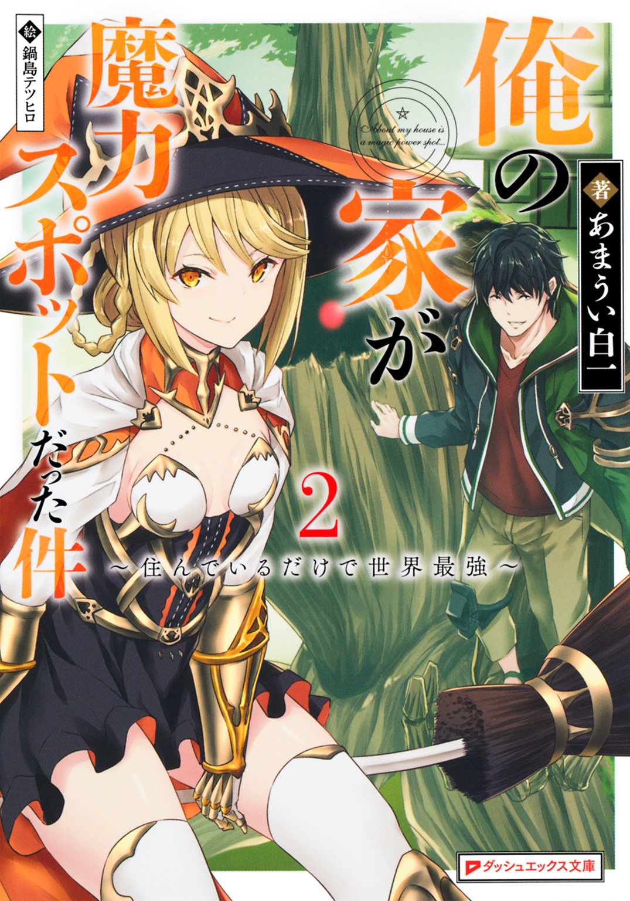
この本は縦書きでレイアウトされています。
また、ご覧になる機種により、表示の差が認められることがあります。
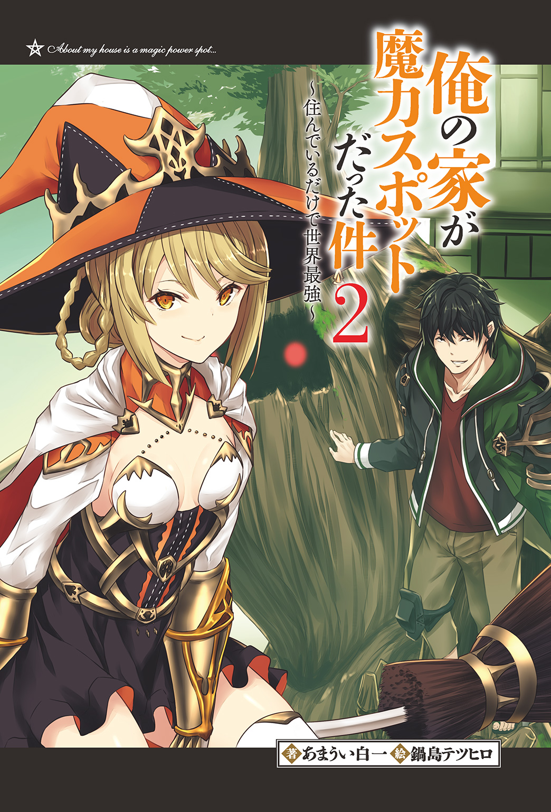
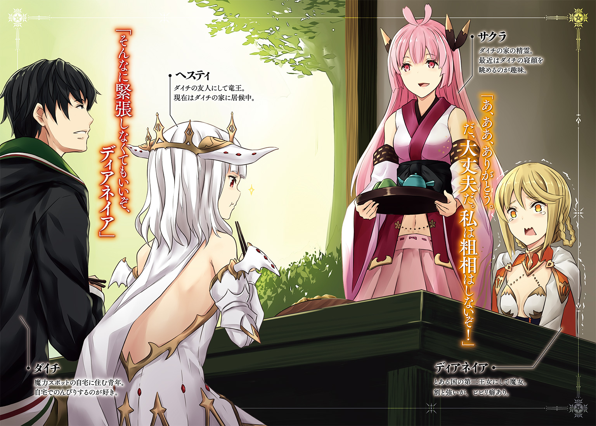
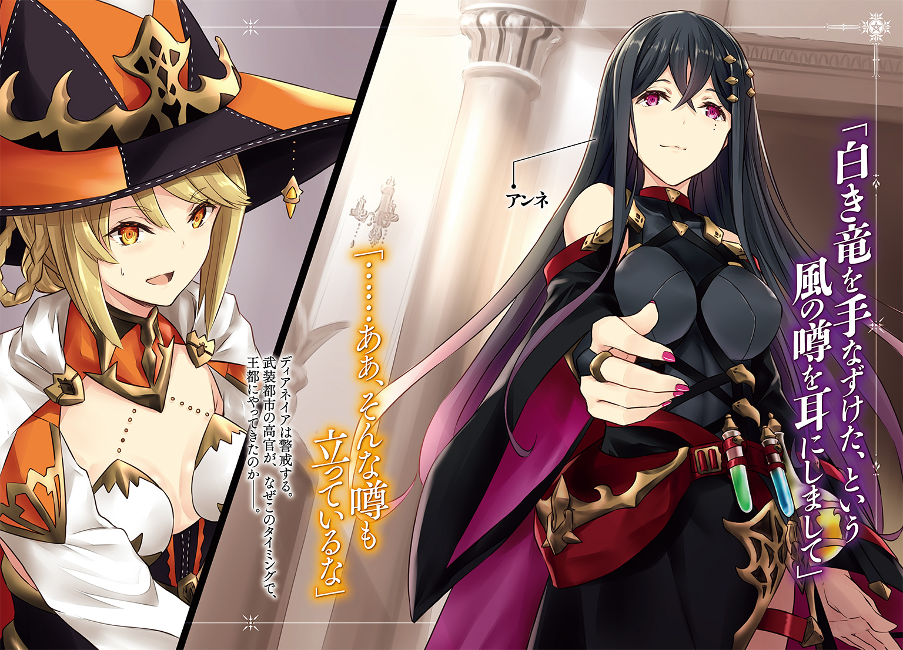
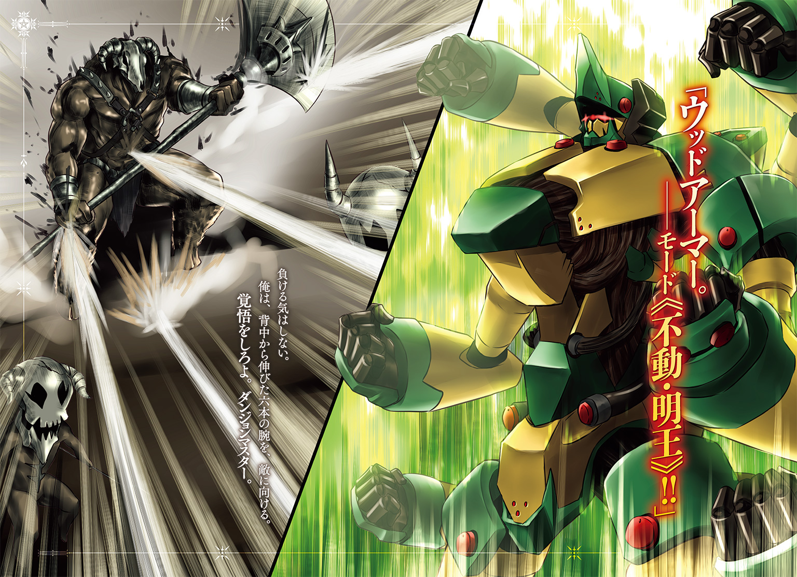
 ダッシュエックス文庫DIGITAL
ダッシュエックス文庫DIGITAL
俺の家が魔力スポットだった件２
～住んでいるだけで世界最強～
あまうい白一
これまでのあらすじ
俺の家は世界有数の魔力スポットに建っていた。
ある日、その魔力を狙う魔女たち、そして第二王都プロシアを治める姫、ディアネイアにより、家ごと異世界に召喚されてしまった。
だが、俺の身に宿っていた圧倒的な魔力でもって、彼女たちを撃退した。
魔力スポットに数十年間住み続けた俺の体には異常な程の魔力が貯めこまれていたらしい。少し叫ぶだけで、ドラゴンですら吹き飛ばせる衝撃波が飛び出るほどに。
そんな力を持った俺が望むのは――平穏で平和な生活だけだった。
あふれ出る魔力によって顕現した我が家の精霊、サクラから力の使い方を学びつつ、俺は異世界で生活を始めた。
ただ、家ごと異世界に来たお陰で着るものにも住む所にも困らない。
食べるものも備蓄があり、更には魔力のお陰で食物を作れることが分かったため、とても気楽な生活を送ることができていた。
時折、我が家の土地を狙って面倒なモンスターや、徒党を組んだ人狼が来ることもあった。
俺の家が召喚された場所は、《魔境森》といって、人狼が力で支配していた物騒な地域だったらしい。
けれどもそいつらは庭に仕掛けた罠や、魔力によって生み出されたゴーレムによって簡単に打倒して追い払えたので、全く問題にならなかった。
また、人狼は俺の力を見て、この森の新たな主として認めてしまったらしく、貢ぎ物として食料を届けてくるようになった。断ると自ら命を絶つとか言い始めたので、仕方なく受け取ることにした。
そして、家に来るのは物騒な連中ばかりではなかった。俺にこの世界についての知識を教えてくれる、ヘスティという幼女の旅人もいた。
彼女から常識を教えてもらいながら、俺は日常を続けていく。この世界に呼び出した元凶、ディアネイアとも会話して、少しだけ仲よくなったり、ウッドゴーレムを改良したり、平和な毎日を過ごしていたんだ。
だけど、ある日俺の家に竜の集団と、白焰の飛竜王を名乗る奴がやってきた。
白焰の飛竜王は俺の家に炎のブレスを叩きこみ、戦えと挑発してくる。
俺の安住の地を壊そうとする奴は、許せない。そう思った俺は自衛のために学んだ魔法を行使し、圧倒的な力で竜王を叩き落とした！
そこで俺は竜王の正体を知る。
竜王はへスティだった。彼女が今回の戦闘に至ったのは、竜と俺との全面戦争を回避するためだった。
王である自分が戦って負ければ、皆も引っ込むだろうから戦ったと。その事情を聞いた俺は、へスティを少し叱った。
「困っているならそう言ってくれ。せっかく話すチャンスがいっぱいあったんだから、相談しろよ」
その言葉にヘスティは頷き、どうにか彼女と和解することができた。それどころか、竜の住処に戻れぬ、という彼女に、我が家の一部を貸すことになった。
和解後、竜王の友人、兼店子を得た俺は、再び平穏で気楽な生活を取り戻したんだ。
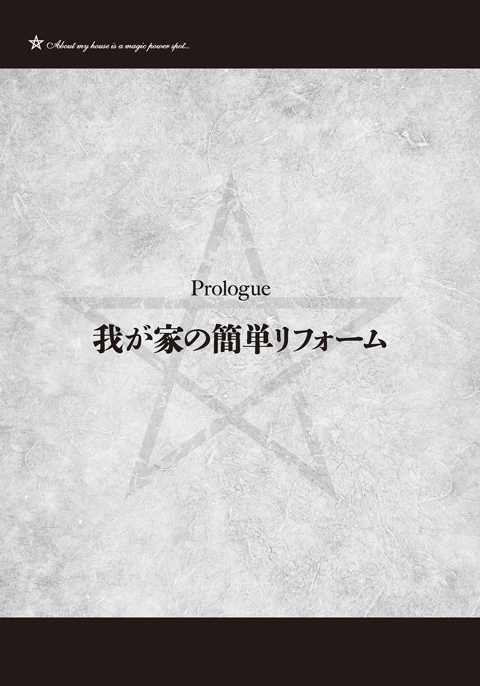
竜王ヘスティの襲撃から数日後。
あれから我が家はどんどん成長して、一〇階建てになっていた。
高層マンションに住んでいる気分だ。
森の木々の向こう側まで気持ちよく見渡せる。
......内装はただの二ＬＤＫなんだけどな。
日本にいた頃と全く同じだ。だからこそ落ち着けるというのもある。
そんな我が家の最上階で、俺は、いつものようにサクラが作った朝ごはんを食べ終えて、一息ついていた。すると、
「主様。ちょっとご相談があるのですが、......よろしいですか？」
サクラが食後のお茶を注ぎながら、そんなことを言ってきた。
「相談？」
「はい。私を、この家を改装してほしいのです。――先日、ヘスティちゃんの襲撃があってから、少々この形は不安定かと思いまして」
「あー......まあ、そうかもしれないな」
魔力の壁によって、高層階の風などは防げている。
だが、一直線に高くなっている現状、下の部分が崩れると一気に潰れてしまう危険性もある。
ヘスティの攻撃には耐え切れたけれども。
「下が壊れると、危ないか」
「魔力の壁で補助してあるので、すぐに崩れたりはしませんが。もしも、を考えると少し危ないかもしれません」
そうだな。絶対に崩れない、なんてものはないし。
下の階層を一度燃やされて、そのまま放置しているのも問題だよな。
「改装するにはいい機会か」
「はい、よろしくお願いします」
「任せろ。......でも、どうやって改造すればいいかね？ 俺が樹木で補強したりすればいいか？」
やろうと思えば、樹木で一気に囲うこともできる。
そう言うと、サクラは首を横に振った。
「いえ、これは私の不手際ですから、私の体と魔力をフルに使っていただければ、と」
不手際ってほどでもないだろうに。
燃やされたのはヘスティのやらかしが原因だし。
塔になったのは、自然にそうなってしまっただけだろう。
「それでも、主様の住処として、安全性を高めきれてないのは、やはり私の責任です。なので、是非、私と同期して、改造していただければ、と」
「ああ、使うっていうのは同期のことだったか」
「はい、私の全体像を把握しながら、形状を改造してください。やり方は、同期中に自然と分かるかと思いますので」
「了解だ」
お茶を一口飲んでから、サクラに触れて同期を開始すると、普段のように我が家の全体像が頭に浮かぶ。
「ん......そのまま、ちょっとだけ、私と家に集中してください」
「おう」
言われた通り、意識をサクラと我が家に向けると、その階層がはっきりと見えた。
「っん......階層が見えたら、......あとは魔力を使う要領で、直感的に、動かしてもらえば、改造が行えます」
色っぽく息を吐くサクラに集中力を少し持っていかれそうになるが、ひとまず今は家に集中する。
......魔力を使う要領で......っと。
試しに、一階層目を横に一メートルずらしてみる。すると、
「おおっ!?」
ゴゴゴ、と直下から動く音が聞こえた。
「お見事です、主様。相変わらず感覚を摑むのが早い」
「いや、見事って、これだけで動いてるのか？」
「はい」
こんな即座に、巨大な建造物が変形するのか。
相変わらず単純というか、簡単だな。
魔力の使い方ってのは本当にこれでいいのか、いつも疑問に思うよ。
というか、ダルマ落としみたいに一番下が動いたから、ずれたり崩れたりしないだろうな。
「同期中は主様と私の魔力の壁で強く補強されていますので、崩れる心配はございませんが......外に出てやりますか？」
「......まあ、そうだな。最初だし、念には念を入れて、外でやるか」
動いている場面もこの目で見たいし。
というわけで、俺たちはリンゴ畑の庭に出ることにした。
庭で作業を再開して一〇分。
じっくりやって分かったことだが、どうやら階層をブロック単位で動かして、位置や形を変えられるらしい。
尖らせたり、横に大きくしたり、体積を変えなければ基本的に自在に動く。
また、焦げついたり、汚れたりした部分を、他の階層の素材を流用することで直すことも可能だった。
......なるほど。これは便利だし、面白い。
豪勢な積み木をやっているような気分だ。
既に我が家は塔ではなくなっている。
塔型は横の脅威に弱いからな。
だから安定性重視で、階層を組み替えている。
......リンゴ畑があるので、高さをそのまま横にはやれないが......。
それでも、庭は広いので、ある程度の幅は取れる。
というわけで――数分後。
「できましたね、主様！」
新しい我が家が完成した。そう、
「できたなあ......ピラミッドが」
安定性を求めるがあまり、四角錐型の家が出来上がった。
最上階は相変わらずの、二ＬＤＫだけどな。
「あー......なんかやっぱり、間違えた感じがするぞ、これ」
安定、安定、とずっと頭に浮かべていたらこの形になってしまった。どうやら俺の造形センスの磨き方が足りなかったようだ。
「しかも、ピラミッドって墓だよな......。なんで家を作ろうとしてこの形にしたんだ、俺」
「そんなことありませんよ、主様。安定性、というコンセプトには、これ以上ないくらいふさわしいものです」
サクラが真顔で言ってくる。
確かに安定性はあるんだけどさ。
「頑強で、守りも堅い。いい形状です！ これだけの守りがあればヘスティちゃんが体当たりをしてきても、ビクともしないでしょう」
そんなに堅くなってるのか。
じゃあ、守りの形としては合っているのかもしれない。
「目指していたのは小さな城みたいな形状だったんだが、これでもいいのか」
どう作ろうとも、住む分には問題ないから、よかったりする。
それに、城の形状を作るには一〇階層では足りなかったしな。これはこれで正解だったのかもしれない。とはいえ、もうちょっと格好良くはしたいが。
「まだまだ、増築していけますから。いずれ、思い通りの形になりますよ、主様」
増築か。
確かに、俺がサクラと寝れば寝るほどこの家は成長して、広く大きくなる。だけれども、
「このまま成長し続けたら、いびつな形状にならないか？」
大きな三角形の下に、ちょこんと一室増えるような、きのこ型になるんじゃないか。
「いえ、大丈夫です。できちゃうとしても、場所や形のコントロールは効きますので。離れができたり、あるいは小さな塔が横にできたりするだけかと」
「ああ、それなら安心か」
「はい。なので、のんびりと、主様の好きな形になさるのが、いいかと思われます」
ふむふむ、せかせかやることもないってことか。
とりあえず、今日一日はこのピラミッドで落ち着くとしても、お墓の中で長く暮らすわけにもいかない。
「そうだな。造形センスを磨きつつ、時間かけて、まったりやってみるか」
「はい！」
サクラという家を、不格好なものにしたくないし。
適度に調べながら、自宅の改造を続けていくとしよう。
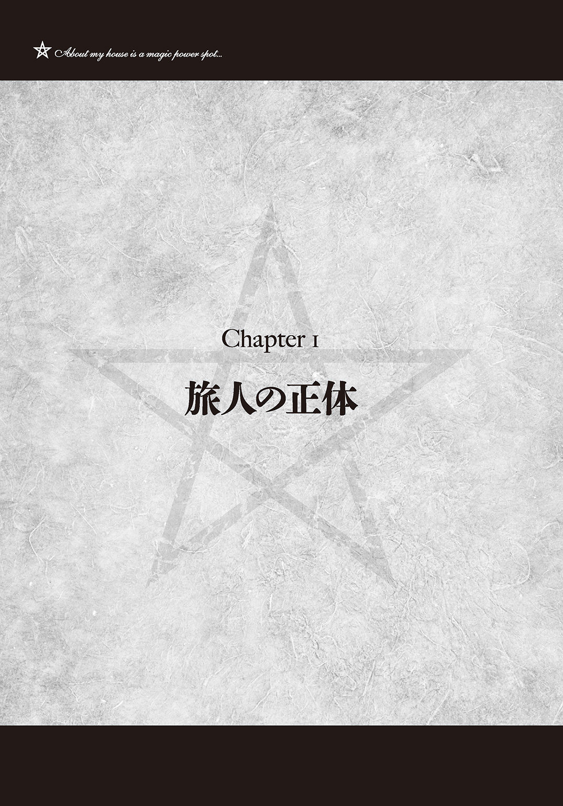
昼間、俺は、リンゴ畑で家のリフォームを続けていた。
結局、あの後、ピラミッド状態は一日で解除して塔に戻した。
住むこと自体に問題はなかったが、やっぱり見てくれが良くない。
......いや、ある意味美しいんだけど、墓だしな。
住居として考えると、少し問題がある。
なので、今は元々の塔を中心に、形を整えていた。
リフォームする時とは異なり、塔の形に戻すのは一瞬で行えた。
「私の方で元の形は記憶しておりますので、魔力を流し込むだけで戻すことが可能です」
ということらしい。
サクラが基本の形を覚えてくれているなら、いくらでもリフォームの練習は冒険的にできそうである。
「こういうのは場数を踏まないと上手くいかないからなあ」
ウッドゴーレムの造形と一緒だ。作り慣れないと、形を整えることも難しい。
「主様、毎日のようにウッドゴーレムを作っていますからね」
「おう、お陰で、ウッドゴーレムもアーマーも、多少は格好よくなってきたぞ」
最初はもっさり状態だったゴーレムも、今では細かくやれば仁王の顔を彫ることができるまでに至った。
習作のゴーレムはリンゴ畑に置いてあるが、なかなかいい感じにできていると思う。
「ただ、ゴーレムと違って、家の形を元に戻すだけでも結構な魔力を使うな」
同期してサクラの魔力を使っているものの、消耗は激しい。
家をブロック単位で動かすのは、どうしても俺の力が必要になるからだ。
それがバカにならない。
数回やると休憩が必要になってくるレベルだ。
「はい......それは、申し訳ないです。私の力が至らず」
「いや、別に謝られることじゃない」
これはこれで、なかなか面白いものだ。
組み替えて、休憩するタイミングで見直すこともできるしな。
なんてことを思っていると、
「......また、変な魔力の使い方してる」
リンゴ畑の小屋から、ヘスティが出てきた。
目をこすっているということは、寝起きだろうか。
「おはよう、ヘスティ」
「ん、おはよう。昨日から、魔力の変動を感じると思ったら......こんな使い方をしているとは、思わなかった」
これは驚かれているのだろうか。
呆れられているのだろうか。
ヘスティは新しく組み立てられた我が家をじっと見つめている。
「すごい。けど、湯水のように、魔力を使ってる。いくらアナタでも、消耗が、とても激しいはず」
「おう、やっぱり分かるか。そういうのは」
「ん......普通の人なら、一回やるだけでも、倒れるくらいの魔力を、使ってる。――だから、これ。使うと、楽」
そう言って彼女が渡してきたのは、いつかの白い杖。
しかし、今度は以前よりも太く、更にがっしりした形状になっていた。
「もしかして、昨日からずっとこれを作っていたのか？」
「そう。ちょっと時間がかかったけど、前よりも、もっともっと、頑丈に作った。前よりも更に、壊れにくい」
「おお、ありがとうよ、へスティ」
でも、これを使うって、魔法鍵を使えってことだろうか。
「家の組み替えに使えるのか？」
「多分、魔法鍵に形状を記憶させておけば、変えられると思う。どう？ 合ってる？」
ヘスティは俺とサクラに首を傾げて尋ねた。
「俺は分からないが、できるか、サクラ」
「ええと......はい。私と同期は必要かもしれませんが、決まった形をセッティングしてあれば、一瞬で組み替えられると思います。私が元の形を覚えていて、一瞬で戻せるような感じになるかと」
おお、凄いな。
それじゃあ、作った形態をそれぞれで記憶させておけばいいか。
そしてキーワードで変形できるようにしておけばいい。
「でもまあ、本当にできるか分からないし。試しにやってみるか」
今の形態は《通常塔》として、魔法鍵に登録しておくとして、
「サクラ。同期してくれ。ちょっとだけ組み替える」
「はい。よろしくお願いします」
俺は白い杖をもち、サクラに触れる。
そして、組み替えるのは、今日の朝まで在った形。
それを頭でイメージしながら、言語と組み合わせて、
「モード《金字塔》！」
言葉を発した。
瞬間、我が家は四角錐へと変化した。
「へえ、本当に、一瞬で変わったよ」
「お見事です、主様！」
これならいつでも、一度作った形を再現できる。
いちいち組み替えて、前のをどう作ったか思い出す必要がなくなるので、とても楽だ。
「......ん、今回は、壊れてない。杖の出来も、完璧」
ヘスティがこちらの顔と杖を見比べながら言ってきた。
確かに杖も無事だ。
......これはかなり使えるぞ。
サクラとの同期は必要だけど、魔法鍵のおかげで省エネで、消耗もしてないしな。
「これならいずれ、主様だけでも、一度変化した形であれば、変更できるかもしれませんね」
おお、それはそれで楽だな。
練習の度に、サクラの手を煩わせることもなくなるし。
「この杖、ありがとな、ヘスティ。すげえ楽になったよ」
「ん......我も良かった。ちゃんとしたものを作れた。壊れたら、また直すから、いつでも言って」
「おう、その時は、また頼むわ」
こうして、俺のリフォーム効率は更に上がった。
様々な形を試しては、魔法鍵に登録して、元に戻してを繰り返しまくったら、我が家が変形ロボみたいになってきたけれど。
でもまあ、最後は住みやすい形に落ち着くのだし、今は色々やってみよう。
昼間。
我が家の改造を一段落させた俺は、ウッドゴーレムの造形練習に入っていた。
「とりあえず......ウッドゴーレム×二〇」
手始めに二〇体ほど、庭の樹木をゴーレムにしてみた。
ただし、のっぺらぼうの木偶人形ではなく、少しだけ形にこだわったゴーレムだ。
以前に比べて、より人型に近い体と、顔をしているが、
「うん、まだまだだな。顔の造形はやっぱり難しい」
のっぺらぼうから落書きした顔程度の精密さは生まれたから、成長していると言えば、成長している。
だが、改良の余地はまだある。
なので、ここからが練習だ。
「イメージイメージ......」
記憶の中にある、いかつい顔とゴツイ体を、頭に浮かべて調整していく。
粘土細工をするように丁寧に想像していくと、ゴーレムの顔が徐々に動き出して変わっていった。
そうして、少しずつ造形をしていく。
......最初は物凄く時間がかかったが、慣れたもんだな、俺も。
暇な時間があればこればかりやっているから、初期よりも上手く素早くなっている。
やはり、こういった作業は慣れるのが一番だな、などと思いながら、二〇体のゴーレムを力強く造形していると、
「ひ、ひぎゃあああああああああ!! なんだこのいかついゴーレムたちは!?」
どうやら、来訪者みたいだ。
「人が静かにイメージ作業をしている時に、うるさいのが来たもんだな」
今日も騒がしいな、あの魔女姫は。
そんなことを思いながら、俺は声のした方向に歩いていく。
リンゴ畑の外れ。
ヘスティの小屋の付近に、魔女姫は座りこんでいた。
彼女はこちらを見つけると、腰の抜けた体を無理やり立たせながら挨拶してきた。
「や、やあ、ダイチ殿。久しぶりに会いに来させてもらったよ」
「おう、それはいいが......久しぶりにやりやがったな、ディアネイア」
明らかに地面にシミができている。
「す、すまない。あの怖いゴーレムの集団に、驚いてしまった」
「そんなに怖いか？」
確かに俺の作ったゴーレムはどれも筋骨隆々としていて、いかつい顔をしているとは思うけれど。
ゴーレムもちょっとしょんぼりしてるぞ。
「ええと、その、なんというか......これだけの怒った顔が並ぶと、相対した時の威圧感が凄まじいのだ......」
ああ、そうか。二〇体もいれば、確かに少し怖いな。
ただ、そのせいで、やらかされてはたまらない。
「仕方ないな。ウッドゴーレム。――戻れ」
これ以上漏らされてはたまらないので、魔法鍵を使った。
《戻れ》の一言で、リンゴの木に戻るように仕込んである。
これならば片付けも楽だし、再利用もできる。
だから非常に便利だったりする。
「ほら、これで怖くないだろ」
だからさっさと立ち上がって用件を教えてくれ、と言おうとしたのだが、
「――そ、それは、魔法鍵の術式!?」
ディアネイアは変なところで驚いていた。というか、
「ディアネイアも知ってるんだな。魔法鍵」
意外とスタンダードな技術なんだな、これ。
「そ、それはもちろん。なにせ高等魔法だぞ!?」
違った。
ディアネイアは興奮して説明してくる。
「ふ、普通の魔法使いは、最低でも一行、あるいは一節の詠唱がいるのだ。でなければ、魔法は発動させられない。私のような大魔術師級でも、魔法鍵なんて、一つや二つ使えればいいところなのに......!!」
そんなに、高等な技能だったのか。
その割にはヘスティも普通に使っていたような気がするけれど。
もしかしてあの幼女竜は、凄い魔法使いなのかもしれないな。
「い、いつの間にか、魔法の腕でも抜かれているとは......。私も一つしか作れていないというのに......まだまだ未熟すぎる......」
そして、ディアネイアは説明の後で勝手に落ち込んでいる。
勝手に来て、勝手に漏らして、勝手に興奮して、勝手に落ち込むとか忙しい姫だな。
「落胆しているところ悪いが、ここに来た用件を聞いてもいいか？」
「あ、ああ......土地の権利書をな。届けに来たのだ。あの時は渡せなかったから」
ふらふらと立ち上がったディアネイアは、腰につけていたバッグから、一本の巻紙を取りだしてきた。
「これが、街の土地の権利書だ。どう使ってもらっても構わない」
手渡された巻紙を広げると、なにやらいくつもの文字が書きこんであった。
ただ、俺はまだこの国の文字は読めない。
一応ヘスティから教えてもらっているので、あとで彼女に聞いてみよう。
......まあ、土地を貰ったところで使い道なんて思い浮かばないわけだが。
持っているだけで損はないだろう。税金とかはないって話だし。
「ところで......話を戻すが、ダイチ殿。貴方は、その魔法鍵を、どうやって使えるようになったんだ......？ 自分で開発したのか？」
「いや、俺は教えてもらったんだ。通りすがりの幼女に」
そう言うと、ディアネイアは目を丸くした。
「そ、そんな幼女がいるなら私も会ってみたいよ。私を鍛えてくれるような存在は、あの街にはいないからな......」
何を言ってるんだこの魔女姫は。
「もう出会ってるだろ、ディアネイア。この前、俺と一緒にいたし」
「一緒に......って、あの、貴方と同居しているという、あの竜王か!?」
驚愕の声をあげるディアネイア。その音量が大きかったからか、
「ん......誰か、いるの？」
ヘスティが小屋から出てきた。
昼寝をしていたようで、目をこすっているが、ちょうどいいや。
この権利書の確認もしたかったところだ。
「ちょっとこっち来てくれ」
「ん......どうしたの？」
ヘスティはちょこちょこと、こちらに歩いてくる。
とても幼く可愛らしい動作だが、
「ひいっ......!!」
ディアネイアは物凄い勢いで後ずさりした。そんなに怖いのだろうか。
今は、ただの幼女なのに。
「まあ、いいや。ヘスティ。少し文字を読んでくれないか？」
「文字？ どれ......？」
巻紙を渡すと、俺の傍にちょこんと座って、ヘスティは読み始めた。
あとは何が書いてあるか、彼女から聞こうと思っていたのだが、
「へ、ヘスティー......だって？」
後ずさりしていたディアネイアが戻ってきていた。
そして、ヘスティの顔を覗き込んできた。
さっきまで怖がっていたのに、どういう風の吹き回しだろう。
そう思っていたら、
「まさか......貴女は、黒衣の超級魔法使い、ヘスティー・ラドナ、か？」
ディアネイアは、震える声でそんなことを言い始めたのだった。
ヘスティはディアネイアの声にゆっくりと反応した。
「ん......？ 懐かしい名前を、よく、知ってる。アナタは、誰？」
「や、やはり、髪の色や服の色は違うが、そうなのだな!? ま、まさか伝説の魔法使いの正体が白焰の飛竜王だったとは......!!」
どうやら、ディアネイアはヘスティのことを知っているらしい。
「......？」
でも、ヘスティはディアネイアのことを知らないようだ。無表情で首を傾げているだけだし。どうなっているんだ。
「というか落ち着けよ、ディアネイア。大声出し過ぎだし、俺たちが話についていけてない」
「あ、ああ、申し訳ない。伝説の魔法使いに出会えて、興奮してしまった。そうだな。私が一方的に知っているだけで、失礼なことをした」
ディアネイアは深呼吸して、気持ちを落ち着けていた。
「しかし、ヘスティが伝説ってどういうことだ？」
「いや、数十年前、プロシアの魔法協会にふらりと現れた、黒衣の魔法使いがいたんだ。そのものは僅か数日で超級のランクを手に入れて、再びふらりと消えたという、伝説的な記録があってな」
「それが、ヘスティだと？」
「ああ、ヘスティー・ラドナと名乗っていた」
あれ？ 微妙に名前が違うぞ。
本当に微妙だけど。
「ヘスティ、この話、本当なのか？」
聞くと彼女はこっくりと頷いた。
「一応、実話」
「ヘスティの名前ってヘスティ・ラードナだよな？」
「ん、人間の方で使ってたのは偽名」
「......伸ばし棒の位置を変えただけなのは、偽名とは言わないぞ」
ある意味偽ってはいるけどさ。
というか、以前から思っていたのだが、白い髪と白い服を黒くしただけとか、偽り方が雑すぎじゃないだろうか。
「ん、でも、まあ、バレても、別に良かった。我、周りの奴らが染めたり、偽名登録してなきゃ、そのままやってたし」
「ああ、そうか。仲間がやってたのか」
竜の谷にはいっぱい、仲間がいるらしいし、竜王に世話を焼くものもいたのだろう。
「しかし、何十年も前からその姿で旅をしてたんだな、ヘスティ」
「ん......我、結構、お年寄り」
見た目が幼女な子に言われると不思議な気分になるな。
「本当に凄い人だったのだ。様々な人から話を聞いたり、関係する文献を読んだり、少しだけ残っていた記録映像も見たことがあるが、まさか以前と同じ見た目でいるとは」
「竜は数十年程度じゃ、容姿は変わらない。......でも、我なんか小物。この人の方がすごい」
ヘスティはそう言いながら俺に話を振ってきた。
「ああ、まあ、......確かに」
ディアネイアも真顔で同意している。
「そこだけは、共通意見にできて、良かった」
見ればヘスティも頷いている。
おいおい、二人で意気投合しているぞ。
なんだか疎外感を感じるじゃないか。
「だって、我、超級だけど。アナタが魔法協会行ったら、まず、ランクをつけられない」
「え？ そうなのか？」
ディアネイアに聞くと、静かに頷いた。
「ダイチ殿は規格外すぎて、神話級のランクは間違いなくとれるだろうが、それは、それ以上を測れるモノサシがないということでもある。だから、ランクをつけられないのだ」
「......ん、アナタなら、一日で神話級の認定される」
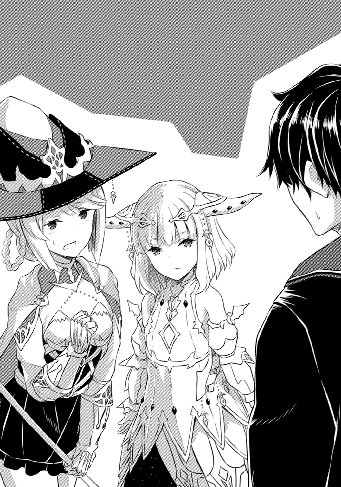
そんな簡単で良いのか、魔法協会。
「いや、普通にやれば簡単ではないのだが......ダイチ殿が異常なのだ。ヘスティ殿を越えるというのは、普通ではないからな」
「ん、我は、竜王の中では魔法が上手い方。だけど、アナタは、それ以上だから」
二人はまた、うんうん、と頷いている。
なんで、この子らは俺をネタに打ちとけ合っているんだろう。
ディアネイアもさっきまでヘスティのことを怖がっていたのに、そんな様子は既にみじんもなくなってるし。
「いや、それはダイチ殿のような強い人と、何度も話していたから、恐怖に対して慣れるのが早くなったのだと思う」
俺と話すだけで恐怖耐性がつくんだな。
それはそれで、若干、失礼な話だけれど。
なんて思っていると、ヘスティに合わせて屈んでいたディアネイアがゆっくりと立ち上がった。
「ふう......貴重な話ができた。名残惜しいけれども、今日のところはここで帰ろうと思う」
「おう、そうか」
「......ただ、改めて、礼を言わせてくれダイチ殿」
「うん？ 何の礼だ？」
「私は貴方とヘスティ殿に会えて良かった。私も貴方たちのように強くなるために、頑張ろうと思う。だから......また。会いに来させてくれ」
そんなさわやかな挨拶と共に、ディアネイアは去っていった。
「なんか、一人で、興奮して、帰っていった」
「落ち込んでた状態で帰られるよりはいいのかもな」
「でも、地面に、へんなシミが、できている」
「......とりあえず、その辺のマーキングされた土は掘り起こして、ゴーレムに庭の外まで運ばせるか」
ついでに、庭の土も入れ替えてしまおう。俺とヘスティは二人で、庭の外から土をもってくることにした。
「そういえば、ヘスティ。お前ってかなり有名だったんだな」
まさかこの幼女が伝説の魔法使いだなんて、今日一番の驚きだった。
「ん。ただ、知名度なんて、あっても、意味ない。多分、今は、アナタの方が有名になっているし」
「そうか？」
「少なくとも、谷の飛竜の間では、話題沸騰してる、はず」
その沸騰の仕方は喜んでいいのか、分からないぞ。
「悪いことじゃない。あの谷に住んでいる竜たちは、アナタの配下も同然だし。話題になるのはいいこと」
「別に配下にした覚えはないんだけどなあ」
でも、竜の襲撃とかはなくなったし。良いことなのかな。
そんなことを考えていると、ヘスティが巻紙を再び丸めて手渡してきた。
「これ、読み終わった。プロシア一番街の土地って書いてある。そこそこ広い」
「一番街？ 街の住所で示されても分からないんだがなあ」
「我が以前、街に行っていた時は、城の周辺が一番街だった気がする」
ふむふむ。城の近くってことは、悪い土地でもないのだろう。
一等地って言っていたし。
まあ、使い道が決まるまでは、そのままにしておこう。
「さて、と。庭の土入れも終了したことだし、夕飯までゴーレムの造形練習でもするか」
「あ、我、アナタがゴーレム作ってるところ、みたい」
「おお、見物人がいるなら、ちょっと気合い入れて作るか」
そして、夕飯までの間。
俺はヘスティが見守る中で、ゴーレム作りに精を出し続けた。
夜。ディアネイアは執務机で今日も仕事をしていた。
「今日も盛りだくさんだな......」
飛竜の大軍と竜王の襲来で、混乱に陥った街の復旧。
市民たちへの説明。
この前のパーティーで集めた情報の整理。
人狼たちとの交易記録の更新。
やることは山積みになっている。
だが、それでも、以前よりも徹夜をしなくてよくなった。
それは、彼があの場所にいてくれるおかげだろう。
「ダイチ殿......」
彼は唯一、仕事から離れて一人の魔女として、相対できる人だ。
また会う日はいつになるのかと頭の隅で考えながら、ディアネイアは机の上の書類を片付けていく。
すると、コンコンと扉がノックされた。
「姫様。夜の定期報告です」
「おお、オクトか。入ってくれ」
「失礼します」
そしていつものように、騎士団長のオクトから定期報告を聞く。
街の状況や、観測班による街の周囲の動きなど、様々な情報が入ってくる。
「ふむふむ、どうやら街は落ち着いてきたようだな」
「ええ、ダイチ様のお陰で。しかし、それでも、よろしかったのですか？ あの土地をダイチ様に渡して」
「うん？ 良くない判断だったと、思うのか？」
「いえ。そんなことはありません」
ただ、と騎士団長は手元の書類をペラペラめくる。
「あそこは王家の私有地で、様々な商店が買い取ろうと躍起になっていた土地でしたので。地中に特殊な魔石も眠っていますし、他にも活用法はあったのではないかと」
確かに彼に渡した土地は、城の隣の一等地だ。
街の大通りにあるから人通りも多い。
商店でも開けば客足は途切れない。
更に地中には、特殊な魔石が眠っている場所でもある。
だから、活用法は他にもあるのだが――
「いいんだ。あれだけの力を持った土地は、彼にこそふさわしい。商会にやっても持て余すか、暴走させるだけだ。彼にとっては、あそこに眠る力なんて木端みたいなものだからな。特に影響されることもないだろうし」
「まあ......そうですね。ダイチ様なら、あの土地を使うにしても、心配する必要はなさそうですが」
力が眠る土地、といえば聞こえはいい。
だが、実際のところ、使いこなせる者が少ない場所だった。
街の中心にあるがゆえに、暴走されては困る。
だからこそ、彼のような強い者にしか渡せないのだ。
「ただ、このままでは、武装都市の荒っぽい商会から不満がでるのでは？」
「その不満は私が一身に受け止めよう。あそこは、私が管理していた場所だからな。口出しなどさせない」
実際に行動を起こしてくる者はいないだろう。いたとしても、こちらで片付ける。彼を面倒事に巻き込むわけにはいかない。
「――そもそも、向こうは向こうで、ゴタゴタしているという話だ。こちらに口を出している余裕もないだろう」
「近隣の都市の中では、もっとも襲撃者に対する問題を抱えていますからね......」
王都プロシアも、竜と、人狼と、戦闘ウサギに悩まされてきた。
だが、武装都市に比べればまだマシな方とも言える。
......武装都市の近辺では、モンスターが生まれる場所――ダンジョンが多く発生する。
だからこそ、ダンジョンで稼ぐために、市民は冒険者となることが多い。
その結果、戦力が多くなっているのだ。
「最近、有能な人間が上に入ったらしくて、ダンジョンや襲撃の問題の解決が早くなったらしいがな。――っと、そういえば、武装都市から呼び寄せた戦力はどうなっている？」
竜王の襲撃用に、百人単位で呼び寄せた戦力がいるはずだ。
結局、無用になってしまったけれども。
「きちんと帰せたか？ 緊急ということもあって、冒険者など、正規兵でないものも混じっていたと報告を受けているのだが」
「はい。ですから......宝探しをすると言ってきかないモノが数名出ました。それ以外は、全員、帰還予定です」
市民が戦力であるから、あそこの都市には荒くれ者が結構いたりする。
ある程度は予想していたが、やはりそうなったか。
「因みに、森には行くな、と厳命しているか？」
「勿論です！ ですが、自己責任だと言ってきかない輩が出るかと」
やはり。そうなるのも想像できていた。
だからできるだけ、あの都市から人を呼びたくなかったのだ。
背に腹は代えられないので、今回だけは許容したけれども。
「とても、良くないな。いや、ダイチ殿はああ見えて、基本的には手心を加えてくれるタイプだが......」
「はい、私も握手した時、それは感じました。あの方は、こちらを壊さないように慎重に動いてくださっている、と」
「ああ、だから初見で死ぬことはないだろう。――が、彼にとっての迷惑になれば、また別だろうよ」
冒険者がどうなるか分からないが、彼に迷惑をかける確率は上がるだろう。あとで、謝罪用の品物を用意しなければ。
......うむ。また、あの場所に足を運べる理由を手に入れたと思えば、私としては好都合なのだがな......。
と、ディアネイアがダイチの顔を思い浮かべていると、
「......姫さま？ 大丈夫ですか、姫さま？」
「――ん、ああ、すまない騎士団長。ぼーっとしていた。他に報告は？」
「はい。報告しておきたいことがもう一つ。近いうちに、南方の武装都市から使節団が来るそうです」
「なんだと？ 何の使節だ？」
「どうやら、竜王の襲撃を退けたプロシアの話を聞きたいとのことでしたが......本音は分かりません。向こうにも、強大な魔力の波動を感知できるモノはあるでしょうし」
だろうな、とディアネイアも頷いた。武装都市はプロシアほどではないが、マジックアイテムに詳しい都市だ。
この辺りの魔力に気づいていないわけがない。だとすると、
「狙ってきているのか、ダイチ殿を。あの、地脈を」
「可能性はあるでしょう」
「もしもそうなら......無理やりにでも止めるぞ」
武装都市の荒くれ者どもに加えて、何をしでかすか分からない使節、か。
問題は重なり続けている。事態は動き始めているようだ。
「私たちも、少しばかり、気合いを入れなければな。これからも力を借りるぞ、オクト」
「はい！」
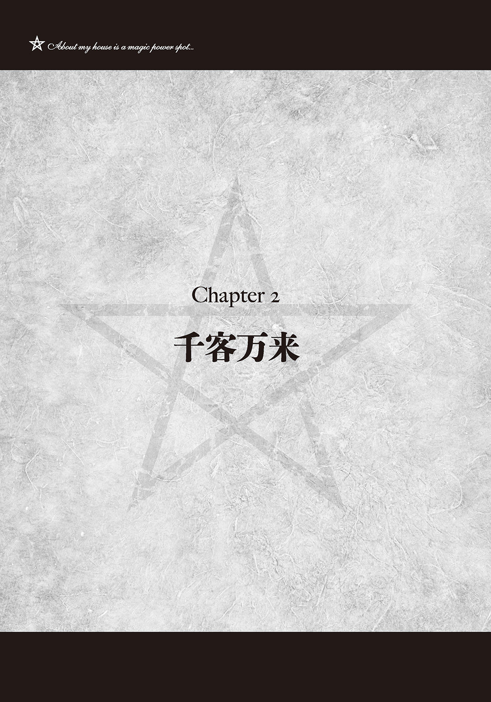
早朝の魔境森。
昇り始めた太陽の光から身を隠すように、森を進む姿が複数あった。
誰もかれもが鍛えられた筋肉を持つ、十人ほどの冒険者たちだ。
「ヒャッハー......!! やっぱり、異境の探索は早朝に限るな......!!」
大剣を担いだスキンヘッドの男を先頭に、彼らは素早く動いていく。
「おうよ......リーダー！ この時間ならばまだ、この森の人狼や戦闘ウサギは徘徊していないはずだ」
「ああ、冒険者ギルドの情報屋に聞いたから、それは間違いない。確かこの辺りのはず......っと、あったぞ！」
そして彼らは、巨大な塔型の建造物の前に到着する。
「ヒャッハー。ここが依頼された場所か？」
「そうだ。この座標で間違っていない」
地図を持ちながら、冒険者の一人が塔に近づこうとした。
その瞬間、
「......っぐ......えぇ......」
喉を押さえて、倒れ伏した。
まるで呼吸ができなくなったかのように。
「リーダー、これは!?」
「ヒャッハー。......ま、魔力酔いだと!? こんな場所だなんて聞いてないぞ！」
スキンヘッドの男は、倒れた冒険者を担ぎながら、周囲を見回す。
そして、一戸の小屋を見つけた。
「あそこに隠れるか、リーダー？」
「そうしたいが、見ろ。誰か出てきたぞ......！」
小屋の戸が開いて、出てきたのは、
「あなたたち、だあれ？」
白い髪をした一人の幼女だった。
見た目は普通の、小さな女の子だが、
「な、なんだ、この体にまとっている魔力は！」
彼女が持っている力の異常さは、冒険者として経験を積んでいる彼らにはひしひしと感じ取れた。
「武器を持ってるってことは、侵入者？ ......なら、我は、門番？ やったほうが、いいのかな？」
そして、幼女は、首を傾げながら、彼らに人差し指を突きつけた。
「とりあえず、忠告」
幼女から静かで小さく、冷たい声が放たれた。
それだけで冒険者たちは全身が重くなったような感覚に襲われた。
足が一歩も踏み出せない。
「な、なんだと？」
「ここ、私有地。そういう武器持って、入るの、駄目。――吹き飛ぶ」
「何を言って――ぐうっ!?」
一人が無理に動こうとした瞬間、幼女の指の先にいた冒険者が吹っ飛んだ。
「ひゃ、ヒャハッ......こいつ、魔法鍵を使ってくるのか。高レベルの魔法使いだ！ テメエら気をつけろ！」
「応！」
一人が倒されたのを見て、即座にスキンヘッドたちは剣を構えた。
「んー、警戒できる、レベルの冒険者。負けはしないけど、この状態での、戦い、やっぱり、慣れない。......焼いたほうが、いいか？」
幼女は首を傾げながら、うろうろとし始める。
だが、冒険者たちは油断しない。
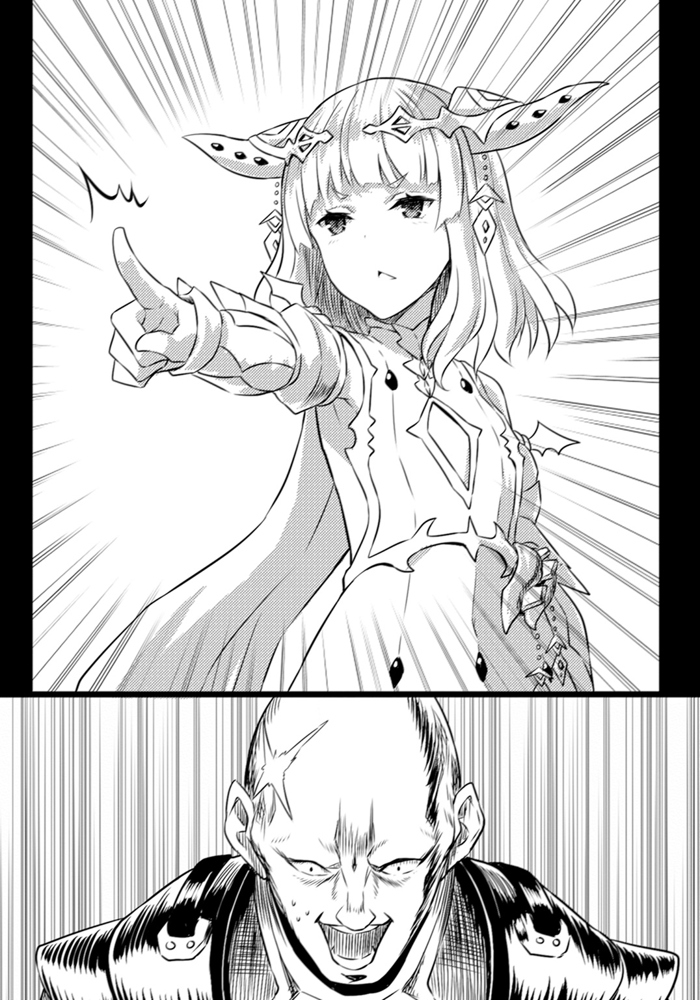
その一挙手一投足を見逃さないように、と彼らは注視する。
しかし、そこに予想外の動きが加わった。
「――！」
「......なんだ、あれは」
幼女の傍に会ったリンゴの木が、いきなり筋骨隆々のゴーレムに変化したのだ。
「あー、自立型のゴーレム、作ってたね。では、お任せ」
そしてゴーレムは、ノシノシと、幼女の傍を離れた。
無言で、冒険者たちに近寄っていく。
「な、なんだ、このゴツイゴーレムは......！」
「ヒャッハー、構うな！ ゴーレムといっても木製だ。叩き斬れ！」
スキンヘッドの男は大剣を振りかぶり、ゴーレムに斬りかかる。
大剣の重量を活かしたフルスイング。だが、
ギン、と、その刃は樹木に弾かれた。
「は、刃が通らないだと!?」
そして、そのままゴーレムの太い腕で殴り飛ばされた。
「ば、バカな！ リーダーの武装は業物だったはずじゃ......」
あっさりとスキンヘッドがやられたことで、他の冒険者たちは後ずさりをし始めて、
「や、やべえぞ！」
「て、撤退だああああ！」
「ひ、ひいいいいいいいいい!!」
逃げだそうとするが、遅い。
ゴーレムはその腕を伸ばし、次から次へと殴り飛ばしていく。
「た、助けて、助けてええええええ!!」
「ぎゃあああああああああ!!」
「......ん、まあ、多分、死なない程度に、収まるかな」
その様子を、静かに、ヘスティは観察するのであった。
遅めの朝。
俺が起きたら、何故か庭が騒がしかった。
「主様、おはようございます」
「おーう......」
とりあえず、ボーっとする頭を、顔をバシャバシャ洗ってたたき起こす。
「はい、主様。タオルです」
「お、サンキュー、サクラ。......にしても、なんかあったのか？」
随分と庭の方が荒れているけれども。
「はい。先ほどから襲撃者が来ておりまして。――あらかたノビておりますが、いかがいたしましょうか？」
「ああ、自動的に迎撃したんだな。いいことだ」
ゴーレムの設計を少し変えて配置してみたけれど、上手くいったらしい。
......うん、設計通りにいくと気持ちいいな。
しかし、また、魔力狙いだろうか。
そうだとしたらハタ迷惑な話だな。
「装備的に、ただの荒くれ者かと思いますが、狙いは不明ですね。そこそこ大勢ですし。――あ、朝ごはんは温め中ですので、もう少しお待ちください」
おお、ありがたい。いつも、準備万端だな。
「そういや、普段から俺が起きた瞬間に朝飯ができてるけど、サクラって夜中から作ってるのか？」
「そうですね。眠ることができないので、朝ごはんを食べる主様を想像しながら作るのが楽しいんです」
「レンジとかも動くから、そこまで手間をかけなくてもいいんだぞ？」
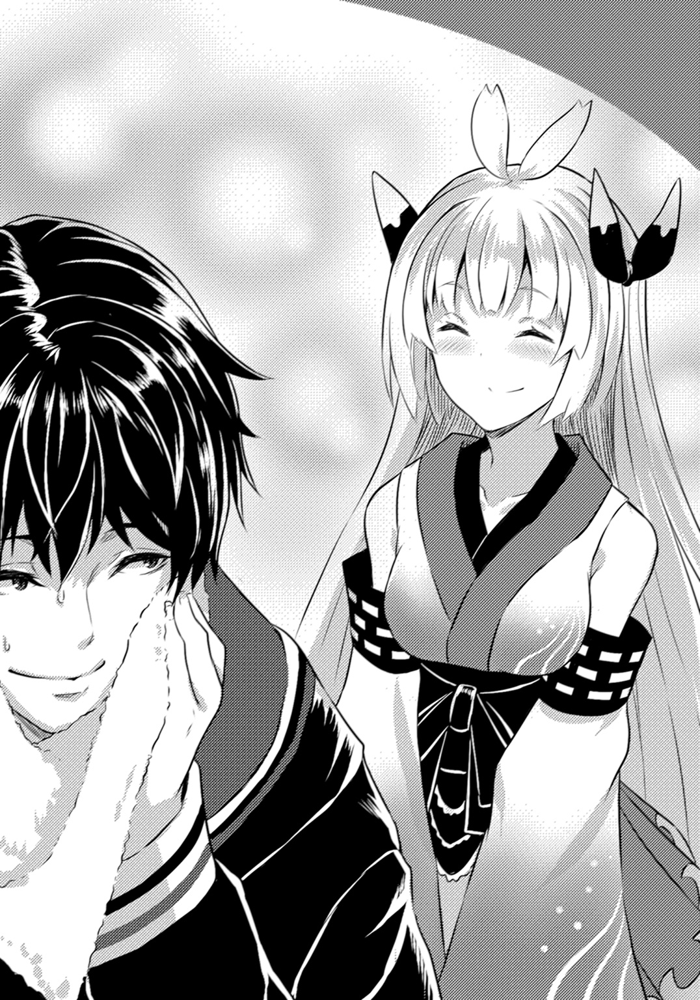
サクラの魔力で電気系の設備も使えるようになっている。
だから、レンジで冷や飯を温めることだって可能だったりするから、あまり無理をしなくてもいいと思うんだけどな。
「いえいえ、これが私の楽しみなので」
「そうか？ それならいいんだけれど」
タオルで水にぬれた顔を拭き終えるとすっきりした。
その状態で、外に目を向けると、
「――う、うわあああ!! な、なんだこの森は。逃げられねえ......!?」
新たな叫び声が聞こえた。
どうやら複数のゴーレムに追い回されているようだ。
「ありゃ、まだ襲撃者の残党がいたのか」
「殿ですかね。それとも、情報伝達のために逃げた輩か」
「そうか。じゃあ、捕まえて、話を聞くか」
「はい」
俺はサクラと同期し、新たにゴーレムを作りだす。
「ウッドゴーレム×二〇！」
二○体ほどを、一気に。
その冒険者の周辺に立たせてみた。すると、
「............!!」
「あ、気絶しちゃいましたね」
その光景を見て、その場で卒倒してしまったようだ。
罠を使うと威力が強すぎて大けがさせるか、気絶させてしまうかなあと思ってウッドゴーレムで捕らえようと思ったのに。
結局一緒だったか。
「うーん、上手くいかないもんだな。まあ、朝飯を食ってる間に起きるだろ」
「はい。では、朝ごはんの用意しちゃいますね。お米が炊けましたし」
「おう、それじゃあ、メシにするかー」
良い感じに眠気も覚めた。
食って話を聞いた後はゆったり散歩コースだな。
そんなことを思いながら、熱々のご飯をほおばっていく。
うん、一仕事終えた後の朝飯は、すごく美味い。
朝飯を食べ終えた俺は、スキンヘッドどもの前にいた。
彼らはゴーレムたちに囲まれている中で、怯えていたのだが、俺が出向いた瞬間、土下座をした。
「「「す、スミマセンッした――！」」」
会うなり、全力で謝られた。
そして滅茶苦茶震えて、怖がっていた。
このゴーレム集団が、そんなに恐ろしいんだろうか。
......ともあれ、話をしなければ。
俺は近場の一人に近寄る。
「なあ、ちょっと話を聞きたいんだけども」
「はっ......ぁい......」
だが、俺が目を合わせようとしたら、顔から汗がブワッと吹き出し、白目を剝きそうになっていた。
「おい、寝るんじゃない。本当に話にならないだろ」
「はっ、はい！ す、すみません！」
ベシベシと顔を叩くと、目を覚ましたようだ。
なんだ。疲れてるのか？
「い、いえ、私は、そこまで魔力耐性が強くないので......息が、続かないんです」
そうなのか。教えてくれてありがたいが、それは困るぞ。
俺はただ話をしたいだけなのに。
「ええっと......じゃあ、この中で一番強い奴は誰だ？」
「ひゃ、ッハー。お、俺、です」
聞くと、スキンヘッドの大男が手を挙げた。
一番いかつい顔をしていると思っていたけれど、こいつがリーダーか。
俺はスキンヘッドの大男の前に座る。
大男は、震えはしていたが、気絶することはなかった。
これが強さの差というものなのかな。
まあ、俺は話ができるのであれば、なんでもいいんだけどさ。
「さて、まずはお前らの正体を聞かせてもらっていいかな？」
「ひゃ、っはー。......は、はい」
朝っぱらからの大暴れで、侵入者たちは相当消耗していたようだ。
質疑応答は意外と素直に進んでいった。
「なるほど。お前らは武装都市という場所の冒険者グループ、『シャイニングヘッド』で、数日前の竜の襲撃に合わせて、この辺に遠征に来たってことでいいんだな」
およそ五分間かけて、俺は彼らの正体と所属、経緯を聞きだすことに成功した。
「ひゃっはー。そ、そうッス」
「ふむふむ。それじゃ、次は目的の話をしよう。そのまま武装都市とやらに帰らず、お前らがここに来た理由はなんだ？」
既に竜の脅威は去っているのだから、この辺に滞在する意味はないだろう。
そう思って、聞くと、大男は数秒悩んでから、静かに口を開いた。
「お、俺たちがふだん暮らしている武装都市には、冒険者に依頼を出す司令部があるんですが......。そこに所属する色っぽいネーちゃんから、ここに宝があるらしいから見て来いって依頼を出されたッス」
「へえ......お宝ねえ。見つかったのか？」
「い、いえ、魔石が少しばかりありましたが、それらしきものは見つからなかったッス。因みに魔石にも手をつけていません！」
そうか。まあ、そうだよな。
俺もこの辺りを散歩したけれど、金銀宝石などの財宝的なものはなかったからな。
「ま、まさか、アンタのような、強力な魔力の持ち主が住んでいる、魔力スポットだとは思わず......。本当に、失礼しましたッス......」
なるほど。俺が住んでいるということは知らなかったらしい。
「来た理由は、本当にそれだけなのか？」
「は、はい！ それだけです!!」
噓を言っているわけでもなさそうだ。
つまり俺や家を狙ってきたわけではないのか。
それは分かった。けれど
「俺の庭に、断りなく足を踏み入れたのは感心しないな」
「――ひゃ、ヒャッハ――！ わ、分かってます！ 反省して、俺、この通り、頭を丸めてます！」
いや、それは元からだろう。
「た、足りないのであれば、――お、オメエらも！」
「お、オッス！ 丸めます!!」
スキンヘッドの指示に、後ろの連中も震えながら声をあげて、手持ちのナイフや剣で頭を剃ろうとし始めた。
「いや、頭を丸めるとか、それはどうでもいいって。というかやるな。俺の庭にゴミを出すな。髪は散らばるから掃除が面倒なんだよ」
むしろ迷惑だ。
......ただ、そうだな。
そこまで反省しているなら、もういいや。
「損害は何もなかったし。砕けた鎧の破片とかを片付けたら、お前ら帰れ」
「ほ、本当に......？ み、見逃して、いただけるので？ 見せしめに、首を晒したりとかはやらないんですかい......？」
どんな悪趣味な蛮族だ、それは。
確かに家を傷つけたりしてたらゲンコツの一発くらいはくれてやったけれどもさ。そこまで猟奇的な趣味はない。
「もう、俺の家を狙ったりしないんだろ？ そして、その司令部とやらに、宝物なんてなかったと伝えるのなら、帰ってよしだ」
「ひゃ、ヒャッハ――!! ご、ご慈悲、ありがとうございました――!!」
シャイニングヘッドの連中は、地面に頭をぶつけるような礼をした。
そして庭の周りのゴミを片付けてから、逃げ帰っていった。
冒険者たちから話を聞いたものの、不明な点がいくつか残ってしまった。
「色っぽいねーちゃん、か」
ねーちゃんっていうなら女性だろう。
けれども、俺の知り合いで、色っぽいのがいただろうか。
......サクラとヘスティはかわいいけどなあ。
非常に申し訳ないが、色っぽくはない。
ディアネイアは綺麗だけど、やはり色っぽくない。
「かといって、赤の他人が俺の家に宝があるとか、依頼を出すのか？ 目的がさっぱりわからんが......」
んー、まあ、今はどうでもいいか。
奴らが噓情報に踊らされた可能性だってある。
話しぶりや行動を見るだけで、簡単にのせられそうな連中だったし。
大体、今のうちから深く考えても、どうにもならない。武装都市なんて所があるってことも知らなかったしな。
へスティから地図は貰っていたけど、詳しくは教わってなかった。
「うん、その辺は、今聞いておくとしよう」
そう思い、俺はへスティの小屋に向かった。
すると、彼女は既に外に出ていて、空を眺めていた。
「おう、ヘスティ、ちょっと用があるんだけどいいか？」
「ん、大丈夫」
声をかけると、ヘスティはこくん、と頷いた。
だがその後で、彼女は上空を指差した。
「でも、......その前に。アナタにお客さん、来てるみたい」
「客？」
俺がへスティの指差す先を見ると、虹色の鱗をした竜が、旋回していた。
「あれは......極飛竜だよな？ ヘスティの知り合いか？」
「一応、知り合い。でも、今日、用事があるのは、アナタの方に、だと思う」
ヘスティの知り合いが俺に用件って、一体何なんだ。
そう思って空を見上げていると、極飛竜は、ゆっくりと高度を落としてきた。そして、
『見上げさせてしまって、非常に申し訳ありません』
竜の言語を飛ばしてきた。その声はとてもしわがれたもので、
『着陸の許可をいただきたいのですが、よろしいでしょうか。我らの古き姫君と、我らが新しき君主よ』
その極飛竜は、俺たちを敬うような言葉遣いと視線を向けてきていたんだ。
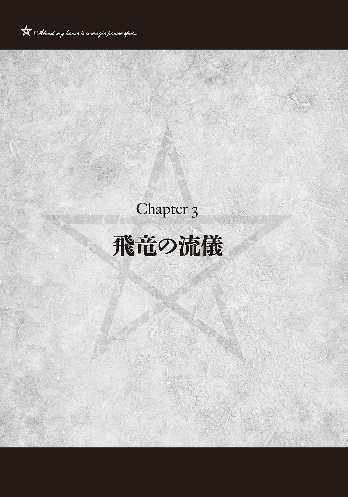
空から虹色の竜が降りてくる。
ただ、襲いかかってくるような急降下ではなく、とても柔らかに庭に着陸した竜は、頭を俺に向けた。
『身を下ろす許可をありがとうございます』
『別にいいんだけどさ、ヘスティに何か用か？』
『いえ......っと、このままの言語で喋り続けるのは貴方様に失礼ですね。今、人に変わります』
そう言うと、虹色の龍は白い煙に包まれた。そして、現れたのは、執事服を着た老人だった。ただ、背筋は伸びて、精悍な顔をしている。とても若々しい老人だ。
「ふう、これで、人の言葉を話せます。通じますでしょうか？」
「ああ、通じてるぞ」
俺の言葉を聞いて、老人はほっと息を吐く。
「よかった。私めはこういった《人化の魔法》が苦手なものでして」
人化の魔法ねえ。そういうのもあるのか。
「......なあ、ヘスティ。竜って皆、人になれるものなのか」
「百年くらい、生きて、魔法を覚える知能を、鍛えれば、いける奴も、いる。いけない奴も、いる」
なるほど。なら、珍しい方と思っておけばいいのか。
「ん。長く生き過ぎると、知能が退化して、ただの動物になる時もあるから、珍しい」
「マジか」
竜にもボケとかそういうのがあるのか。
「でも、もしも、周囲に大きな被害が出る危険があったら、こちらで処理したりするから、問題ない」
「偶に生き延びて、魔境森に住処を勝手に作っている場合がありますが、まあ、稀ですな。動物化した竜は食われるか、野垂れ死にますので」
竜の老人が追加で説明してくれたけど、殺伐としてんなあ竜社会。
まあ、興味深いことを知れたけどさ。
「ともあれ、今日は何の用だ？ ヘスティに何か言うことでもあったのか？」
「いえ、本日は、新しき君主に謁見をば、と思いまして。体格が比較的小さい私め、ゲンリュウが代表して参りました。よろしくお願いします」
ゲンリュウ老人はそう言って、深々と頭を下げた。
「おお、こりゃどうも。ご丁寧にありがとうよ」
「また、他のものはあちらに留めてあります」
そう言って、ゲンリュウは空を指し示した。
そこには青い空を塗りつぶすような竜の集団がいた。
「うお、多いな！」
「面を通したいとのことでして。必要なら呼びよせますが、いかがしましょうか？」
「いや、それはいいや。この庭のキャパオーバーだ」
数十体はいるし、デカイのもいくつかいて、ギャーギャー喋っている。
『あのボス......人間なのに、さっき俺たちに通じる言葉を喋ってたぜ!?』
『確か、人間が俺たちの言葉は覚えるのには何十年もかかるって話だってよ？』
『すごいな。オイラたちのためにそこまでしてくれるのか。パねえな......』
完全に私語である。
流石にうるさいと思ったのか、
「......」
ゲンリュウが空を一度睨むと、黙った。
そもそも、この言語は竜のために覚えたわけじゃない。
たまたま覚えてしまっただけだ。
ただ、訂正してもどうにかなるわけじゃないので、そのまま放っておくことにしよう。
ともあれ、やはり流石にあんな大勢を着陸させるスペースはない。
「了解です。では、挨拶のみを。――我ら、飛竜。貴方様の下に」
そう言って、再び、ゲンリュウは頭を下げた。
空の龍たちも同じく、頭を垂れている。まあ、挨拶をしてくれるのはいいんだけどさ、
「分かった。とりあえず、あんまり街の方には行くなよ？ また、驚かせちまうからさ」
「御意」
頭を上げたゲンリュウは、空の竜たちに手を振った。
それだけで、竜たちは、谷の方へ戻っていく。
「私たちを認めてくださり、ありがとうございます。新たな君主よ。もしも、貴方様に害するモノが現れた時は、是非、私たち、飛竜をお使いください。――私たちは、貴方様に害する敵を排除するために、役立ちますので」
ゲンリュウは静かにそう言った。老体に見合わない鋭い眼からは、かなりの本気度がうかがえる。
「あー......その時が来たらな？」
そういう好意も含めて、貰えるものは貰っておくよ。
使う機会なんてないと思うけどさ。
「はい。......私たちは、貴方様のような強く、優しい人に会えて、良かった」
「あん？ 優しい？」
「......私たちの女王様を、ヘスティ様を殺さなかった。それだけでも、私たちが尊敬し、忠誠を誓う理由になります」
どうやら、ヘスティはかなり、飛竜たちに慕われていたようだ。
自分は必要ないとか言っていたけど、今でも信用されているようだし。
そして、ゲンリュウはヘスティの方を見る。
「ヘスティ様」
「もう、我に、様付けなんて、必要ない」
「いえ、それでも私たちを守ってくださった女王には変わりないので」
ゲンリュウの言葉に、ヘスティは頰をかいた。
もしかしたら、照れてるのか。
竜の中にも、なかなか良い奴がいるじゃないか。
「まあ、丸く収まって良かったよ。んで、ゲンリュウ。用は終わりか？」
「ああ、いえ。もうひとつ。ここに来たのは、ヘスティ様に伝えておきたいことがあった、というのもあるのです」
「ん？ なに？」
「どうやら、黒の竜王がこの近くで動き出しているようです。竜王特有の魔力を少し、感知いたしました」
黒の竜王、という単語に、ヘスティはピクッと反応した。
「あの子が？ 動いてるの？ そう......」
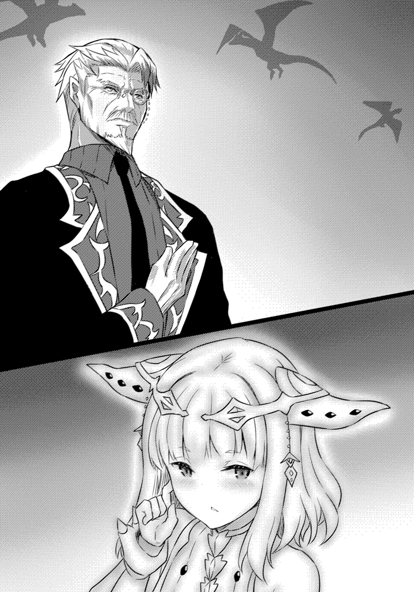
「知り合いなのか？」
「うん。ちょっとね。我、竜王の中では、顔が広い方」
そういえば竜王は他に六体いるって言ってたっけな。
「危ない奴だったりする？」
「基本的には、無害」
「そうか。なら、別にいっか」
ヘスティだって、理由がなければ俺に攻撃してこなかったし。
害がないのならば、竜王が近くにいたって大丈夫だ。
「というわけで、お会いした時は、よろしくお伝えください」
「ん......分かった」
「では、これにて！」
そう言って、ゲンリュウは去っていった。
竜の訪問が終わった後、俺とへスティは庭の日向で休んでいた。
「......なんだか、今日は客が多いわ、いっぱい喋るわで、疲れたな」
「うん、我もちょっと、疲れた」
「ふわ......昼寝するか」
「ん、我もする」
そしてそのまま俺たちは、サクラが夕飯に呼びに来るまで、眠りこけた。
ある日のこと。
俺は居間のテーブルに肘をついて悩んでいた。
「うーん」
「主様？ いかがなされましたか？」
テーブルの上にお茶を出しながら、サクラが聞いてきた。
「いや、いい感じに、相手を手軽に捕らえたり、追い払う方法はないものかなあって思ってさ」
出されたお茶を飲むと、ごちゃごちゃしていた頭がリセットされた。
その上で、改めて考える。
今のところ、庭に来る侵入者はゴーレムで迎撃している。
あと、ヘスティがいるときは彼女が処理してくれる。ただ、
「もっと省エネでできるんじゃないかな、と思うんだよ」
何も考えずウッドゴーレムを大量に使って、物量で押しつぶすのも楽と言えば楽だが、一体で多数を相手にできたほうが、もっと楽になるんじゃないか。
それをずっと考えていたんだ。
「でも、ゴーレムは動きが遅いんだよな」
「主様の体で操作するウッドアーマーに比べると、確かにウッドゴーレムは数段落ちますね。それでも、主様が操ると、人狼を捕らえられるくらいには速くなるのですが」
サクラは褒めてくれるけれど、庭が広くなっているんだ。
多少速いくらいでは、追いつかなくなっている。
ゴーレムが少ないと、全体をカバーすることはできない。
罠を張ってはいるが、踏まなきゃ発動しないので能動的ではないし。
「だから、もっとこう、一網打尽にできるようなものがあればいいんだけどなあ」
考えながら、俺は床に寝転がって天井を見つめる。すると、ひとつ、思い浮かんだことがある。
「――そうだ。対空用の飛び道具を応用すればいいのか」
「飛び道具、ですか」
「ああ、地上での遠距離攻撃とかは考えてなかったからな。ちょうどいいと思うんだ」
手始めに木の弾丸をゴーレムから打ち出せるようにしてみよう。
「軽く試してみたいから、サクラ、同期頼むー」
「はい、かしこまりました。膝枕でいいですか？」
「おう、ありがとう」
サクラの太ももが俺の頭に下に敷かれる。
やーらかくて気持ちいい。
そんな感触を得ながら、俺はサクラとの同期を開始する。
「えっと......とりあえず、外郭のリンゴの木で良いか」
適当に選んだリンゴの木をゴーレム化する。
――ウッドゴーレムの配備と改造はとても楽だ。
こうしてサクラにくっついているだけで、敷地内のどこにある木でもゴーレム化できるし、手を加えることだってできる。
というわけで、トラップ用の射出装置を、ゴーレムの腕に移植する。
そして使うのは、樹木を丸く削った玉。
それを手のひらから打ち出せるようにする。
弾数は数発しかないが、これは後々、増やしていこう。
「この装置を組み込むと、見た目が再びもっさり化するが、今は置いといて......っと」
まずは試し打ち。
地面に向けて撃ってみる。
「樹木弾......発射」
ばね仕掛けで吹っ飛んだ木の弾丸は、土に深くめり込んだ。
「おお、これなら威力は十分かな」
「はい！ かなりの衝撃を観測できました！ すごいですよ、主様」
サクラの力で土地と同期しているから、自分でも威力の観測はできている。
衝撃から推測するに、ウッドゴーレムのパンチと同じくらいの力は出ていた。
これだけ威力があれば、侵入者を追い払うのもたやすいだろう。
「――あ、北方にモンスターが接近していますね」
「おっ、ちょうどいいな」
室内でこうしているだけでも、モンスターを見つけて、すぐに試せるのは本当に楽だ。
外に出て、目視で試すのも悪くないけれど、この自堕落モードはやはりいい。
「ふむふむ、モンスターは魔光石のゴーレムか」
この前は、竜の鱗で爆発していたけれど、本来はかなり堅い存在らしい。
実験台にはうってつけだ。あいつに撃ってみるか。
「狙いをつけて、力を込めて――発射！」
刹那。
――ズドン！
と、樹木弾は、強烈な音と共に魔光石の体を貫通した。
それだけではなく、後方の樹木までも、貫いた。
そして、魔光石のゴーレムは、貫通の衝撃で後方に吹っ飛ばされていった。
「えーっと......？」
想像と違う。なんでこうなった？
......ううむ、分からん。
ウッドゴーレムの拳よりも、面積が小さい分、貫通力が上がったのかもしれない。
というか、ウチのリンゴの木の堅さも相当だな。
まあ、効果は実証されたわけで、
「本当に、威力は十分だったな......」
「そうでしたね......」
とりあえず人に使わなきゃ、グロテスクなことにならないだろう。
ただ、庭で惨劇を起こすわけにもいかないし、威力の調整はしておこうか。
弾を改良すれば、貫通力も減るだろうし。多分。
「......念のため、外で慎重に実験しておくか」
「では。外に行くついでに、お弁当持っていって、食べましょうか」
「おう、それじゃあ、よろしく頼む」
こうして俺は、庭でピクニックをしつつ、庭の防備を更に固めていくのだった。
また、その後に数々の実験を行った結果、リンゴの種を打つのが、人に対してちょうどいい威力になることが分かった。
打ち込んで即座に芽吹かせれば、相手を縛る縄代わりにもなる。
ゴミも出なくて、経済的だしな。
今度からはそれを使おう。
庭の外側。
俺がウッドゴーレムの調整をしていると、ヘスティがとてとて歩いてきた。
「ちょっと、いい？」
「どうした？」
「話しておきたいことがある。武装都市のこと。この前、来てたから」
「ああ、そういや、そうだったな」
スキンヘッドのイメージが強すぎて、都市の名前がうろ覚えだった。
「伝え忘れてたから、今、教えておきたい」
「おお、ありがとうな、ヘスティ先生」
正直、知らない場所だったから、そういう情報は助かる。
「ん、いい。家賃代わり」
そう言って、ヘスティは懐から大きな地図を取りだしてきた。
「それ、俺にくれた奴と同じか？ いくつ持ってるんだよ」
「いっぱい。竜になると、よく破っていたから、予備は沢山ある」
言いながら、ヘスティは地図上で、魔境森のずっと南を指差した。
そこには丸い壁で囲まれた、複数の家が描かれていた。
「ここが、武装都市。平地に立てられた、都市国家。黒の竜王が住む土地と、森の人狼と、鬼とゴブリンとオークの住処に囲まれている。あとモンスターもそこそこ」
おいおい、他種族に包囲され過ぎだろ。
「どうしてそんな所に街をつくったんだ？」
「都市の中央に、魔力の塊を生み出すダンジョンがあるから。そこに武装して突っ込んで、稼ぐのが、主な産業」
「えらく乱暴な産業だな」
「でも、効率いい。枯れないし。他の種族も、そこで魔力を稼いだり、している」
なるほどなあ。つまり、そのダンジョンが一種の魔力スポットになっているわけか。
「ここの土地ほど、濃くて強力ではないけれど、ね。でも、有用なのは変わりないから、街ができた。周囲にいるのも、荒っぽい種族が多いけど、人間の武装、そこそこ強いし。だからまあ、なんというか、荒くれ者か肉体労働が好きな人向きの、街」
ああ、なるほどなあ。俺には縁がなさそうな街だ。
危険地帯っぽいし、肉体労働はそこまで好きじゃない。
「ん、この魔力スポットがあるから、縁はないね。でも、アナタが行くと、すごく、稼げると思うよ？」
「そうなのか。でも、これ以上の金があっても、どう使えば良いのか分からないんだよな」
なにせ、あの魔女姫は、ことあるごとに俺に金を渡してくる。
この前も、恩義だなんだと金を持ってきたし。その代わりにリンゴを渡したら、また金を持ってくるとか言っていたし。
そんなだから、自宅には銀貨袋が積み上がっていたりする。
「そういえば、二階が銀貨袋で溢れていたね」
「おう。そうなんだよ」
どこで貨幣を作っているのか知らないけれども、俺の家で経済の循環が留まり過ぎてヤバイ。
だから、人狼たちに渡すことで消費してはいるものの、
『こ、これ以上は、我々への対価としては大きすぎます！ 恐れ多くて受け取れません！』
とか言って、大金は拒まれるのだ。
無理やり渡しても良かったが、泣きそうになっていたので、やらなかった。
「大量の食材や、道具を持ってくるから、別に渡してもいいと思うんだけどなあ」
人狼という奴は、良くも悪くも素直らしい。
お陰で、もしもの時用の銀貨が、大量に置かれているだけになってしまっているが。
「普通は、武器とか、防具とか、魔法具とか揃えるけど......アナタは、そういうの、使わないの？」
「買ってもなあ。使う機会がないんだよ」
武器や魔法具はウッドゴーレムがいる以上、必要がない。
防具だってウッドアーマーがあるから、必要がない。
魔力の行使が簡単な割に、便利すぎるのがいけない。
「いや、それ、言えるの。アナタだけだからね？」
「まあ、ともあれ俺は貯めこむしかできないけど、ヘスティは金とかいるか？」
聞くとへスティは数秒悩んで、
「生命維持には、必要ない。けど、あれば、杖の材料とか、買える、かも」
そんな答えを返してきた。
そうか。杖を作るにも金がかかるよな。
「じゃあ、欲しい時は言ってくれ。渡すから」
軽く言うとヘスティは驚いた顔でこちらを見た。
「いい、の？ 杖、良い素材使うと、お金がかかる。我の骨、素材的には良いけど、それに合わせたものを使うと、値が張る」
「使い道ないって言ったろ」
だったら使う人に渡したほうが、経済的だ。
「そう。なら、貰って、今度、買ってくる。......ありがとう」
そう言って、ヘスティは頰をかいた。
「このお礼は、杖の作成で、するね。予備の杖も必要だろうし」
「おう。一番いい杖を頼むぞ」
こうして俺は、新たなお金の投資先を見つけたのだった。
そんな話をしてから数時間後。
「とりあえず、実験として予備の杖を一本、作ってみた」
そう言ってヘスティは杖を手渡してきた。
「早いな!?」
短いが結構しっかりした感触の杖だ。こんな短時間で作れるのか。
「杖を作るのは、慣れてる。それに我が旅で得てきた素材を幾つか組み合わせただけの、お試し品だから、ね」
「え？ そんな、旅で得てきた素材を使って良かったのか？」
「構わない。この辺りで十分に買い直せるし、アナタからお金を貰ってるから。そういう素材はバンバン使える」
「ヘスティはどんな場所にどんな素材があるのか、よく分かっているんだな」
流石は世界中を旅してきた竜王だ。
「ん、たとえば、この試作品は、ここから遠く離れた地に住む、不死の一角獣の角を使ってみた。だから、とても硬質だったりする。使ってみて」
硬質な杖か。確かに手触りは岩と金属を合わせたようなもので、硬さを感じさせる。
「よし、じゃあまずは魔法鍵を使うために......っと」
俺は頭の中で文字を思い浮かべながら杖をギュッと握りしめた。そして、言葉を喋ろうとしたのだが、
「あ」
その瞬間、杖の真ん中がはじけるようにして、圧し折れた。
「使う前に......折れた、というか砕けたね」
ヘスティは目を見開いて驚きながらも、壊れた杖から目を離さなかった。
「あー......なんかスマン」
「いや、いい。作り手としては、折れるまで使われるのが本望だし。今回のは頑丈さに注力しすぎてしなやかさが足りなかったみたい。......また作る......！」
ヘスティはぐっと気合いを入れながら言ってくる。俺としては作ってもらえるだけでも有り難いことなんだけど、
「まあ、無理のないように頼むわ。投資はいくらでもするからさ」
「うん、任せて。たくさん作るから......！」
どうやら、ヘスティの職人魂に火がついたらしい。
これからどんどん、杖の供給はされていきそうだな。
夕方。
プロシアの城の執務室。
そこでは、ディアネイアが武装都市の使節団の応対をしていた。
「はじめまして。わたしは武装都市の司令部の副長官をやっております、アンネ・タイドラと申します」
ただし、団といっても、使節は一人の若い女性だけだった。
しかも、都市のトップクラスの者だったので、ディアネイアは面食らっていた。
「ええと、使節というのは、貴女だけなのか？」
「はい。こちらの方が身軽ですので。どうぞよろしくお願いします」
彼女は黒い髪と大きな胸を揺らしながら前に出て、手を差し出してくる。
「あ、ああ、武装都市からようこそ。私は、ディアネイア・メディスン。この街の代表みたいなものをやっている。よろしく頼む。アンネ殿」
ディアネイアと握手をすると、アンネはにっこりと微笑んだ。
「ふふ、流石は大魔術師の第二王女、ディアネイアさま。柔らかな手をしていらっしゃいますね」
「お、おう。貴女の手は、しっかりしているな。頼もしいよ」
「武装都市の者ですからね。体が資本です」
アンネは色っぽく笑う。
......武装都市の高官が、まさかこんな綺麗な女性になっているとはな。
先日、司令部の人員が替わった、とは風の噂で聞いていた。
だが、こんなにも若いとは予想外だった。
それゆえに、ディアネイアは警戒する。
彼女がこのタイミングで、この王都にやってきたことを含めて。
「そういえば、アンネ殿はなぜこの王都に？」
聞くと、アンネの眼の色が変わったような気がした。
「ええ、白き竜を手なずけた、という風の噂を耳にしまして」
「ああ、そんな噂も立っているな」
「それを聞いて、いてもたってもいられず、来てしまったのです。本当なのか、確かめたくて」
素直な言い方だった。
建前を言っているようには思えない。
けれどもまあ、どちらにせよ答えは決まっているんだ。
「それは、事実無根の単なる噂だな」
少なくともプロシアが関わってはいない。
彼が一人で行った結果を、かすめ取るわけにはいかない。だから、そう言った。
「そうですか。......残念です」
アンネは目に見えて落胆を示した。
「残念、とは？ そんなに竜王を退けたかったのか？」
武装都市も竜の危険に晒されている。
だから、本当にどうやって退けたのかを聞きたかった、というのもあるのだろうが。
「......いえ、わたしは白き竜王に会ってみたかったのです」
「竜王に？ 珍しい趣味をしているな」
「ふふ、よく言われます。でも、そうですよね。ここにいるはずがないですものね」
落胆しつつも、安堵したような声だった。
なにか、思うところがあるのだろうか。
「ただまあ、そうですね。この王都は、飛竜の襲撃を何度も乗り越えておられますから。その知識を是非、供与していただければ、と思います」
「ううむ。そうか......」
先日、戦力を送ってもらった以上、見返りに何かを返さなければならない。
それは当然の行為だ。
ディアネイアも分かっている。
正直、飛竜対策の情報くらい教えても全然痛くないのだが、
「聞けば、ディアネイアさま単体でも、魔境森の竜を倒されたことがあるとか。わたし、知りたいです。できれば現地で教えていただければ、とても助かります」
......ああ、これは面倒なことを言ってきたな。
他に狙いがありそうな言い方に聞こえてしまう。
あの魔力のある土地に気づいているのか、いないのか分からないが、さて、どうすればいいか。
「うむむ......」
「あの、もしかして、無理なことを言っていますか、わたし？」
アンネは困り顔で聞いてくる。
「いや、そういうことではないが、お勧めはしないというだけだ。あの森に脅威が多いのは、貴女もご存じだろう？」
「ええ。ですから、知る必要があると思いまして。こう見えても、多少は強いのでご心配なく。本職はアイテム売りですが、攻撃系統の術も一通り使えますので」
アンネは腕まくりをして力こぶを作ってみせた。
たしかに、握手した時、力強さは感じたし、相当なやり手なのだろう。
だが、心配しているのはそこではない。
......自分たちのことよりも、ダイチ殿のことを考えなければ。
この女性の狙いがなんであれ、彼のいる場所に連れていく、という選択肢はないのだ。
彼女が問題を起こして彼の不興を買うのも怖いし、何より、こちらのせいで迷惑をかけたくない。
ならば、とれる行動は限られている。
彼女が自分から、魔境森に入りたいというのなら、
「よし。分かった。私が魔境森の案内をさせてもらおう。竜の対策などは、そこでも十分話せることだ」
「本当ですか!? ありがとうございます！」
「ただし、今日はもう遅いから、明日の朝からで頼む」
「はい、よろしくおねがいしますわ！」
アンネは嬉しそうに微笑んだ。ああ、これでいい。
当たり障りのない場所を紹介したり、当たり障りのないモンスターの倒し方を教えて、この話は終了にする。
ディアネイアの計画は決まった。
あとは、上手くいくように、動くだけだ。
夜、プロシアにある酒場の一角は、スキンヘッドの男を中心としたグループで埋め尽くされていた。
「ヒャッハー。乾杯――!! これだけじゃたんねーぞ！」
冒険者シャイニングヘッドのメンバーだ。
「酒のおかわり持ってきました！」
「ヒャッハー、でかした！ ああ、生きた心地がするぜえ......」
男たちはジョッキのエールを空にしては、また注いでいく。
その中でも特にペースが速いのはスキンヘッドの男で、ザルに水を注ぐように次々に飲み干していく。
「やけに酒の進みが速いですね、リーダー」
「ああ、あの大地の主みたいな男に返り討ちにあって以来、ここ数日、怯えてたからなあ。その反動だろう」
「ヒャッハー。怯えてたんじゃねえよ。憧れに震えてたんだよ」
酒の泡を飛ばしながら言ってくるリーダーに対し、冒険者たちは、はいはい、と呆れたような顔を向ける。
その様子にリーダーは苦笑しつつも、
「ヒャッハー。......でもよ、俺のことは置いておいてもあの人はすげえよ。武器を抜いた俺たちに一瞬たりとも勝機を抱かせなかった。一応、冒険者の中では上位に入る俺たちに、だ」
リーダーは真面目な顔で天井を見上げる。
こう見えても、そこそこの実力はあると思ってきた。
受けた依頼はほとんど失敗していないし、ヤバいモンスターとだって何度も戦ってきて、勝利を収めてきた。
「そんな俺たちが子供扱いをされてさ。その上、見逃してくれたんだぜ？ 心が広いってもんじゃねえよ」
「それは、確かに」
冒険者たちは口々に同意する。
「敵対したのに、なんにも取りあげませんでしたしな」
襲ってきた奴らを返り討ちにしたら、戦利品として身ぐるみを剝ぐか、脅し取るのが普通だ。それは自分の身を守ったものとして当然の権利だ。
なのに、ひとつも興味を示さなかった。
「リーダーのそれも業物だよな？」
メンバーの一人が、スキンヘッドが持つ短剣に目をやる。
装飾は少ないながらも、刃には小さな刻印がいくつも付けられており、刀身全体に魔力の光が渦巻いている。
「ヒャッハー。そうだぜ？ 一応、家ひとつは余裕で買えちまうくらいの武器だ。でも見向きもしねえ」
「追剝とか、そこらへんの腐れ聖騎士とは全然違うんだなあ」
「ああいう、強くて気持ちのいい人はなかなかいねえですからなあ。今までも強い奴はいたけれど。あの人に敵対する気は起きねえっすね」
「ヒャッハー。実力的な意味でなくても、そうだよなあ。むしろあの人のために動けって言われたら、結構動けるぜ」
冒険者たちの酒は、ダイチの話を肴に進んでいく。
そして話題は、先日の戦いに至った原因に向かう。
「それにしても、オレたちに情報くれた黒髪巨乳の姉ちゃん、何者なんだろうな。とりあえず、報告したら金をくれたけどよ」
今日の酒代はそこから出ている。
「オレ、長いこと武装都市で冒険者やってるけど、あんな色っぽい姉ちゃん見たことないんだよな。なのに、いつの間にか副長官になってるから驚いたぜ」
「私は都市の外れ辺りで見たことありますよ？ 頑丈ですが奇妙な形をしたアイテムを売る怪しげなお店を開いていた覚えがあります」
「へえ、そこからスカウトされて、司令部にいったのかー。もしかしたら、武装都市出身じゃないのかもな」
冒険者たちは首を傾げるが、しかし、新たな酒とツマミが届くと、そんな思考は吹き飛んでしまう。
「ヒャッハー。難しいことは置いておいて、王都滞在もあと数日だ。金の続く限り、観光して、飲み食いするぞ！」
「おう!! ついていくぜリーダー!!」
そして、王都の夜は更けていく。
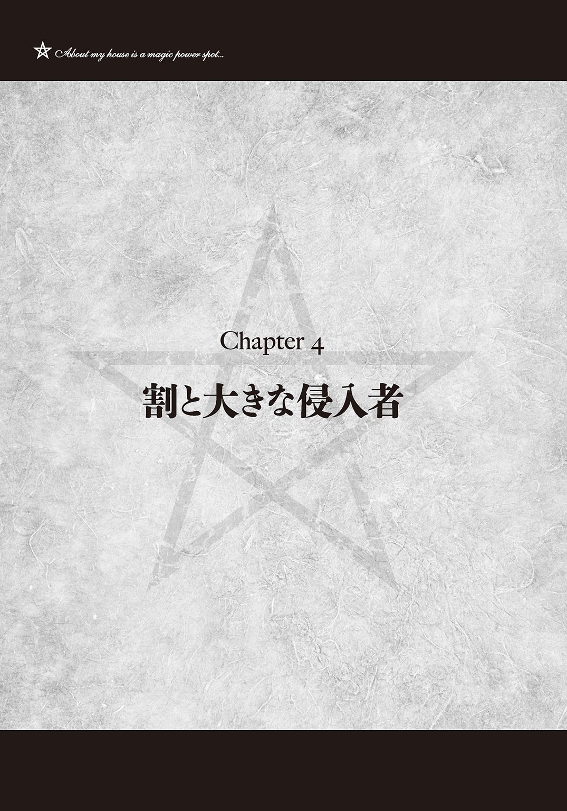
早朝、ディアネイアはアンネと共に、魔境森と平原の境目に来ていた。
「では、出発するぞ、アンネ殿」
「はい、よろしくお願いしますね、ディアネイアさま」
しっかりとした装備をした二人は、静かに魔境森に入っていく。
「この森に巣を作るのは、基本的に年老いて理性を失った竜たちだ。会話することは不可能で、餌にしようと喰いついてくる......という情報は知っているのだよな」
「はい、武装都市も魔境森には気をつけていますし、色々と調べてきましたから。この奥には竜の谷という、飛竜たちの住処があるということも知っていますよ」
アンネはそう言って微笑んでくる。
その笑みからは、どうにも意図を読み切れない。
......装備だって、ドラゴンを相手にするにはなんだか軽装な気もするし......いや、見た目に騙されるな、私。
目の前にいるのは、この若さで武装都市の副長官になったやり手なんだ。
気を抜いて、漏らしてはいけない情報を漏らしでもしたら大変だ。
「ええと、では、ゆっくりいくぞ？」
「はい、先導よろしくお願いします」
ディアネイアの予定は、先日と変わらない。
森の浅い所で適度に竜の巣を見せたり、対策を教えていく。
そのままアンネをダイチに関わらせることなく探索を終えて城まで帰る。
......それがベストだ......。
幸いにも、平原から数分歩けば観察できる竜の巣はあるし、彼らが餌場としている場所も確認できている。
今回はそこを遠方から視察するだけで良いだろう。
あるいは、軽く魔法を使って威力を確認してもらってもいい。今回、第一に考えるべきことは......ダイチ殿に迷惑をかけないこと！
それさえ守れればいい。
ありがたいことに、現状は予定通りのプランで進行しているから、このまま何事もなく終わってくれ、と願いながら歩いていると、
「あ、ディアネイアさま。ちょっとお聞きしたいことがあるのですけれど、よろしいですか？」
「な、なにかな、アンネ殿。竜の件ならばすぐにでもお教えするが――」
「いえ、それは良いのですけれども。向こうから、何か近づいてきてません？」
「うん？」
言われ、ディアネイアはアンネが指し示した方向を見る。すると、そこには、
「なんだ、このモンスターは......？」
黒い土でできた、見たことのないゴーレムがノシノシと近寄ってきていた。
どうにも、計画通りにはいかないらしい。
あれから、家はまた少し成長した。
縦も横幅も、少しずつ大きくなり、高さで言えば三十メートル以上はある。
まあ、安定性を高めるために、下の階層を大きくしたり、ちょっとずつ城っぽく改造したりと、色々試していたりはするのだけど。
「うん、どうにか、城っぽくなったかな？」
現在、見た目は、和風の小さな城である。
ただ、瓦とかはないし、石垣もない。
なので、格好いいかと聞かれると微妙である。
「立派なお城になってますよ、主様！」
「立派......うん。大きさは立派なんだけどな」
作れば作るほど、改造すればするほど、もっと造形にこだわりたい！ と思ってしまう。
いや、結局住むのは最上階の二ＬＤＫだから変わらないんだけどさ。
「まあ、とにかく、魔法鍵に登録しとくか。これは《城》っと」
頭の中で言葉を紐付けして、登録する。
そして再び塔の形に戻していると、
「ん、家の改造、順調みたい。よかった」
「おお、ヘスティか。......って、どうした？ そんな変なローブを着て」
「街に、行こうと、思って。......杖の材料、尽きた」
「あー......もしかして、俺が折りすぎたせい？」
実は、ここのところ、俺はしょっちゅう予備の杖をポキポキやってしまっていたりする。
この前は、魔法鍵を連続で十回くらい使ったら、ボキっといった。
一度で壊れることはなくなったのだけれど、完全に折れなくなった、というわけではなかったりする。メイン装備の杖は壊れないんだけどな。
「むうう......我の尾骨や尾翼、大きいから、それはいいけど。他の材料が、なくなった」
ヘスティは若干頰を膨らませたような感じで言ってくる。
簡単に折られるのは、職人としては結構悔しいらしい。
「おう、悪いな」
「んーん。我が、ちゃんと性能を把握できていなかった。最大負荷には耐えられても、回数の負荷には耐えられなかったみたい。だから、もっと強化する。そのための材料、買ってくる」
「そうか。それはありがたいが、金は大丈夫なのか？」
言うと、ヘスティはローブの内側をポンと叩いた。
中からは金属がこすれる音がした。
「この前貰ったの、使う。行って帰って、ほんの、数十分。それまで、待ってて」
「おう、分かった。それじゃあ、よろしくな」
「ん」
こっくり、と頷いて、ヘスティはとてとて歩き去っていった。
「......あの速度で往復して、数十分とか無理じゃないか？」
「ヘスティちゃんは、人間の形態でも竜の力をそこそこ使えるって言ってましたし。速度は出るのでしょうね」
あー、そういえば確かに物凄い速度で走ったりしてるのを、感知したことがある。
そうか。人間の状態でも強いんだよな、あの子。
見た目とか雰囲気で忘れそうになるけれども、一人で世界を旅してきたって言ってたし。
「まあ、それじゃあ特に心配しなくてもいいか。......ああ、そう思ったら腹が減った」
午前中から作業を始めて、結構な時間がたっている。
魔力も使ったし、食欲が主張してきているようだ。
「そうだと思いまして、お弁当を用意してきました」
「おー、助かるぜ、サクラ」
「いえいえ、簡単なものですので」
そう言って、サクラは懐から小さなバスケットを取りだす。
中には握り飯と、肉と野菜の炒め物が入っていた。
「おお、美味そうだ」
「ありがとうございます。あ、おにぎりですけれど、今回は塩を濃い目にしてあります」
「それも、ありがたいな」
家の改造をすると、汗をかく。
だからしょっぱいものが欲しくなるんだ。
「そういえば、コメの備蓄は減ってるんだっけか」
「白米が二ヶ月分、玄米が一ヶ月分という感じです」
なるほど、それじゃあ後々、稲作に手を出そうか。
......リンゴの種と同じ感覚で育てられるかは分からないけれど。
チャレンジしておくのがいいだろう。
「それでは、私はお茶を淹れてきますね。主様はお先にどうぞ」
そう言って、サクラは自宅へいそいそと戻っていく。
とりあえず、今後のことよりも、今は目の前の昼飯を食うか。
「いただきま――」
おにぎりを摑んで、口に入れようとした瞬間、
「う、うわあああ！ そ、速度を落とすんじゃないぞ、アンネ殿」
「わあ、大変ですね、この森も！」
「......」
見知った顔の魔女が、見知らぬ女と共に、庭に飛び込んできた。
「――！」
ディアネイアと見知らぬ女性は、奇妙な黒い泥人形に追いかけ回されていた。大きさは二メートル弱といったところか。
しかし、なんで俺の家の庭に来たんだ、こいつらは。
そう思いながらおにぎりを一口かじる。
「す、すまない、ダイチ殿。変な輩に襲われていてな」
第一声が謝罪だったから、そこまで怒ったりしないけどさ。でも、
「俺の静かな昼飯タイムを返せ！」
コメを飲み込んでから、それだけは叫ばせてもらった。刹那、
「――!!」
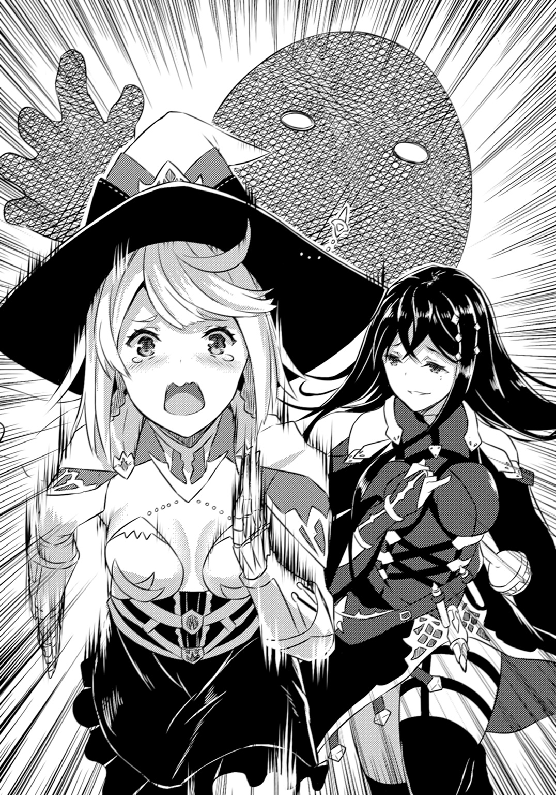
「ぐおお......!!」
叫び声と共に魔力の渦が放たれる。
そして、泥人形と魔女たちとが、それに巻き込まれた。
泥人形はその衝撃で粉みじんに崩れ飛び、ディアネイアはその場で尻もちをつく。
......ああ、なんか、昔を思い出すな。
けれど、その時と違うのは、
「くうう......久々に大きな一撃を食らった......から、キツいな。ちょっと漏れたかもしれない......」
ディアネイアは立ち上がっている。
最初の頃とは大違いで、耐性ができているようだ。
ただ、やらかしたのは、最初の頃と一緒だけれど。
「ったく。ドラゴンだったり、黒い泥人形だったり、変なものばかり持ち込むな、ディアネイアは」
「す、すまない......未知のモンスターだったのでな。対処方法が分からずに、追い詰められてしまった」
吹っ飛んでいった姿を見るに、ただの大きい泥人形だろうが。
何を怖がっていたのだか。
「......あれを泥人形と言えるのは貴方だけだと思うぞ？ 相当な硬さだったしな」
「そうか？」
じゃあ、土のゴーレムと言えばいいか。
なんにせよ、ただのモンスターだろうに。
「そうなのだ。いや、数体なら私も片付けられたのだ。ただ、一〇体以上に囲まれると、どうしてもな。引き撃ちしていたら、ここに来てしまった......」
なんでこっちに持ってくるんだよ。
自分で処理しろよ。
「うう、すまない......」
「まあ、今はもう片付いたみたいだからいいけどさ」
魔力を使ったせいで更に腹が減るじゃないか。
とりあえずおにぎりを食って、一息つかないと。
そう思いながら俺がむしゃむしゃ食っていると、ディアネイアの視線が俺の奥に向かった。
「ところで、ダイチ殿？ 質問があるのだが......貴方の家の形が変わっているというか、でかくなってる気がするのだが、気のせいか？」
「気のせいじゃないけど気にするな」
「そ、そうか」
「というか、俺も質問があるぞ。そっちの、黒髪の人は誰なんだ？」
知らない顔だが、ディアネイアの友人だろうか。
さっき、俺の魔力の渦を食らっても、吹き飛ばされずに耐えたようだったが。
「あ、ああ、こちらは私の客人でな。アンネ殿、ちょっと紹介させてもらっていいか？」
「あの......人形を一撃で......。この威力は、流石に想像以上に......脳髄に来て、気持ちいいです......」
黒髪の女性は熱に浮かされたような目をしていた。
「アンネ殿？ どうかしたか？」
「えっ......あっ......ああ！ すみません。あまりのことに、ボーっとしてしまって」
彼女は虚空を見ていたようだが、すぐに気を取り直して、俺と目を合わせてきた。
その顔はほんの少し紅潮しているが、緊張しているのだろうか。
「失礼いたしました。わたしは武装都市の司令部に勤めております、副長官のアンネ・タイドラと申します」
「おう、よろしく。武装都市の人か」
あのスキンヘッドたちの街だったな。
「司令部ってことは、そこの親玉か何かか？」
「まあ、そのようなものです。ところで、貴方さまは、この魔力に満ちた土地の主さま、ということでいいのですか？」
「そうだな。というか、アンタも分かるんだな、魔力に満ちてるとか」
「ええ、似たような地形が街の中心にありますからね。ここほど強くはありませんが」
なるほどなあ。分かる人には分かるものなんだな。
なんて、こちらが感心していると、ディアネイアが驚いたような顔をしていた。
「あん？ どうした、ディアネイア。そんな変な顔をして」
「いや......その、意外と、アンネ殿がダイチ殿と普通に会話していることに、びっくりしていてな」
そういえば、そうだな。
俺を変な風に怖がらず、普通に喋ってくるのはなかなかレアケースだな。
武装都市の副長官ということもあって、きっと強いんだろう。
「ディアネイアさま。もうちょっと、わたし、このお人とお話をしたいのですけれど、お時間、大丈夫ですか？」
「ええっと......わ、私はいいのだが、ダイチ殿は......」
「俺も構わないぞ」
飯は食い終わった。
武装都市の連中が突っかかってきたばかりだし、その件について聞きたくもある。
追加情報があっても悪いことじゃないしな。
それに何より、
「今は暇だ。お茶でも飲んでゆったり話そうぜ」
「わあ、良かったです。わたしも、ちょっとだけゆっくりしたかったんです」
こうして、俺の庭での突発お茶会はスタートしたのだった。
リンゴ畑に置かれた椅子に腰かけて、俺はディアネイアたちの話を聞いていた。
「なるほど。武装都市と王都は協力体制をとっていて、アンネはその使節だ、と。それは分かったけどさ、なんでまたアンネとディアネイアは、森の中から、出てきたんだ？」
しかもモンスターを引き連れて。あの泥人形は、俺も初めて見たのだが。
一体、どこからやってきたんだか。
「ええと、私もあの人形は初見なのだ。森に入ってすぐに襲われたから、出どころも分からないんだ」
なんだそりゃ。森の情報とか俺よりも知っているのに、初見だったのかよ。
「うむ。ダイチ殿も出会ったことはないのだよな？ あの黒土の人形に」
「全く。新しく生まれたのか？」
「いや、この魔境森の土は黒土ではない。だから自然生成されるはずはないのだが......」
へえ、何かの突然変異かな。
「アンネは何か知っているか？」
「......いえ、わたしもこの森は初めてですので。ディアネイアさまに探索の案内を頼んだくらいですし」
「探索の案内？ そうなのか？」
「うむう......竜への対策や人狼の現状を教えたりするのに、探索しに来たのはその通りだ。ただ、ダイチ殿のもとに来る予定は、本来はなかったんだ」
まあ、そうだろうな。
俺みたいな、森に暮らしているだけの人間のところに、他の街のお偉いさんを連れてきたりはしないだろう。
「あー..................まあ、その認識でいてもらって大丈夫だ、うん。むしろそっちの方が有り難い」
なんだその変な間は。
「い、いや気にしないでくれ。ともあれ、アンネ殿。今回の件で、王都での人狼被害が減った理由、分かってもらえたかな？」
「はい。驚きました。まさか人狼たちが道案内や商売を普通にしているだなんて。被害が激減しているとは聞いていましたが、ここまで大人しく、人の社会に馴染んでいるとは思いませんでしたから」
へえ、人狼たちも上手くやってるんだなあ。
そういえば、最近は愛想も良くなってきている気がする。
人との交流を深めたことによる作用だろうか。ならば、悪いことではないだろう。
「わたしの街の脅威もひとつ減りますし、本当に助かります。しかし、彼らの意識を変えたのはなんだったんでしょうか......。わたしたちが森の奥に行くのを全力で止めてきましたが」
「ま、まあ、彼らにも色々あるのだろうさ。うん、深追いしてはいけないぞ、アンネ殿」
「そうですね。理由はともかく、話し合いでどうにかできるのは良いことです。ゴブリンやオークは話し合いができるので良いのですが。ダンジョンから這い出てくるモンスターには説得なんて通じませんからね」
へえ、オークやゴブリンって喋れるんだな。
初めて知ったよ。というか、
「モンスターってダンジョンから湧き出るものなのか？」
「はい。ダンジョンでしか湧かないモンスターもいますし、外部で生まれたモンスターも魔力をエサとしているので、集まりやすく、繁殖もしやすいのですよ」
なるほどなあ。モンスターは魔力のある土地に集まる性質がある。
それは俺も何となくわかってはいたけれど、ダンジョンってモノは厄介だな。
「――って、もしかして、この辺もダンジョンだったりするのか？」
「いえ、これだけ魔力の濃い龍脈なら、そもそもモンスターが生まれることさえ大変と思います。濃すぎるとモンスターにも害になるんですよ。ダンジョンは適度な魔力濃度になっていますし」
......なんだろう、この気持ち。
モンスターにも害になるような場所で暮らしているって言われると、変な気分になる。
いや、別にいいんだけどさ。居心地は良いしな。
街から遠く離れてるから基本的に静かだし。
イメージするだけで魔法を使えて自己防衛もできている。
省エネしたい時は杖だって使えるしな。
うん、いいことづくめだ、なんて思っていると、
「あら、ダイチさま？ 腰に差しているのは杖......ですか？」
「ん？ ああ、これ？ そうだけど」
むしろ、杖以外の何に見えるんだろう。
「いえ......その、市販されている杖にしては太すぎるし、異様なくらい強い力を感じるので」
アンネの目は、俺の腰に釘付けになっている。
そんなに珍しいのだろうか。
いや、俺は杖と言えば、このゴッツイ形しか知らないんだけどさ。
「ちょっと見せてもらってもいいですか？ 素材を知りたいので」
「ああ、はいよ」
いつまでも腰から目を離そうとしなかったので、彼女に手渡した。
すると、食い入るように見ていたアンネの口から、ぽつり、と言葉が漏れた。
「これは......竜王の骨が使われていますね。竜王の杖の実物、久しぶりに見ました」
「な、なんだと!? 竜王の杖だと!?」
「いきなり大声を出して、どうしたディアネイア」
両手に力拳を作って立ち上がるくらいに興奮しちゃったよ、この魔女姫。
一体なんだっていうんだ。
「だ、だって、竜王の杖だぞ!? 本来は至宝級の逸品で、宝物庫にしまわれたり、国難の際には最強の魔法使いに貸し出したりするものなのだぞ!?」
「そんな逸品だったのかこの杖......」
知らなかったとはいえ、そこまでの高級品を何度もポキポキやってしまっていたとは。
作成者には本当にすまないことをした。
「いつの間に、こんな得物を手に入れていたのだ......」
「いやあ、貰いモノだ」
「もらっ......!? ――そうか、貴方ならば貰っていてもおかしくはないか」
「？ おかしくはない、とは？ どういうことです？」
アンネの目がキラリと光る。
なんだ、やけに食いついてくるな。
「それは......」
そしてディアネイアは数秒言い淀んでから、こちらを見てくるし。
なんだその助けを求めるような目は。
「いや、貴方の同居人のことを喋ってもいいのか、と思ってな......」
「構わねえよ、そんなの」
別に、減るもんじゃないし。
そう言うと、ディアネイアはこっくりと頷いて、
「実はな。ダイチ殿には同居している人がいてな。その人というのが――」
喋り出そうとした。
――まさにそのタイミングで。
「ただいま」
森の中から、ヘスティが戻ってきた。
とてとて歩きで、手には何か大きな袋を抱えている。
「？ お客さん？ なんだか、覚えのある匂いがするけど」
「おう、ヘスティ。おかえ――」
り、と言おうとした瞬間、
「ぅ姉上さま――」
アンネが物凄い速度で振り向くと、ヘスティめがけて突っ走っていった。
「その声は、やはり姉上さま！ お会いしとうございましたあああ」
そのまま、ヘスティを抱きしめた。
それはもう、アンネの巨乳にヘスティの小さな頭がすっぽりと埋まるように。
ぼすん、という柔らかな衝撃音まで聞こえてきた。
「姉上さま――!!」
「やっぱり、この子の、匂い、だったか」
ヘスティは、アンネの巨乳に挟まりながら、非常に嫌そうな顔をしていた。
「アンネ、離せ......」
「ああ、もっと、もっとその冷たい視線を下さい――!!」
ロリと巨乳で、すごく盛り上がっている。けれどさ、
「おい、これはどういうことか説明しろディアネイア。お前は、何を連れてきた」
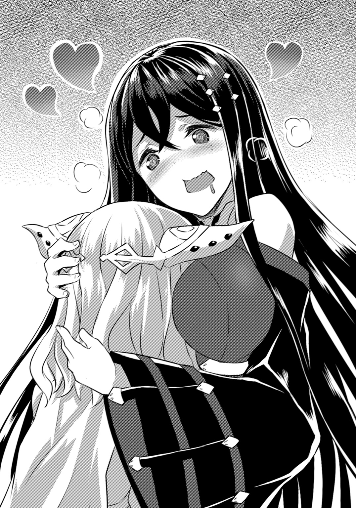
「い、いや、私に聞かれても......」
今はなんだか、分からないけれども。
どうやら、我が家の一員に、新たな問題が発生したようである。
アンネに抱きしめられたままのヘスティは、俺たちに関係性を説明してくれた。
「つまり、このアンネという女性が、黒の竜王だと。そういう認識でいいんだよな、ヘスティ？」
「そう。こいつは、【黒金の竜王】アンネ・タイトスヒュドラ。我と同じ、竜王。昔、ちょっとだけ、面倒を見ていたことが、あるから、知っている」
面倒を見ていた、ね。
見た目は幼女なヘスティが、見た目が大人の女性であるアンネに言うのを見ると、なんだか変な気分がするな。
......まあ、竜王だから見た目通りの歳じゃないんだろうけど。
しかし、とても慕われているのがよく分かったよ。
「そうなんです！ 姉上さまに何度、助けられたことか!!」
アンネはその巨乳をぐりぐりとヘスティに押しつけている。
だが、ヘスティは眉をひそめて、顔に押しつけられる球体を、むにいっと押しのけようとする。
「うざい......！」
おお、あんなに大人しいヘスティが明確に拒否しているぞ。
これは珍しいもの見た。そして、
「ああ、痛いッ！ でも、気持ちいいですわ、姉上さま。もっと押し返して！ もっと強いと嬉しいです！」
こっちは、酷いありさまだ。
涎は垂らしているし、表情がとろけきっている。
初対面の時にあった、綺麗な女性だなあ、という感想が完全にぶっ壊れた。
ヘスティの抵抗に対し、頰を染めて喜んでいる。
ジャレあいの範疇なんだろうけれども、
「俺が常識人ぽいって思った人は、大体とんでもないことになってるな」
ヘスティしかりアンネしかり。
俺の常識人センサーはイカれてしまったんだろうか。
いや、竜王が常識人の皮をかぶるのが上手い、というべきなのか。
「......って、そうだ。ディアネイアはこのことを知っていたのか？」
他方、ディアネイアに目を向けると、彼女は頭を抱えていた。
「武装都市の副長官が、竜王とか......本当に、どうすればいいのか。報告か？ いや、でもどこにすれば......、あっちは無理だろうし......」
顔を真っ青にしてブツブツ呟いている。
こっちはこっちで大変そうだな。
悩んでるみたいだから、そっと放置しておこう。
そうして、再びアンネの方に視線を送ると、
「ふう、堪能いたしました」
ヘスティがアンネのホールドから解放されていた。
「......暑苦しかった」
「お疲れ」
ふらふらとした足取りで、ヘスティは俺のところにやってくる。
ここまで疲れた表情をするなんて、本当に珍しいな。
反面、アンネは上機嫌だ。
とてもホクホクしてる。
「お楽しみのところ悪いけど、アンネ。なんでアンタみたいな竜王が、武装都市の副長官をやってるんだ？」
武装都市の乗っ取りでも計画していたりするのだろうか。そうだとしたら一大事だし、そんな面倒事に俺を巻き込まないでほしいんだけど。
そう思って聞いたら、アンネは微笑して首を振った。
「いえいえ、そんなことを考えてはいませんよ。わたしの本業は、ただのアイテム売りですので。姉上さまの真似をしてアイテムを作っては売ってを繰り返していたら、いつの間にかあの地位にいたのですよ」
「......アンネは、いつの間にか、竜王になっていた子。そういう、いつの間にか、地位を上げていること、よくある」
いつの間にかで街のトップ付近まで上がれるのかよ。すごいな、武装都市。
うん、色々な意味で。
しかし、ヘスティは有名な魔法使いだし、アンネは武装都市の副長官だし、人間の中に紛れ込み過ぎだろう、竜王。
ヘスティが言っていた通り、無害そうだから良いけどさ。
「はあ、それにしても、姉上さまに会えて、本当に幸福です......はあ......はあ......」
「――」
息が荒くなったアンネを見て、ヘスティが俺の後ろに隠れ始めた。
本当に苦手なんだな。
......って、そうか。ヘスティが基本的に無害って言っていたのは、こういうことなのか。
「あの子、熱心で、真面目で、無害で、すごく常識的だけど、性癖が、駄目。我に、被害がでる。ある程度、我慢できるけど、あの暑苦しいの、駄目」
駄目言われてるぞ。
しかしなるほど、ヘスティの被害を除いたら、無害なのか。
よく分かったよ。
「じゅるり......はあ......って、いけませんね。あまりの満足感に我を忘れてしまいました。今日はただ、姉上さまに会いに来ただけじゃないんでした」
涎を垂らしまくっていたアンネは、その口周りを拭うと、身なりを正して一礼した。
「ダイチさま。ここで貴方さまに会えて良かったです。貴方さまと姉上さまが一緒にいるのであれば、わたしは、かなり安心できます。貴方さまのような強者に出会えたことは、わたしたち竜にとって、とても幸運なことですから」
「お、おう。そうか」
「はい。願わくば、その強さをわたしも一身に浴びたいところですが......とりあえず、今日のところはお暇しますね。挨拶させていただき、ありがとうございました！」
そう言って、アンネは微笑みながら、一人、去っていった。
「......えっと......まずは、彼女に真意を問うて、それから......」
ディアネイアがぶつぶつ言っている状態で残っているが、まあ、それは放っておくとして。
なんというか、ロリを抱きしめるだけ抱きしめて帰っていったな、あの黒髪巨乳。
「大丈夫か、ヘスティ。真顔で固まってるけど」
「ん、......あの子、今日のところは、って、言った......」
「ああ。また、来るつもりなんだろうな」
ヘスティは固まった口元をひくひくと動かしている。
「あー、そうだな。困ったら、俺のところに逃げてきていいから」
「ん、ありがとう。そうさせてもらう......」
どうやら、俺の家への来客が増えるようだ。
夕方。
泥人形の襲撃で散らばった黒土をヘスティと一緒に片付けていると、そんな時間になってしまった。
「ふう、ゴーレムで土木作業はできるけど、やっぱり腹が減るな」
この黒い土、やけに重いし。
「......なんというか、ごめん、ね」
「どうしてヘスティが謝るんだよ」
「我がいたから、あの子が、面倒と一緒に、来た」
ヘスティはしょんぼりして肩を落としている。
「気にするなよ。別にヘスティのせいじゃない。悪いのはあの黒い土の人形だろ」
「んー......黒土の人形は、アンネの力の一つ。だから大方、アンネのせい」
「え？」
「黒金のブレス。アンネが吐きだすのは金属の混じった土で、あの人形はそこから作られてるの」
「普通の土じゃないだろうなあ、と思っていたら、金属入りかよ」
そりゃ重いわけだ。
植物を育成するのには使えないけど、他の利用法ができそうだ。
一応、この土は庭の外に集めておくとして、
「でも、だとしたら、なんで自分たちを襲わせていたんだ？」
「欲求不満になると、アンネは、自分で自分を襲って、スッキリする癖があるから。満足すると、消えるけど......」
あいつ、マジか。
なんてはた迷惑な竜なんだ。
「街中ではやってないと思う。ただ、あとで叱っておく」
「それはそれで喜びそうじゃないか？」
「......多分。喜ぶね」
どうしようもないな。あの駄目性癖の竜王は。
「ん、街の中で問題起こさないだけ、マシ、だけど。やっぱり怒っておく」
そうだな。二度三度と続けられるのは御免だ。
またここでやらかしたら俺も怒ることにしよう。
「って、そういえば、ヘスティたちは普通に紛れ込んでいるけど、街で人にバレたりしないのか？」
「人の姿を保てば、基本的にバレない。あと、我とか、魔力も抑えてるから、竜王だって思われない」
「へえ、魔力って抑えられるものなのか」
「ん、街に行っても、怖がられたりしないの、そのお陰。――まあ、バレても、特に問題ない。別の竜王は、普通に、ヒトと一緒に酒飲んで、暴れたりしてるし」
本当にフリーダムだな、竜王ども。
「楽しくおかしく生きたいって本能に忠実なのが、多いから。......そういえば、アナタは、魔力が垂れ流しだけど、抑えかた、知らない？」
「おう。というか、魔力を垂れ流しているという実感が、全くないんだけどな」
俺が城に行った時、歓迎はされたが、みんな魔力に怯えたりして近寄って来なかった。
それも垂れ流しにしているせいなのだろうけどさ。
俺からすると、何が何やら分からないのだ。
「一応、今まではそれでも普通に暮らせたけど、垂れ流しを続けると問題あったりするのか？」
「んー、常人だったら、死んでる？」
怖いこと言うなよ。
「事実。生命維持にも、魔力は必要だから。そのペースで日常的に垂れ流したら、普通は、死ぬと思う」
へえ、魔力については、便利でちょろいパワーとしか思っていなかったけれど、命にも関わってくるんだな。
「アナタの魔力量なら特に問題ないと思うけれど。ただ、モンスターを引き寄せる可能性も、ある」
「マジか」
そんな実害があったのか。
この土地が魔力スポットだったからモンスターが襲ってくる、というのは分かっていたが、俺自身も引きつけていたなんて。
「ん、アナタ自身が引き寄せる範囲はそこまで広くないし、この龍脈より呼び寄せる力は強くないから、そこまで関係ない、と思う。......抑える方法、あるけど。やる？」
「え？ そんなに簡単に、抑えることができるのか？」
聞くと、ヘスティはこっくりと頷いて、俺の体に触れてきた。
「じゃあ、はい。《ミラージュコーティング》」
呪文を言った瞬間、
「お？」
俺の体がほんのりと輝いた。
「これで、我の魔力で、蓋を作って、かぶせた。垂れ流し状態は、防いでいる。対外的には、竜になった我と同じくらいの、魔力量に見えるはず」
「へー、......体が補強されたみたいだな」
ちょっと動きにくい感じもするが、いつもより体が軽い。
無駄に垂れ流していた魔力が抑えられているからだろうか、そこまで力を入れなくても立っていられるような感覚がある。
ウッドアーマーを着用したときに近い。
あれよりもずっと軽いし、弱い補強感だが。
......パワードスーツなどを着たらこんな感覚になるんだろうか。
と、軽くなった腕をぶんぶん振っていると、
「ありゃ？ 急に補強感がなくなった」
「ん、でも、激しく動いたり、興奮したりすると、簡単に外れてしまう。平常時のみ、これは有効」
なるほどな。
怒って魔力の渦を出したりしてるときは、こういうのはできないわけか。
「このコーティングって、俺でもできるかな？」
「多分。練習すれば」
なるほど。じゃあ、やってみよう。
ヘスティが言うには、魔力で体をコーティングする感覚だったな。
「えっと......こうかな？」
さっき、ヘスティにやってもらったイメージを自分で再現してみた。
「――《コーティング》！」
すると、うっすらと俺の体が光った。
「お、できた、かな？」
先ほどと似たような動きにくさと、補強感がある。
むしろ、より強く補強されていた。
「成功か？」
「ん、成功してる。......でも、なんで、一瞬で覚えるの？」
ヘスティは不満そうに、唇を尖らせて言ってきた。
「え？ 駄目だったか？」
「んーん。ただ、教えがいが、ない。我の、存在意義、ちょっと薄くなる」
「そんなことを言われてもな」
覚えてしまったものは仕方ないだろう。でも、
「このコーティングってのは、日常生活でやるにはきついな」
体が微妙に動かしづらい。
このまま過ごせと言われればできなくはない。
が、このまま寝ろと言われたら嫌だな、と思うくらいには違和感がある。
慣れていないから、だろうか。
「ん、違う。我よりも、蓋している部分が強いから。全身、抑え込んでる形になっている。体から出る魔力を、完全に遮断しちゃってる」
ふむふむ。強く抑え過ぎたのか。
「でも、この遮断は、便利。視覚じゃなくて、魔力を感知して動くタイプからは、全く知覚できなくなると思う。魔光石のゴーレムとか、ね」
なるほどなあ。
完全にコーティングして、垂れ流しを遮断したってことか。
そこそこ、使い道はあるんだな。
「んー......相手するの面倒な時、スルーできるから、ね。ただ、もうちょっと魔力を体にまとわせた方が、いいかも。侮られて、余計なトラブルが起きない程度に」
「そうか。でも、加減が難しいな」
「面倒なら、我がやろうか？ 必要な時、呼んでくれれば、いい」
ヘスティは首を傾げて聞いてくる。
そうだな。細かな力加減は、ヘスティの方が上手いか。
「そうすれば、我の、存在意義が、出る」
「いや、そこまで気にするなよ......。でもまあ、慣れないうちは、よろしく頼むわ」
「ん」
こうして俺は、新しい技術を習得した。
深夜。
ディアネイアは、アンネと共に遅い夕食を食べながら話をしていた。
「本当に、貴女が竜王だとはな......全く、心臓が飛び出るかと思ったぞ」
「すみません、ディアネイアさま。本当ならばもう少しおしとやかにいくつもりだったんですが、その、タガが外れてしまいまして」
ダイチの家から帰ってから、今の今まで彼女と話し合っていた。だから、夕食がこんな深夜になってしまったのだ。
話を聞いた感じでは、武装都市の長官も彼女が竜王であることを知らないらしい。
本当に偶然、この地位に就いてしまった、とのことらしい。
まあ、実際に武装都市を発展させたり、より安全な街にしたりと活躍しているので、ディアネイアは放置しておくことにした。
人のために動いているのは間違いないのだから。
......それに、私としては、この王都が無事に守れれば問題はない。
だから、こうしてアンネと喋って情報を交換している。
「あの黒い人形を出したのが、アンネ殿だったのは、流石に驚いたけれどな」
「先に言っておかなくてスミマセン。あの人形は、斥候だったもので」
「斥候？」
「はい、龍脈のお方――ダイチさまが強いのは分かっていましたので。下手に近づいて殺されないように、人形を生んで進んでいたんですよ。更に言えば、森の中も調査しなければなりませんでしたし」
そういえば、確かにあの人形一体は自分たちを追いかけてきたけれども、それ以外は先回りしていることが多かった。
「あれは魔境森を探索させていたのか」
「はい。そして、結果的にダイチさまは滅茶苦茶強くて優しい方だったので、ほとんど無駄骨でしたけれどもね」
頰をかきながらディアネイアは苦笑する。
迂闊な行動だけれども、ディアネイアとしても、ダイチには最初怯えていたので、気持ちは分からないでもない。
黒土の人形に先行させて魔境森を進んでいたのも、頷けるというものだ。
「だが、アンネ殿」
「はい、なんです？」
「なぜ......自分を襲わせていたんだ？」
「それは趣味です」
真顔で言いきられた。
「......はい？」
「趣味です」
「そうか......まあ、そうだな」
人の好みにとやかく言うまい。
「はあ......はあ......あの人形の責め方はもう少し気持ちよくできました。もうちょっとネットリした泥と金属で作っても良かった......。いや、でも、あのダイチさまの魔力の渦以上に気持ちいい威力が出たかというと......」
というか、これ以上追及したくないし。
自分の世界に入ってしまったアンネは、ちょっといけない顔をしているし。
「と、ともあれ、だ。アンネ殿。魔境森の調査結果はどうなんだ？」
「......っと、失礼しました。そうですね。やはり、芳しくないですね。先ほどお話しした通りの現象が起きていました」
ディアネイアはアンネがこの王都に来た理由を聞いている。
ひとつは、ヘスティに会いに来たこと。
これが一番大きいらしいが、武装都市の副長官としてこちらに来なければいけなくなった理由が別にある。それは、
「魔境森からプロシアにかけて、土地の魔力が豊潤になった。それによって武装都市のダンジョンが拡大化した、か」
「はい。人形で王都周辺の広範囲を探索してみたところ、やはり武装都市のダンジョンとの連結穴が複数確認されました。このままではプロシア周辺にダンジョンのモンスターが湧き出てくる可能性があります」
あの魔力スポットのお陰で、プロシア内部だけではなくその周辺は、以前とは比べ物にならないくらい豊かになった。
だが、その土地に含まれる魔力が豊富になったことで、武装都市の地下にあるダンジョンが刺激され、拡大しているらしい。
「ダンジョンは魔力を食べる生き物みたいなものですからね。魔力が豊富になったこの地に手を伸ばすのは必然と言えます」
「ああ、竜の脅威が消えたかと思えば、地面からの脅威か......」
「プロシアの地下にダンジョンそのものができたようなものですからね......」
ダンジョンのモンスターは連結穴から湧いて出て、周辺を襲う習性を持つのだと、アンネは説明してくれた。
......そうか、ダンジョンか......。
ディアネイアとしても、ダンジョンの基本知識は持っている。
魔法使いになる際に勉強したことだ。
けれども、このような事態には全く詳しくなかった。
だから、武装都市を運営する立場にいて、ダンジョンの専門知識が豊富なアンネに聞くことにした。
「どれくらいで発生するとか、分かるのか？」
「モンスターの湧く周期はある程度決まっていますが......細かい日時までは分かりません。ただ、ダンジョン化が進んでいるのなら、数日中には湧き始めるでしょう」
「被害を抑える方法は？」
「単純なことです。モンスターを討伐して、全滅させる。これが一番です」
モンスターが繁殖する前に討伐できれば、出現数は減っていく。
また、ダンジョンで一度に生まれるモンスターにも限りがあるので、減らせば減らすほど、広範囲に被害が出ることは避けられる。
「ですが、現在武装都市のダンジョンにいるモンスターだけでもかなりの数でして。モンスターは餌場を求めて、新しいところに流れていくので、この辺りにも来るでしょう」
「ああ、そうだな......。私が全力で結界魔法を使えば、街を覆うこともできなくはないが......」
あれから修行して、竜の一匹くらいなら、自分だけでも退治できるようになっている。
それくらいの力があれば、ダンジョンのモンスターを通さない結界を街に張ることだって可能だ。
けれども、持久戦になれば、分が悪い。
モンスターを全滅させるまで、自分の魔力がもつかどうかも分からない。
「ある意味、魔境森の心配がいらないのは有り難いけどな」
「ダンジョンモンスターは、ダイチさまに近づくことさえできないでしょうしね。ええ、姉上さまがあそこにいてくれて、本当に良かったと思います」
たとえ、魔境森にダンジョンができても、彼がいれば平気だろう。
問題は、街の警備の方で、
「一応、情報は出しているし、冒険者に戦力となってもらう契約を進めてはいるが......。本当に、大変な事態になってしまったものだ」
「ダンジョンのことで分からないことがあれば、仰ってくださいね。わたしは姉上さまと会えて満足しましたが、姉上さまとデートできる場所が減るのは悲しいですし。そうさせないために来たのですから」
「ああ、努力させてもらうよ。武装都市の竜王殿」
嘆息しながら、ディアネイアは夕飯を腹に詰め込んでいく。
この後は徹夜で対策を考えなければな、と思考をぐるぐる回しながら。
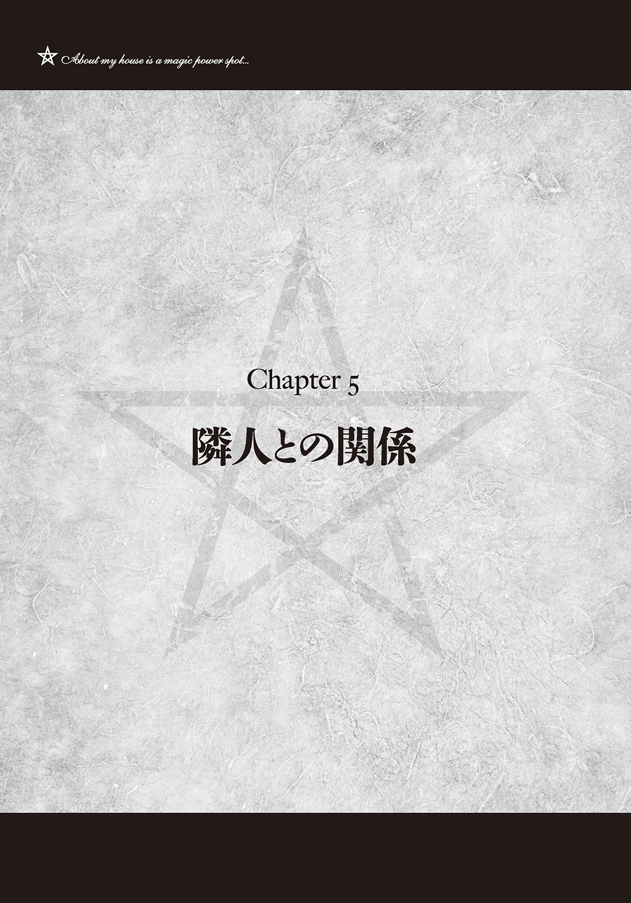
昼過ぎまで寝ていた俺は、とても遅い朝飯の後、居間の大窓の傍でぐてーっとうつ伏せになっていた。
「あー、最近、動き続けたから、こうしてゆっくりするの久しぶりだ」
「ふふ、存分にゆっくりしてくださいね」
後ろから、サクラがお茶を淹れてくれる音が響く。心地いい。
最上階ということで高さがあり、光を遮るものもないので、とても温かい日差しが降りそそぐ。それもまた心地いい。
目を瞑ったらすぐに寝てしまいそうなくらいだ。
と、うとうとしながら窓の外を眺めていると、
「お」
下方、豆粒ほどの大きさだが、ヘスティが見えた。
街の方に向かって歩いている。今日も街に行くらしい。
......まあ、杖の材料集めだろうな。
実は昨日、予備の杖を直してもらったのだが、数時間と経たないうちにポッキリいってしまった。
......ゴーレムを巨大化させ過ぎたからかなあ。
その時に、更に気合いを入れて材料を集めてくる、と興奮しながら言っていたのだ。
「なんか、申し訳ない気持ちになってくるな」
「でも、ヘスティちゃん、物凄く楽しそうですよ？」
「そうか？」
「はい。喜んだり、楽しんでいる時って、魔力の揺らぎ方が特徴的なんですよ。多分、作りがいを感じているんだと思います」
へえ、そう思ってくれるなら、良いことだな。
俺は魔力を見たり感じたりすることが、どうにもできない。
だから、そのへん分からないんだけど。
「やっぱり感知能力とか鍛えてないからかな」
「それもありますが、どちらかというと、主様の魔力が非常に大きいのが要因かと。人間が小動物の呼吸に気づくためには、物凄く注意しなければならないのと一緒です。体からほとばしっている魔力というのは、本来、微弱なものなので」
ふむ、魔力を使うことはできるけど、その辺りはまだまだだな。
「でも、サクラは分かるんだな」
俺もサクラと同期している時は他人の魔力とか存在とか感知できるし。
「家ですからね。人の反応には敏感なのです。この前来たアンネさんも、とても楽しそうだったのを覚えてます。ヘスティちゃんに似ているので」
「......アレと似ているとか言われると、ヘスティは複雑だろうな」
「ふふ、魔力が大きければ大きいほど、感情が分かりやすくなりますので。楽しんでいるのは間違いないですよ」
でもまあ、楽しんでもらっているなら、悪いことじゃない。
そうして森の奥に消えていくヘスティの後ろ姿を見ていると、ふと思った。
「ああ、そういえば、サクラは街に行きたいとか思ったりしないのか？」
「はい？ 特に、そう思うことはありませんね。私は主様をお世話するのと、主様の寝顔を見るのと、主様の生活を見ているのが一番幸せなので」
「お、おう、そうなのか。......でも、俺一人で散歩に出たりすることがあるじゃないか。そういう時は、暇だったりしないのか？」
もしもサクラが欲しい物とか、必要としている物があるなら、街で買ってきてもいいのだけれど。
「そういうのは特にありませんねえ」
「物欲がないんだな」
「家ですからね。所有者に似るんですよ」
そう言ってサクラは俺のことを見てくる。
「主様もそれほど、ないじゃないですか」
「いやいや......多少は、あると思うぞ......？」
自信はないが、あるはずだ。
うん、美味しい物とかさ。
......いや、それは食欲か。
他に何かないだろうか、と考えてみたが、思いつかない。
「あー......まあ、うん。多分、少しはあるさ。安定した生活とか欲しいし」
「ふふ。私もそういう欲が、ちょっとだけあるということで。それよりも主様は、街には行きたくなることはないんですか？」
サクラが聞き返してくる。
彼女に言っておいてなんだけど、俺は特に、街へ向かう必要性を感じていないんだよな。必要なものは大体、家の周辺で揃うし。
そうでなくても人狼が持ってきてしまうし。何より、
「俺は家にいるのが一番だと思っているからさ。出かけるよりも、ごろごろしてる方が好きなんだよ」
基本的にインドアだから、街に行く気にはならないんだよな。
「ん......主様から、その言葉を聞けるだけで、私は天にも昇る気持ちになります......」
そう言ったら涙目になるほど感動されてしまった。
ただの出不精なんだけど。
それで喜んでくれるなら、良いか。
「やはり、私は家でゆったりされている主様のお世話をするのが一番ですね。お料理作って、お洗濯して、お風呂を入れて、お布団を敷く。そしてまた朝を迎えてもらう。そんな時間にとても幸福を感じます」
言われてみると、ほとんどサクラ任せでいい生活ができているんだな。
有り難い話だ。
「でも......ちょっとは動いた方がいいのか、俺」
「いえいえ、主様には、いーっぱい、とろけるくらいにぐーたらしていてほしいですね。私が幸せなので」
サクラの口から甘すぎる誘惑が放たれる。
その通りにやったら、本格的に駄目になりそうだな。
「お、おう。――では、お言葉に甘えて、今日はぐーたらするかな」
「はい。膝枕させてもらっていいですか？」
「おう、お願いするよ」
そう言うと、俺の顔の下に、サクラの太ももが入ってきた。
「ぶえ......」
「あ、苦しかったですか？」
「いや、......まさかうつ伏せのまんまやられるとは思ってなくてな」
苦しくはないが寝づらい。
なので、顔を横に向けて、体重を預ける。
すると、サクラの体温と、暖かい日差しが、体をゆったりと休ませてくれた。
「......んー」
サクラに触れているから、自動的に同期が発動して、周囲に何匹かのモンスターが来ていることが分かった。
普段より何だか多い気がするけれど、どうでもいいや。
適当にゴーレムに指示しながら、俺は日向ぼっこを続ける。
モンスターは数十秒で感知の範囲内から消え失せたから、特に気にする必要もなかったしな。
昼間、街から戻ってきたヘスティに呼ばれて庭に行くと、一本の杖を渡された。
今まで受け取った中でも、ひときわ真っ白な杖だ。
「これで、多分、折れない！ 予備の杖、完成！」
「お、おう！ ありがとう」
「もう、大丈夫だから、使ってみて！」
ヘスティは鼻息荒く、杖の丈夫さについてプレゼンしてくる。
気合いの入りようからして、傑作なのかもしれない。
とりあえず軽く使ってみよう。
「ええと、ゴーレム×一〇〇」
庭の木々がゴーレム化して、立ち上がる。
前に使った時は、予備の杖がぶっ壊れてしまった魔法鍵だが、
「お」
ゴーレムを一〇〇体召喚しても、杖にはヒビ一つ入らなかった。
「すげえな。ビクともしないや」
「ん......不眠不休で、本気で作った。......お腹減った」
「いや、無理しなくていいからな」
腹ペコでフラフラし始めたヘスティにリンゴを渡すと、もしゃもしゃと食い始めた。
よほど腹が減っていたのか、芯や種まで食いつくしてしまったくらいだ。
ただ、その一個を食べただけで、大分落ち着いたらしく、
「ふう」
と、息を吐いて庭の切り株にちょこんと座る。
「そんな根を詰めなくても、俺は待ってるから良いんだぞ？ メイン杖はあるんだし」
少し頑張りすぎじゃないだろうか、と思ってそう言ったら、ヘスティはぷるぷると首を振った。
「だってアナタは、日に日に、魔法鍵で使用する魔力量が、多くなってるから、我も気合い入れないと、間に合わない。......最近、ゴーレムがまた、細かくいかつく、大きく強くなってるし」
「筋肉質になったって言ってくれ」
体のディティールにもこだわっているんだ。
こだわればこだわるほど、魔力の消費量が大きくなるけどな。
「ともあれ、ありがとうな。杖の材料探しから、作成までやらせちまって」
「ん、いい。趣味。お金は、アナタの懐から出てるし」
「でも、この杖の材料って、お前の骨なんだろう？」
それは買えないし、貴重なものなんじゃないのか？
「んー、尾骨は貴重だけど、正確にいうと爪とか、鱗とか？ そういうものに近い。生え換わる時期に、補充できるし、問題ない」
「ああ、そうなのか」
なら、気にせず使わせてもらうけど。
「それに、在庫が切れても、補給先はある」
「補給先？」
「ん、持ってそうな竜王、我以外にもいる」
そうか。竜王なら、誰でも材料を取ることができるのか。
「魔力量とか硬度の違いは、あるけど。基礎は変わらない。だから、代用はできる。たとえば、アンネとかでも......」
と、言った瞬間だ。
「呼びましたか、姉上さま――――」
物凄いスピードで走ってきたアンネが、思いっきりヘスティに抱きついてきたのは。
「うぐ......」
「おはようございます。呼ばれてしまったこともあり、今日も来てしまいました、ダイチさま」
「おう、いらっしゃい。噂をすれば、だな」
アンネはヘスティを抱きしめながら、器用に挨拶をしてきた。
ぺこり、と腰を折ったせいで、二つの球にヘスティが深く埋まる。
「ぬう、呼んでない、のに......!!」
二度目ということもあり、ヘスティは即座に胸を押し返す。
力強い拒否と共に、アンネから脱出した。
「はああ、......はあ、即座に脱出されたのは残念ですが、絶妙な力加減、良かったです姉上さま......」
思いっきり押し返されたアンネは顔を赤らめている。
やっぱり駄目な奴じゃないだろうか、この竜王。
「つーか、何をしに来たんだ、アンネ」
「はっ......そうでした。この前、ご迷惑をかけたお詫びを、と思いまして」
「ほう、迷惑とな」
一体、どっちの迷惑だろう。
土の人形と共に、突っ込んできたことなのか。
それを片付けるのに、そこそこ労力を使ったことなのか。
「え、えっと......あの人形がわたしのだって、聞いているんですね」
「おう、ヘスティが教えてくれた」
自作自演をするのは良いが、それで俺の庭を汚してきたり、静かな昼飯の時間を潰してくれたのはいただけない。
ちょっと怒りたい気分ではあった。
「うう......スミマセン」
よし。怒る前に謝ったから、今回は何もなかったことにしよう。
「でも、謝るだけじゃ駄目ですからね。ああ、その冷たい目、......ゾクゾクします。はあ......はあ......どんな罰をくらっちゃうんだろ。お尻をあの魔力の渦で叩かれるのかしら。そんなことになったら、わたしは、わたしは......!!」
駄目だコイツ。
怒りの目を向けたりしたら、逆効果だ。
適度に受け流さないと面倒な性癖すぎる。
よくこんなのを妹分扱いできたな。ヘスティを尊敬するよ。
「......分かってくれた？」
「ああ、よく分かったよ。――ほら、アンネ、夢の世界からいい加減に戻ってこい。お詫びってなにをしに来たんだよ」
「あっ、はい。わたしの秘蔵のマジックアイテムを持ってきたんですよ！」
「マジックアイテム？」
なんだろう、と思っていたら、横で息を整えていたヘスティが教えてくれた。
「様々な効果が出る、魔力を含んだ物体。日用から、戦闘まで、色々使える」
流石は知識が豊富なヘスティ先生だ。分からないことがあれば、ばっちり説明してもらえるな。
「それで、アンネはマジックアイテムを作るのが趣味で、得意」
「はい、そうなんです。わたし、【最新】の竜王なので。魔力を含んだアイテムを、新しく作るのが好きなんですよ。......始まりは、まあ、姉上さまのマネなんですが」
「我は杖だけ。でも、アンネは確か、薬から補助道具まで、多くの種類をクリエイトできたはず」
「いえいえ、わたしは逆に杖は作れませんからね。杖のような、繊細な武器を作れる時点で、姉上さまは異常なのです」
なるほどな。作れるものは違うのか。
そんなことを思っていたら、ヘスティが俺の顔をじっと見た。
「ん。でも......一番、異常なのは、これだけのゴーレムをこの精度で作れるこの人なんだけれどね」
「え!? これ、全部ゴーレムなんですか!?」
周辺の筋骨隆々なゴーレムを見渡して、アンネは飛び跳ねた。
「凄い魔力がこもっていますが......」
「うん、この人が作った。しかも、魔法鍵で」
「うわあ、姉上さま以上の精度を持っている人、初めて見ました。わたしなんかよりもずっと魔力を込めているのに、魔法鍵で作ったんですね......」
なんだろう。
驚きの視線なのかもしれないけれど、物凄く珍しいものを見る目を向けられている気がする。
俺は珍獣じゃないぞ。
「す、すみません、ダイチさま。わたしもゴーレムを作っているので、この光景にビックリしてしまって」
「いや、別にいいんだけどよ......」
「そ、そうだ。樹木のゴーレムを作ったり、お外で作業をしているなら、尚更ちょうど良かったかもしれません！」
そう言って、アンネは胸元のスリットから一本の瓶を取りだした。
中には、小さな水晶のようなものが入っている。
「これ、よろしければ使ってください」
「なにこれ？」
「竜王の血から抽出した、回復ポーションです。そこそこ価値があるものとして売っていて、木のとげで指を切ったりした時から、根っこに足を引っかけて骨を折った時まで幅広く使える薬なんです。塗布すればすぐに効果を発揮しますよ」
「へえ、万能な薬だな？」
木々の手入れとかは大体ゴーレム任せだけど、偶に俺も傷をつくることがある。
サクラに言えば、魔力で治療をしてもらえるし、そうでなくとも家の薬箱に入っている絆創膏とかでも十分に処置できる。
だが、塗布するだけで治るのなら、便利な薬だ。
置き薬としてありがたく貰っておくか。
「ありがとうな、アンネ」
「いえいえ、お詫びですので。あ、それと、ひとつご報告がありまして」
「うん？ 報告？」
「はい、今後、魔境森でモンスターが活性化したり、発生するかもしれません」
なんだ、魔境森に何かあったのだろうか。
「魔境森というか、森の地下にちょっとばかし問題がありまして。あ、でもモンスターの活性化は一時的なものなので、そこまで心配する必要はないんですよ」
軽い言いようだ。
そこまで深刻なものではないらしいな。
「そうか。了解した。じゃあ、適度に気をつけておくよ」
「はい、では、わたしはこの辺で。回復ポーションが切れたら言っていただければ補充しに来ますので。今後とも、よろしくお願いしますね、ダイチさま。姉上さま」
そう言って、アンネは、一度ヘスティを抱きしめてから森に戻っていった。
「......すごく、疲れた」
「おう、お疲れ」
なんというか、すごく騒々しい、薬の訪問販売員ができてしまったものである。
まあ、便利な薬を手に入れたから、いいんだけどさ。
夕方。
貰った杖で魔法鍵を使って家の形を変えまくってみたのだが、今回は、どれだけ使っても壊れなかった。
ちょうどいいので、今日は家の形態を増やしてみようと思う。
城型だったり、和風の屋敷形態だったり、ツインタワーだったり色々と形を変えて、登録していく。
もちろん、部屋の中でゴロ寝しながらだ。
これなら肉体的にも疲れることなく、形を変えていける。
サクラとの同期はいつもの膝枕で完璧だしな。
......えっと、他にやったことがない形は......。
と、頭の中で探していく中でふと、思ったことがある。
「サクラ。アンネの奴が地下でどうたらとか言っていたけれど、俺も地下を利用することってできるのかな」
「えっと、それは地下室を作る、ということですか？ それなら、できると思いますよ」
おお、マジか。
地面から新しく生えてきてるのに、地下室作って大丈夫なのか。
「地面にぎっしり根を張っているわけではありませんからね。基礎もしっかりしているので、拡張していっても平気です」
ふむふむ、そうか。じゃあ、ちょっと地下にも手を伸ばしてみようか。
「でも、どうやって配置すればいいかね。初めてだから分からないんだけど」
「やり方は、いつのもの改築と一緒です。敷地内の地面ならば、ブロック単位で組み替えていくことができると思いますので」
言われたので、脳内で敷地内を意識する。
そして家の周りの地面をブロック単位で動かそうとしたら、
「うわ......マジでできたよ」
一部屋単位で、地面が凹んだよ。これはすごい。
「いえいえ、ほとんど主様のお力ですよ？ 私は、ただ敷地内の認識くらいにしか魔力を使ってませんし」
「そうなのか......でも、敷地内って判定は、どうやって出してるんだ」
どこもかしこも、こんなブロックみたいに動かせるわけじゃないだろう。
「はい。私という魔力スポットの魔力、あるいは主様の魔力が浸透している範囲、ですね。この場合は、主様が木々を植林した部分からだいたい二〇メートル圏内が敷地内という判定になっています」
「その判定、かなり広いな。随分とウチの敷地も増えたもんだ」
なにせ森の一部が完全にウチの敷地になっている。
それというのも、ヘスティのブレスで灰になった部分は俺が植林して、森っぽく回復させたからだ。
別にそのことで文句を受けたことはないし、ディアネイアからは、別にこの辺りは誰の土地でもない、と聞いている。
また人狼たちからも、
「我らの王が回復してくださった場所です！ ですから、どうか自由に使ってください！」
と、むしろお願いされたから、構わず使ってるけどさ。
「まあ、今はとりあえず、新形態の地下室だな」
試しに、一ブロックの穴を直下に作り、一階部分を埋めてみた。
すると、意外と簡単に地面に潜り込む。
「おお、簡単に埋まるな」
一階分、ビルが低くなった。
これは面白い。
深さまで自由自在になるのだったら、自由度が跳ね上がるぞ。もう少しやってみよう。
地面を更に一段階、下に掘る。すると、
――プチッ。
と、何かが潰れるような感触があった。
同期しているから、その感覚がしっかり手のひらに来た。
「え？ なんか、潰れた感触があったんだけど、なにこれ」
「ああ、この硬さと波動は......極魔石だと思います。龍脈などの魔力スポットがある地中には偶にできる鉱物ですね。硬度は相当なもので、なかなか潰れないものなんですが......改装する際には、大地そのものに強い魔力の負荷がかかりますし、潰れてしまったのでしょう」
サクラは軽く言ってくるけれど、潰しても大丈夫なんだろうか。
「悪影響とか出たりしないのか？」
「はい。へっちゃらですよ。こういう魔石から漏れる力をエネルギーにしていたモンスターは弱体化するかもしれませんが、私たちには関係ありません。むしろ大地に魔力が戻るので、土壌が良くなるというメリットまであります」
モンスターが弱まって、土壌が良くなるなら、特に問題はないな。
むしろ有り難い限りだ。
「よし、じゃあ、もうちょっとだけ試してみよう。サクラ、頼むぞ」
「はい！」
そうして、どんどんと埋めていった。
――数十分後。
俺の家が、魔境森から消えることになった。
いや、正確には、全部埋まった。
「......まさかビルが丸ごと埋まるとは」
「綺麗に入りましたね。流石、仕事の細かい主様です。これならば、外から視認できるのはただのリンゴ畑と小屋だけになりますね」
いや、うん、そうだね。
褒めてくれるのはいいんだけどさ。
それに、確かに綺麗に地面の中に入ったんだけどさ。
「これ、俺たちが出れなくない？」
「あー」
ドアも窓も土でふさがれている。
魔力のコーティングで土が流れ込んだりはしないけれど、これでは出入りできない。
ただ、呼吸はできるから、空気がどこからか入っているのだろう。
内装を変えれば、上にドアをつけることだって可能だから、退出はできるけれども、
「上にドアを設けたら、入る時はただの落とし穴になるしなあ」
「ああ......階段など、新しく付けないと危ないですね」
考えなしに埋め込んだら危ないことになった。
これは、地面に埋めるときは、相応の構造にしなければならないようだ。
「......でも、大きくなり過ぎた部分を地面に埋めておくってのはいいかもしれないな。安定性も確保できるし」
「はい、そういう使い方もできますね」
「あとは、地上に三階建てくらいのを残しておいて、あとは地下とか、そんな感じかね」
まあ、今日のところは、お試しだ。
庭の地下を使って新しい形態を作れるということが分かったので、ヨシとしよう。
「魔法鍵は......そうだな。――《引き籠もる》と」
とりあえず魔法鍵に登録した。
いや、多分、二度と使う機会はないと思うけれど、一応ね。
次の日の朝、俺がヘスティと共に庭でゴーレムいじりをしていると、
「今日も来ちゃいましたー！」
森の奥からアンネが歩いてきた。
「明日からちょっと街の北部で視察をしなければならないので、姉上さま分を補給しようと――って噓ですよ！ 逃げないでください、姉上さま！ その素早い逃げ姿も可愛らしいですけど！」
「......」
ものすごい速さでヘスティは既に俺の背後に隠れた。
そこまでギュッと裾を摑まなくても、俺は逃げないんだけどな。
「――で、アンネ。本当は何しに来たんだ？」
ヘスティの顔を見て、口元をだらしなく緩めているアンネの肩をポンポンと叩くと、ようやく我を取り戻したらしい。
「はっ......し、失礼しました。今日はダイチさまに携帯薬箱をお渡しに来ただけですよ」
「携帯薬箱？」
「ポーションを保管しておくバッグです」
そう言って手渡してきたのは、ベルト付きのケースだった。
ベルトは革製で黒と金色が混じった細く綺麗なものだ。
「これは、腰元に着けるのか？」
「はい。庭仕事をするときに、これをつけておくと、入れておいたポーションがすぐ使えて楽なんですよ」
「へー、ありがとうよ」
受け取ったベルトを俺が腰に巻いてサイズをチェックしていると、ヘスティが横から見てきた。そして、
「これ、竜王の皮が使われてる。多分、翼の根元あたり、かな」
ぽつりと呟いた。
「え？ 見ただけで分かるのか？」
「ん、多分、だけど。合ってる？」
「ええ、すぐに素材を見抜くとは流石は姉上さまですね......！」
アンネも頷いているし、どうやら正解らしい。
凄く柔軟性があると思ったら、そんな素材でできていたのか。
「竜王ってまさか、アンネの体から取ったのか？」
「はい。ダイチさまの魔力でも破壊されないように、私の翼を使ったマジックアイテムになってます。強度は保証できますよ」
何気なく言われた。
ヘスティもそうだったけど竜王は自分の体を材料にしすぎじゃないだろうか。
「というか、翼を使って大丈夫なのか？」
「まあ、皮の一部分だけですから平気です。ほんの数秒で治りますよ」
アンネは微笑みながら脇腹あたりを撫でた。
彼女の竜形態は見たことないが、平気というなら平気なんだろう。
「んじゃ、気にしないで貰うけれども。この前から貰ってばかりで悪いな」
先日もポーションを貰ったばかりなのに、薬入れまでサービスされている。
流石に貰い過ぎな気もしてきたな。
「いえいえ、姉上さまに近い場所で空気を吸えるだけで十分な報酬ですので」
「......ああ、そうかい」
アンネの台詞に、ヘスティは、俺の裾を更にぎゅっと握ってきた。
「ホント......暑苦しい......」
「まあ、うん。我慢だ、ヘスティ」
俺とヘスティの目を受けて、アンネは慌てたように訂正する。
「え、えっと、半分、冗談ですよ？」
つまり半分は本当なんだな。
「あ、あー......姉上さま関連はともかくとしても、ダイチさまからも、私は十分に報酬を貰っていますよ」
「俺からも？」
「貴方さまのゴーレムを見せてもらう、というのは個人的に貴重なことですから」
「ゴーレムを見て、それが役に立ってるのか」
「あれはマジックアイテムとしても超一級品ですので。わたしも作り手ですから、とっても参考になるのですよ！」
へえ、そうなのか。
自分のゴーレムがマジックアイテム扱いされるなんて思わなかったな。
「ゴーレムと言えば、アンネも作っていたっけな」
「ええ。でも質は全然違って、ダイチさまの方がすごいですけれどね。比べてみれば分かりますが......」
そう言うと、アンネは自分の手を合掌させ、そこに軽く息を吹きかけた。
「――《黒金のブレス》！」
声が聞こえた瞬間、合掌した手の隙間から、ごぼっと黒い土が溢れだした。そして、彼女の足もとにどんどん堆積していく。
出来上がるのは、黒いドロドロとした人形だ。
「へー、これがアンネの能力か。どういうものなんだ？」
俺がその光景を見ながら聞くと、背後にいるヘスティが補足してくれた。
「アンネは【黒金】の竜王。だから、ブレスも土と金属を生むものになる。そして、【最新】の竜王でもあるから、マジックアイテムを次々に新造できるのが特徴」
「えへへ、解説ありがとうです、姉上さま」
そしてしばらくすると、アンネのゴーレムが完成した。
体長一メートル弱の小さなものだ。
「これが、わたしのマッド・ゴーレムです。完成するまで時間がかかりますし、そこまでの持久力もありません。......一応、モンスターを吹き飛ばすくらいの能力はありますけれど」
言われて、マッド・ゴーレムは俺たちに手を振ってきた。
なんだか愛嬌があるな、と思っていると俺の後ろから出てきたヘスティは、マッド・ゴーレムを撫でた。
「ん、昔よりも成長したね、アンネ。込められている魔力が、増えてる」
「あ、姉上さまあああああ！ ありがとうございますうううう！」
アンネは褒められて嬉しそうにしながら、ヘスティに抱きついた。
「姉上さま......昔の私のことを覚えていてくださっているなんて嬉しいです......！ ああっ、温かくてちっちゃくて、最高ですぅ」
「......後半の言葉はいらない。......まあ、もういいや」
ついに諦めたようだ。
ヘスティはそういうところで優しいから、この竜王は常に抱きついてくるんだろうなあ。なんて思いながらも、俺はマッド・ゴーレムを見た。
「このゴーレム、アンネが残していった土を使えば俺も作れるんだよな......。なあ、アンネ。俺もそのゴーレム作っていいか？」
ここに以前置きっぱなしにされた黒土がある。
だから、試しに作ってみようと思って聞くと、アンネは少し難しい顔をした。
「うん？ 何か問題でもあるのか？」
「い、いえ、素材があれば基本的に組み立てられます。ただ、ウッドゴーレムと作り方が違うので、やりにくいかも、と思いまして」
「そうか。やってみるわ。――立ち上がれ、マッド・ゴーレム！」
とりあえず、ものは試しだ。
先ほど見たばかりのマッド・ゴーレム作成の工程を頭の中でイメージして、組み立てた。すると、
「おお、できたできた」
二メートルほどの、黒いマッド・ゴーレムが一体、完成した。
「え......なんでできるんです？」
「ん、やっぱり、そういう反応になるよね」
何やら竜王二人が変な視線で見てくるけれども、できちゃったのだから仕方ないだろう。そう思いながら俺はマッド・ゴーレムを動かしてみる。
「マッド・ゴーレム、あの岩にパンチ」
とりあえず、庭に転がっている邪魔な石を殴らせてみたのだが、
「......！」
ギシギシした動きで、殴るまで数秒かかった。
標的の岩は砕けたものの、動きがとても重い。
「このゴーレム、反応が鈍くて確かに操作は難しいな。もうちょっと改良してみれば違うかもしれないが」
なんて呟いていると、
「い、いやいや、わたしのマッド・ゴーレムよりもパンチが速いじゃないですか！ これで遅いと言われたら、世のゴーレムメーカーは落ち込みますよ。というか、ダイチさまのウッドゴーレムの汎用性が高すぎるのですよ！」
アンネに即座に突っ込まれてしまった。
確かにウチのウッドゴーレムは念じればすぐにできるし、量産も可能だし、動きも軽やかで便利だと思っていたけれどもさ。
比較するものがないから分からなかったよ。
「......なんというか、ダイチさまはすごいですね」
「ん、理解者ができて、嬉しい」
竜王二人は意気投合してるし。
ここでも、なんだか微妙な疎外感があるぞ。
「ともあれ......この土はなんだかゴーレム以外にも使えそうだから、貰ってもいいか？」
「あ、はい、大丈夫ですよ」
「おう、ありがとうな、アンネ」
こうして、俺は新しい素材を手に入れた。
何に使うかはまだ決めてないけどな。
プロシアの中央部にある城。
その中庭には騎士や魔女たちが日々鍛錬に励む訓練場が存在する。その訓練場にディアネイアは立っていた。
「魔女隊！ 準備はいいか？」
彼女の前には十数人の魔女たちが立っていた。
「はい！ 防壁も万全ですし、水系の攻撃魔法も既に詠唱完了です」
魔女たちとディアネイアの間には大きな金属鎧が置かれていた。その周囲は、何重もの魔法防壁で覆われている。
それを見て頷いたディアネイアは、続いて自分の隣に立つ騎士団長に声を飛ばす。
「では、始める。騎士団長、手加減抜きの客観的判断を頼むぞ」
「はっ、かしこまりました！ では――総員、放水！」
騎士団長の号令に合わせ、魔女隊の杖が一斉に動く。
「我が前に生まれよ水流の弾丸――《ウォーター・ブレット》」
魔女たちから放たれた水の弾丸はひとつに纏まって肥大化する。
巨大なそれが向かってくるのを目にしながら、ディアネイアは杖を構える。
......あの時の、森での感覚を思い出せ！
頭に浮かべるのは、ダイチのサポートを得て竜を黒焦げにしたあの一撃。それを、再現して、打ち放つ。
「焼け焦がせ――《ブレイド・フレイムランス》」
瞬間、ディアネイアの杖から生まれた極太の炎の槍は、杖が振られると同時、一直線に突き進み、
「――！」
魔女たちの水弾と防壁を纏めて打ち破り、大きな金属鎧に直撃した。
そして、炎の槍をまともに受けた金属の鎧は、木端微塵に溶けて砕け散った。
「さ、流石は姫様です！ 魔女隊一〇人による水弾を打ち破る威力、そして着弾速度、ともに過去最高ですよ！」
炎の槍の威力を目の当たりにした騎士団長は、驚きと歓喜が混じったような表情で褒めてくる。魔女隊も、同じような顔をしている。ただ、
「いいや、まだまだ、だ」
ディアネイアは全く、納得いっていなかった。
「まだ足りない......。既存の炎の槍が、ほんの少し強くなっただけだ」
この程度では飛竜の体を焦がすことすらできないだろう。
......あの時、ダイチ殿の力を借りて、自分が撃った魔法はこんなものではない。
もっと火力も、貫通力もあったはずだ。
「こ、これでも、十分な威力ですよ？」
「いや、錬度を高めねば。あの人に追いつけない」
もっと特訓時間を取らなければ。そう思うや否や、ディアネイアは頭の中でスケジュール表を浮かべる。
「......騎士団長。この後の予定は、書類仕事と、ダイチ殿のもとに行くこと、だったな？」
「え、ええ。確か、そうだったかと」
「ならば時間いっぱいまでもう少し、付き合ってくれるか、騎士団長。そして、魔女隊よ」
「はっ！」
「勿論です、魔女姫様！」
力の入った返事を聞いて、ディアネイアは微笑んで頷いた。
「ありがとう。では、続けよう！」
そのまま、太陽が燦々と照らす中、ディアネイアは修行を続けていった。
午後、俺は庭のベンチに座って、ヘスティが試作した杖の実験作業を行っていた。
「一応、二本目の予備の杖は、昨夜から調整に調整を重ねたから、壊れなかった、ね」
「おう、使いやすいぞ」
今回作ってもらった杖はなかなかに好調で、数十回使っても折れることはなかった。ただ、
「ん、でも細かいヒビがいっぱいできてる」
ヘスティは杖をじっと見て、嘆息しながらそう言った。
「え？ 本当か？」
「肉眼では確認できないけど、魔力が漏れてしまう。だから、まだまだ、改良する。待ってて」
「おう、無理しない程度に頼むぜ」
そうして、鼻息を荒くするヘスティと喋っていると、
「こんにちは。ダイチ殿！」
森の方からディアネイアがやってきた。
「おう、こんちは。......今日は随分と血色のいい顔をしているな？」
「うむ。ちょっと難しい特訓が上手くいったものでな。多少、調子は良くなったんだ。それでダイチ殿。これを、受け取ってほしい」
そう言ってディアネイアが差し出してきたのは、いつもの金が入った袋だ。
「......うん？ 何の金だ？」
俺は金を貰えるようなものを渡した覚えはないんだけど。
「以前、貴方が街に来たことで、城付近にあった市営の薬草農場が豊作になってな。その時に得られた報酬の一部だ。だから是非、受け取ってほしい」
「ああ、まあ、うん。貰っておくけどさ」
また俺の家で経済の循環が滞りそうだな。
......まあ、最近はヘスティに杖を沢山作ってもらって、その材料費としてかなり渡しているけどさ。
それでも、まだまだ何室か埋まるほど残っている。他に利用法を見つけないとなあ、と思っていると、
「ん......む......」
俺の横に座っていたヘスティが、うつらうつらと頭を揺らしていた。
「お、眠いのか、ヘスティ？」
「ん......ちょっと、昨日から魔力を使いっ放しで、起きて、いたから」
半ば瞼が落ちかけている。
眠気が限界のようだな。
「寝たら、放って、おいてくれれば......い......」
「おっとっと」
喋る途中でヘスティは、ぐらりと体を倒れさせてきた。
放っておけとは言われたけれど、流石にこのまま放置しておくわけにもいかないので、
「とりあえず、小屋まで連れてく――っと」
俺はヘスティの体を抱き上げて、立ち上がる。
「ん......ありがと......」
「気にするな。眠いんなら仕方がないさ」
とりあえず、金の使い方を考えるのは後回しだ。
今は、眠たげな友人を寝室まで運ぼう、と俺は小屋に向かうことにした。
白い少女を両腕で抱えて運んでいるダイチを見て、ディアネイアの口は無意識に動いていた。
「......良いなあ」
「うん？ 良いって何がだ？」
彼はヘスティを小屋の内部にあるベッドに寝かせた後、首を傾げて聞いてきた。
その聞き返しで、ディアネイアは自分の発言を初めて認識した。
......な、何を言っているんだ、私は！
「い、いやっ......何でもないんだ」
「うん？ まあ、気にするなって言うんなら気にしないけどさ」
「そ、そうしてくれると助かる。......っと、ヘスティ殿の眠りの邪魔になってはいけないからな！ そろそろ私は、お暇させてもらうよ、ダイチ殿」
「おう、またな」
ディアネイアは逃げ帰るように、ダイチの家を後にした。
......は、恥ずかしい......。
羨ましさが言葉になって出てきてしまうとは。
真っ赤になった顔を冷ますために、しばらくはテレポートせずに歩いて帰ろう。
そう思いながら、ディアネイアは足早に街へと戻っていった。
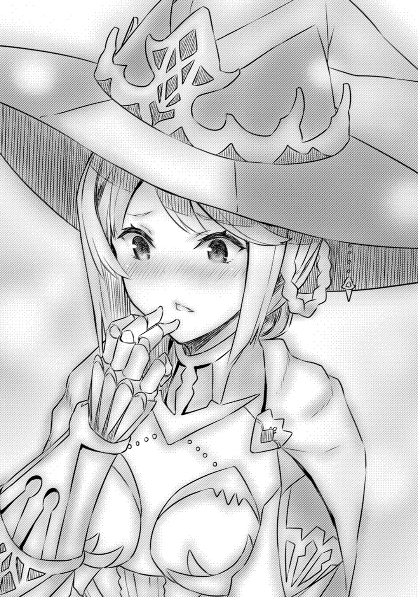
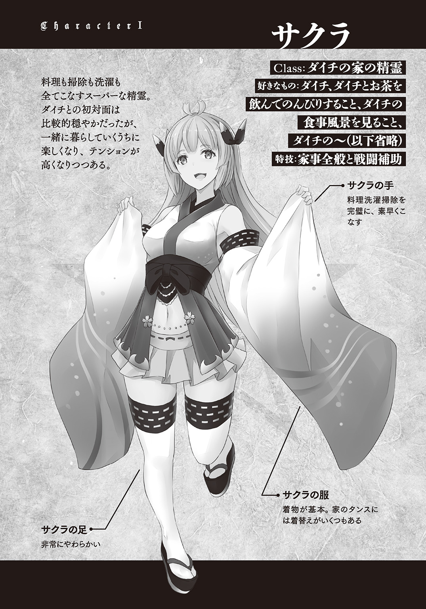
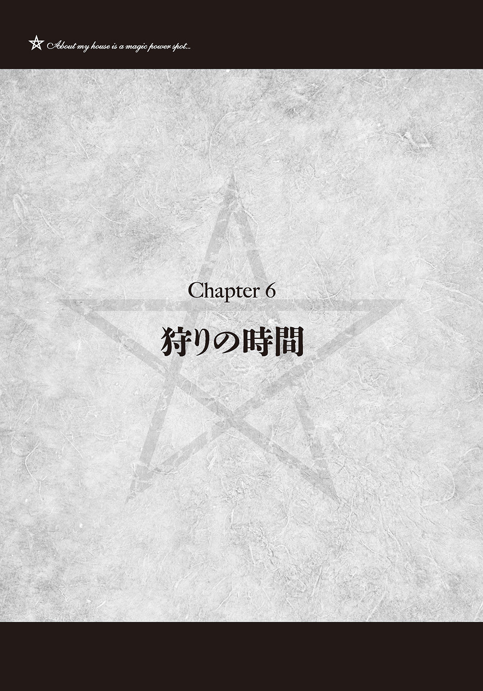
王都プロシアの西。
魔境森との境で、ディアネイアはモンスターを狩っていた。
「ふう、今日の討伐はこの辺で終わりにしておこう」
「お疲れ様です、ディアネイア様」
騎士団長に前衛を任せて、後衛のディアネイアが炎で焼き尽くす。
その戦法で、魔境森と王都の間に出現していたモンスターは討伐し終わった。
いつもの治安維持の一環だ。
「騎士団長。ついてきてくれてるのは助かるが、騎士団への指示は大丈夫なのか？」
「既に指示は出し終えておりますので平気です。むしろ、姫様を一人にさせてしまう方が危険ですし」
「まあ、そうだな。モンスター狩りの基本はグループで。ソロだと予想外の危険に対処するのが難しくなる......だったな」
昔、騎士団長から教えてもらった戦闘の基本だ。
「特に、今はダンジョンが活性化している最中ですからな。注意しておくべきです」
「そうだな。今のところは、モンスターの大量発生は起きていないようだが......」
いつも通り、自然に発生したモンスターを狩っているだけでどうにかなっている。
アンネの話では近日中、それもほんの二～三日で発生するだろう、とのことだったが、もう三日以上経っている。
予想以上に、遅れている。
予想が外れるのは困るが、ディアネイアとしては有り難いことではあった。
「お陰で、防衛のための人員を配備する時間が稼げたからな」
「......腕利きの集団が王都にいたのはラッキーでしたな」
武装都市での依頼達成率九割を誇るトップ冒険者グループ『シャイニングヘッド』。
彼らが王都の酒場にいたのだ。
それが街の警備にあたってくれるというのだから、本当にありがたい。
「この辺りのモンスターは、なかなか強いですからね。並の冒険者なら、二体同時に相手にするのは難しいですし」
「ああ、鋭い牙で人を突き殺してくるファブニールや、気を抜いた瞬間に丸のみにしてくるビッグスライムも、魔境森で湧いている」
冒険者がグループを組まなければ、討伐が難しい連中が多かったりする。
「それにダンジョンモンスターも加わるのだから、本当にシャレにならん。防備を固めるのが間に合えば良いのだが」
「問題は山積みですなあ。他の冒険者も招いてはいますが、人を招けば招くほど物資も必要になってきますし。結界を張って街から出入りができなくなった時のための兵糧も、確保できていません」
「その辺りの問題もいずれ解決しなければならんか......」
本当に問題は山積みだ。
だが、困った困った、と言っていても仕方がない。
「今は、次の行動に移ろう。私は人狼たちに魔境森の状況を聞いてくることにする。騎士団長は、街の防衛配備のチェックを頼む」
「......本当に、申し訳ありません。本来は姫様ではなく、伝令役がやることなのに」
「気にするな。私くらいしか、テレポートを使える奴はいないのだ」
迅速に行動するには、自分一人の方がむしろやりやすい。
「研究都市に籠もっている連中を連れて来れれば話は別だが、今気にしても仕方がないのでな。......行ってくる」
「はい、行ってらっしゃいませ！」
テレポートを使ってディアネイアが移動した先は、魔境森の中心部にある人狼の集落だった。
「やあやあ、ようこそ、ディアネイア姫」
そして到着するなり、人狼の長であるガロウが出迎えてくれた。
「待たせてすまなかったな」
予定していた時間よりも数分遅くなったことを詫びると、ガロウは苦笑して首を横に振った。
「気にしないでくれ。姫が平原でモンスターを狩っていたのは、知っている。それはオレたちにとっても有益なことだからな」
「......流石は人狼。情報が早いな」
ほんの数十分前のことなのにもう知っているのか。
「諜報収集と物資調達こそが、人狼の本領だからな。これくらいのことができねば、王に顔向けができねえ」
はは、とガロウは歯を見せて笑いながら、歩きだす。
「さあ、向こうの広場の一角に場所を取ってある。そこで情報を渡そう。――これまで使ってた喫茶店があいにく改装中でな」
「ああ、あのお茶が美味しいところか。とても残念だが、改装中なら仕方がないな」
そうしてガロウと会話しながら、ディアネイアは集落の中央にある通りを歩く。
木造の家屋がいくつも立ち並び、たまに顔を出す人狼の子供たちが楽しそうに笑っている。
「......随分と豊かになったな」
ディアネイアは今までにも何度か、この集落に足を運んだことがある。
それゆえ、来るたびに賑やかに平和になっていく様を見てきた。最初に来た時は、ここまで賑やかではなかったのだ。
「ああ、我らが王のお陰でな。多くの商売をできるようになった。それによって、集落の設備も充実させることができたんだ。オレたちが普通に商売してれば、人間の商人から知識を得ることもあるしな」
「なるほど。良い環境になっているのだな」
「少なくともここ数十年では最高の環境だ。我らが王には一族総出で感謝してもし足りないくらいだ。――っと、着いたぞ」
そんな会話をしているうちに、広場の一角にある円卓に辿り着いた。
自分たち以外、その席の周囲には誰もいなかった。
......まあ、遠くから音を聞き分ける人狼の耳と鼻であればこの場にいなくとも、盗み聞きはできるのだが。
今回は別に密談をするわけでもないし、オープンスペースでいいだろう。
商談など秘密が多い時は魔法で盗聴防止をしているしな。
「それで、魔境森のモンスターの状況はどうなっている？」
席につくなり、ディアネイアは尋ねた。
円卓の上には書類がいくつか並んでいるので、それを見つつ答えを待つ。
「モンスターが活発になっているのは確かだな。出現数はあまり変わっていないが、動く範囲が増していて、遭遇率が高いんだ」
「ふむふむ、ダンジョンが地下に伸びてきている影響、なのか？」
ダンジョンに住まうモンスターは凶暴で、他者に対する敵意が強い。それが関係しているのかとディアネイアは思ったのだが、
「そこまではオレも分からない。今までも、モンスターの活発化事例なんて山ほどあったから、今回はたまたま重なっただけの可能性もある。だからオレとしては、変わっていないという答えになるな」
「なるほど。ダンジョンのせいとは限らないのか」
「ああ。ただ――そうだな。いつもと違う点としては、土系のモンスターが出てきているってことだな」
「土系というと、地面から出てくるワームやモールなどか？」
ディアネイアの問いに、ガロウは頷いて言葉を続けた。
「ああ、本来はこの辺にいなかった奴らだな。あるいは、存在していても、オレたちが今まで出会うことがないくらい深い所に住んでいた奴ら、か」
「魔境森の生態が変わっているのだな」
「まあ、我らの王が、この近くに存在しているしな。それだけでも生態系は多少なりとも変わっている。オレたちを含めてな」
と、ガロウは円卓上の書類を指で叩きながら、言ってきた。
そこには今までに遭遇したモンスターの数と種類、そしてここ数ヶ月出会わなくなったモンスターの名前が記されている。
「......この出会わなくなったモンスターというのは、全部、凶暴な攻撃性を持っている奴だな......」
「ああ、オレたちの王に突っかかって、ぶっ飛ばされて逃げていった奴らだな。この場にとどまるのは危険だと判断したんだろう」
「なるほど......そして、こちらが土系のモンスターたちの名前か」
「ああ。そっちの方が、オレたちからすれば、楽な相手でな。匂いで感じ取れて、気配も分かりやすい。だから、この森は凄く暮らしやすくなってるんだよ」
有り難い話だ、とガロウはゆっくり頷く。
ディアネイアとしても凶暴なモンスターが減り続けてくれるのは有り難い。しかし、この土系モンスターの出現というのがどうにも引っかかる。
「......今日からでも、少しずつ対策をしていった方がいいか」
「ああ、できることがあれば言ってくれ。協力させてもらう。俺もそっちの街の商人には、食材の仕入れとかで世話になっているからな」
「はは、有り難い。では、引き続き情報収集を頼むよ」
「ああ、......料金はしっかり貰うけどな。交渉は後々やらせてもらおう」
「うむ」
そうしてディアネイアは、人狼としばらく会議を続けていった。
人狼との会合はその後、一時間ほどで終わった。
「魔境森のモンスターは今のところ、問題なく狩れているから、今後も情報収集を含めて狩りは続けていくよ」
とのことで、明日以降も情報提供は受けられそうだ。
......ダンジョンがどうなっているのかは分からなかったがな。
魔境森の生態は大分変わっているようだけれども、ダンジョンとの連結穴が関わっているのかは微妙なところだ。
もう少し調べる必要がある。
「――ともあれ、まあ、次は、あの人のところだな......！」
ディアネイアはダイチの所へ向かっていた。
行き方には個人的な決まりを作っていて、テレポートで彼の家の付近まで行き、そこから徒歩ということになっている。
直接テレポートできないのは少々手間がかかるが......。
いきなり行って、驚かれて、攻撃を受けたりしたらたまったものではない。
だから、こうして徒歩で行くのが合っているんだ、と弾む心と逸る思いを抑えて、ディアネイアはゆっくりと歩いていたのだが、
「なんだか、騒がしいな......？」
奇妙な音が聞こえる。
ドドド、と何か集団が走る音だ。
......まさか、な。
思わずディアネイアの足取りが速くなる。
あの人に限って、ありえないと思いつつも。
「モンスターの発生がこっちで......!?」
嫌な予感を抱えて、ディアネイアは走る。
そして、ダイチの家に辿り着いた彼女は見た。
「......え？」
数体のゴーレムが、何十といるファブニールの集団を殴り飛ばしては、樹木の弾丸で縫いとめている姿を。
「ォォォ......!!」
巨大なイノシシが音を立てて巨大なゴーレムに突撃する。
が、何事もなかったかのように跳ね返されて、転ばされる。
更に、ゴーレムの腕から発射された樹木の弾丸が追い打ちで入った。
「――！」
それだけで、モンスターは動かなくなる。
数十秒もしないうちに、そのままモンスターの集団は全滅した。
「はは、相変わらずというか何と言うか、格好いいなあ......」
どうやら、自分が心配する必要なんてなかったようだ。
「よう、今日は何しに来たんだ」
昼寝をしながらモンスターの集団を適当に片付けていると、庭にディアネイアがいるのが分かった。
片付けが終わって眠気も覚めたので、こうして挨拶をしたのだが、
「ああ、うん。なんというか......安心しに来た」
ディアネイアは何故か、物凄く安堵した表情で俺を見ていた。
「？」
「そうだよな。......この様子なら、心配する意味もなかったな。いや、私ごときが心配とか、変な話だが」
この魔女姫は何をわけの分からないことを言っているんだろう。
「いや、こっちの話だ。気にしないでくれ。しかし、これほどのファブニール、貴方はどうするつもりなんだ？」
「いや、どうするって言ってもな。俺たちで捌いて食ったり、人狼とかに分けたり、逃がしたりだよ」
このイノシシの肉は歯ごたえがあってなかなか美味い。すき焼きとかにするとジューシーで良かったりする。
なので一匹二匹なら捌いて、冷蔵庫で保存しているのだけれど。
それ以上になると処理ができない。
だから、人狼に渡したりしている。
基本は生け捕りだから、どうしようもないときは逃がせるしな。そう言ったら、
「そ、そうか。良ければ、だが、私の街に卸してくれないか？ 人が多くなって食料が必要なんだ。もちろん、金は払う」
何故かディアネイアは必死そうな顔で頼んできた。
「え？ 別にかまわんけど......」
こんなに大量に来たことはないので、取り扱いに困っていたしな。
そっちで処理してくれるというのなら、持っていってもらって構わない。
「あ、ありがとう......！ これで問題の一つは解決した......。ダイチ殿、貴方はやっぱり街の救世主だよ！」
「？」
なんだかすごく感激されてしまった。
わけが分からんが、喜んでいるならそれでいいか。
そのまま、ディアネイアは一時間ほどかけて、テレポートを使い、ファブニールを街へと送りきるのだった。
「ふう～、ダイチ殿の家は、本当に素晴らしいな」
イノシシ肉を片付け終えたディアネイアは、俺の庭の椅子にゆったりと座ってくつろいでいた。
サクラが持ってきたお茶を飲んでいる。
「お疲れ様です、ディアネイアさん」
「ああ、ありがとうサクラ殿」
何度か訪ねてきているので、二人とも顔見知り程度にはなっていた。
「ダイチ殿もありがとう。代金は次の機会に持って来させてもらうよ」
「おう、それはいいけどよ。ディアネイア、アンタ、何をしに来たんだ？」
肉を貰いに来た、ってわけじゃないだろう。
「――っと、そうだった！ 今日はダイチ殿に連絡しておかなければならないことがあったんだ」
「連絡？」
「ああ、アンネ殿から、森のモンスターが活性化している、という話は聞いていると思うが、それが街の周辺でも起こりそうなのだ」
へえ、街の方でもか。そりゃ大変だ。
「うむ。だからまあ、貴方にとっては危険ではないかもしれないが、念のため、近づかない方がいい、と思ってな」
「それを言うためにここに来たのか？」
こくり、とディアネイアは頷いた。
なんというか律儀だけど、遠回しなことをするな。
アンネに伝言を持たせておけばよかったのに。
「うむ。発生時期を見極めきれなかったから、今になって後出しするような形になってしまった。すまない」
「いや、謝ることはねえよ。――まあ、そうだな。俺も進んで危険な所になんて行きたくないし、肝に銘じておこう」
ヘスティやサクラにも伝えておくことにしよう。
「でも、街の周りにモンスターが増えて、大丈夫なのか？」
「大丈夫ではないが......防衛のための人員は増やしているから、平気ではあると思う。もう少しで街の全方位に配備できる予定だ」
「ん？ 今は全方位じゃないのか？」
「うむ、ちょうど魔境森との境目だけ空いている。だから私が狩ったりしているのだ」
そんなこともやっているのか。姫って大変だな。
「私は姫ではあるが、大魔術師でもあるから、街を守る義務がある。だから、これは当然のことだよ。――それに、今回は楽な方だ。防衛が間に合っているのだからな」
いや、間に合ってないだろう。
魔境森の境目がガラ空きなんだし。
「いやいや、大丈夫だ。あと一日あれば、援軍の冒険者が来る。それで防衛も完璧になる」
「はあ、そうかい」
彼女が完璧と思うのなら、それでいいんだろう。
どちらにせよ、俺にはあんまり関係のないことだ。
「ほどほどに頑張れよ、ディアネイア」
「うむ、それでは。私は、これ――」
で、といつものような挨拶が聞こえる寸前。
――ドガン
と、森の向こうから爆音が鳴った。
「何の......音だ？」
「俺が知るかよ」
でも、なんだか森の向こうで、煙が上がってるみたいだぞ。
「――これは......もしかしたら、モンスターの発生が始まってしまったか？」
ディアネイアの顔がいったん青ざめた後で、しかし、すぐに冷静なものになる。
「そうだな。こちらの都合よく、待ってくれるはずがないものな......。すまないダイチ殿！ 私はこのあたりで失礼する！ ――《テレポート》！」
そう言って、彼女は庭から去っていった。
「......全く、忙しい奴だ」
「まあ、ディアネイアさんにも、事情があるみたいですからね」
モンスターの活性化とか、物騒な話である。
街の近くの平原だったか。俺は近づかないでおこう。
あと、ヘスティにも伝えておくか。
「おーい、ヘスティ」
そう思ってヘスティの小屋に行こうとしたところで、気づいた。
「なんだ？ ありゃ？」
庭と森の境目。
小さな二足歩行の動物がいた。
全身が真っ黒で、とげとげしい角と翼が付いている。
見た目は悪魔っぽいけれども、
「モンスターか？」
「そのようですね」
そのモンスターは、両手に真っ黒な炎の塊を持っていて、
「......キィ！」
無造作に投げつけてきた。
「敵意あり、と。......ゴーレム」
危ないのでゴーレムを作成して盾にする。
一瞬で立ち上がった樹木のゴーレムは、黒い炎を受け止めると、
「――！」
焦げ目をつけながら、モンスターの方へ走り寄る。
そのまま殴り倒そうとした。が、
「――キッ」
モンスターは猿のように素早く動いて避けた。
ゴーレムの自立駆動では、細かな対処ができないから仕方がない。
「すばしっこいなあ。――じゃあ、ウッドアーマー」
なら、自分で狙おう。
ウッドアーマーをまとって、射出機構付きの腕を構える。
使うのは、しっかりとした、堅い樹木の弾丸だ。
「射出！」
「!?」
高速で放たれた弾丸は、そのままヒット。
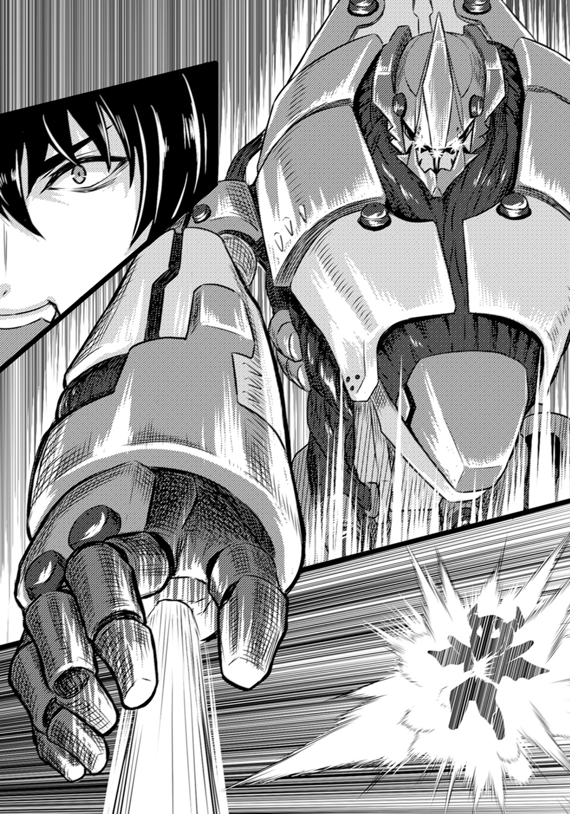
モンスターは胴体を砕かれ、
「ギェ......」
と、うめきを上げて、倒れた。
そして、すぐに消えて、あとには真っ黒な石が落っこちていた。
「お見事です、主様！」
「おう、でも、なんか落ちたな」
「魔石......のようなものですね。随分と淀んでいますが。どうやら、この石の魔力で体を実体化させていたようです」
「へえ、珍妙な生物がいたもんだな」
真っ黒な石を拾って眺めていると、
「ん、騒がしいけど、なんか、あった？」
ヘスティが小屋から出てきた。
「おう、なんか変なモンスター倒したら、こんなのが落ちたんだよ」
そう言って黒い石を見せると、ヘスティは眉をひそめた。
「それ、ダンジョンデーモン系の魔石。大きさからいって、サーヴァントデーモンの方、かな？ でも、なんでこんな所に？」
「なんか変なことなのか？」
「ん......この辺りに、ダンジョン、なかった。なのに、それは、ダンジョンのモンスターしか落とさないモノだから。何かしらの環境変動があって、ダンジョンのモンスターが、森で繁殖してるの、かも」
ふむふむ、そうか。森の生態系も変わってるってことなのかね。
「俺の家に悪影響とか、あったりする？」
「んーん、ないけれど......ダンジョンのモンスターは好戦的で、狡猾。本能的に人を襲う。だから、面倒。......ほら、あそこにも、いる」
ヘスティが指差した先。
そこには、こちらをうかがうサーヴァントデーモンがいた。俺との間にはかなりの距離があるが、
「この時点ですげえ、敵意を感じるな」
その手には例の黒い火の玉があった。
これが好戦的ってことなのか。
「あいつら、一定の距離からは近づかずに、背を向けると、火の玉、打ってくる」
「なんだその嫌がらせスタイルのモンスターは」
「しかも、その火の玉、結構強い。アナタのゴーレム、焦げるだけで済んだけど、普通、焼けるから」
見つけたら最後、倒さなければ、あの地味な攻撃を延々と続けてくるそうだ。
というか、一回背中を向けようとしたら、本当に火の玉を投げてきたし。
正直、少しムカっとした。
「......邪魔くさいな。ちょっと始末してくるわ、ヘスティ」
「ん、我も、手伝う？」
「ああ、家の周りにこいつらがいたら、始末してくれると助かる。俺は奥のをやる」
「了解」
ヘスティはそのまま、俺と反対方向へ走っていった。
これで家の方は安全だろう。
あとは面倒な奴を潰すだけ。
サクラとアーマーで同化したまま、森の中まで入り、狙い撃つ。
樹木の弾丸はヒット。
サーヴァントデーモンはそのまま、魔石となって地面に落ちる。
「ふう、これで最後......」
かと思ったのだが、まだ森の奥に、二体いた。
目が合ってしまった。
火の玉を持ち始めた。
「ああ、うっぜえ......」
「どこから湧いているんでしょうかね」
「分からないが、ちょっかいかけられても面倒だ。とりあえず、目に付く限りのやつらは潰しておこう」
「了解です」
そして、俺とサクラは、森の奥へどんどん進みながら、サーヴァントデーモンを打ち倒していった。
「状況は!?」
「おお、お待ちしておりました、姫様」
ディアネイアが城の執務室にテレポートすると、既に内部は人であふれる作戦会議室となっていた。
そこでディアネイアは騎士団長から情報を受け取る。
「東部、西部、南部からモンスターが同時発生しました。現在、街に向かって進行中。防衛部隊が迎撃しています」
なるほど、とディアネイアは机に置かれた地図を見る。
迎撃中とされる地点には、赤いバッテンが付けられている。
だが、東には何故か黒い丸が付けられていた。
「これは？」
「東部はアンネ様が行くと言って、印をつけていきました。そこを抑えるくらいなら一人で大丈夫だと」
「アンネ殿が、か......」
竜王だから、一人で抑えることも可能なのだろう。
そこは安心すべきか。
「南部は集落も多いので騎士部隊が向かっておりますが、来ている報告によると、優勢だそうです」
「ふむ、では、あとは......西部か」
時間が足りなくて空いてしまった穴だ。
そこには今のところ、守り手はいない。
「いや、冒険者グループの一つがそちらに向かっているとのことです」
「え......？ 冒険者たちには、纏めて北部の防衛を頼んだはずだが」
「はい、だから、その一つだけですね」
モンスターがどれだけ来ているかも分からないのに、グループ一つだけで行くなんて命知らずもいいところだ。
......こちらとしては防衛してくれて有り難いけれども。
それにしたって危険すぎる。
一体どんなグループだ。
「伝令では...『シャイニングヘッド』ですね」
「彼らか。何故、安全な北部から移っているんだ......」
「分かりません。ですが、彼らが街を守ってくれるなら心強くはあります」
任務達成率九割のトップグループだ。
数字を見れば、強いのは分かる。
でも、それだけでは不安があった。だから、
「――私も加勢しに行こう」
「姫様......!?」
ディアネイアの台詞に騎士団長は目を見開いた。
「何を驚くことがある。私しか、テレポートを使えるものがいないだろう」
「ですが......」
騎士団長は何か言おうとして、しかし、首を振った。
「そうでした。姫様は、ここで待っていろと言っても、聞きませんよね」
「うむ、流石は騎士団長だ。よく分かってるじゃないか。私は、戦えるのなら、全力で戦ってこの街を守るよ」
大魔術師として、力を得た自分の役割がそれだと、ディアネイアは強く思っている。
――そして、あの人に憧れた、自分が進むべき道だと。
「戦闘装備をしたら、行ってくる。他の指揮は任せたぞ、騎士団長」
「はい......どうか、ご無事で！」
ディアネイアは自室へ向かう。
街を守るための装備を整えるために。
シャイニングヘッドのメンバーは、王都プロシアの西部にいた。
「ヒャッハー！ ここが一番、防衛網が薄いんだったよなあ！」
「商業地区からも離れていますからね。私たち十人しかいませんね」
彼らが立つのは、街と森の狭間の平原だ。
その地面からボコボコとモンスターが湧いてくる。
ワームなどの虫型のモンスターがまず穴を掘り、その穴を使ってトロールなどの二足歩行型のものが、次から次へと出てくる。
「武装都市の外部でダンジョンのモンスターを相手にするとは思わんかったぞ、リーダー」
「ヒャッハー、俺もそう思うぜ」
言いながら、冒険者たちは武器を抜く。
「それに、武装都市の外で、こんなクエストを受けるとは思いませんでしたね、リーダー」
「ヒャッハー、それも同意だぜ。モンスターからの街の防衛......しかも、こんなキツイ状況での依頼は、久々だぜ」
敵は迫ってくる。
かなりの数だ。
冒険者たち――シャイニングヘッドの名前を刻んだ武器を持つ者たちは、それをじっと観察する。
「ヒャッハー、来てるなあ。でも、あの大地の主に比べたら、この程度のプレッシャー、どうってことないわな」
「ははは、ちげえねえ。寝込んだリーダーが言うと説得力が違う」
「だからあれは、憧れに浸ってただけだっての！」
スキンヘッドの男は汗をかきながら苦笑する。
「ヒャッハー。ちょっと前にこの大軍を相手にしたら、尻ごみしてたはずだからな。あの人の力のお陰だ」
その言葉に冒険者たちはうんうん、と頷く。
「ともあれ、行くぞお前ら。ここは商業地区や居住区から離れていても、人は大勢いるんだよな？」
「はい、農作物とか、この辺で採れるものも多いですからね。住んでいる人はいるでしょう」
「ヒャッハー......なら、守らなきゃな」
スキンヘッドの冒険者は、剣を構える。
「俺たちはこの街で良い酒を飲ませてもらって、良い飯を食わせてもらって、いい感じに楽しんだ。なら、そこを守れなきゃ俺たちの名前がすたるよなあ」
「おう！」
「酒の抜けた頭に気合いを入れ直せよ。――それじゃあ、行くぞヒャッハー！」
冒険者たちは、モンスターに向かって走り出す。
そして、西部の防衛戦が始まった。
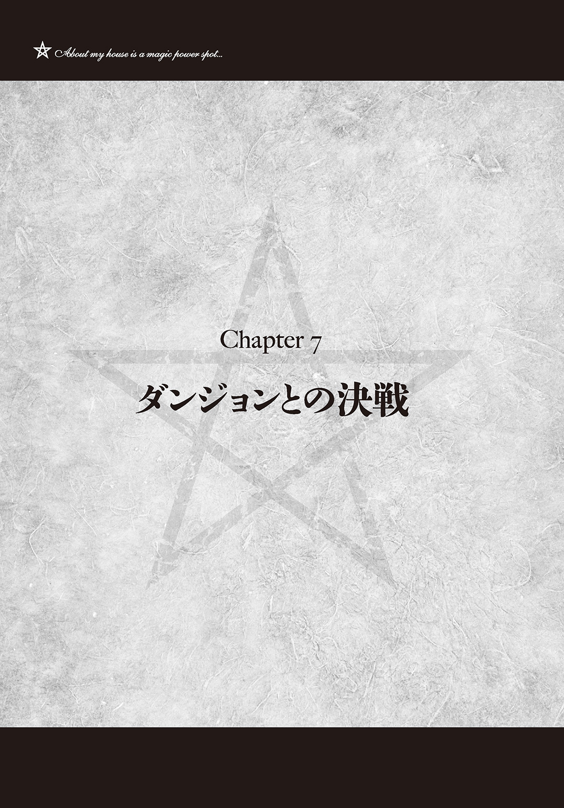
迫りくる軍勢をシャイニングヘッドの面々は迎撃し続けていた。
「ぜえ、ぜええ......これ、終わりか？」
「だと......いいんですがね」
数十体を斧や剣で叩き潰して、既に武器はボロボロだ。
鎧もところどころに傷ができている。
だが、ようやく平原の地面から湧き出ることはなくなった。
「ふう......」
スキンヘッドの男は、そこでようやく一息ついた。
その瞬間だ。
「リーダー！ 後ろ！」
「っ!?」
彼の背後、森の中からサーヴァントデーモンが飛び出してきた。
既に手には火の玉を抱えて、投げた後だった。
「ぐお......こなくそ！」
火の玉をもろに食らった肩は一瞬で焦げつき、動かなくなる。
それでも、スキンヘッドは、振り向きざまに斬りつけようとする。
ただ、サーヴァントデーモンは二発目の投擲モーションに入っている。
振りかえっても、間に合わない。
「くそ......！」
覚悟を決めて歯を食いしばった。刹那、
「ファイアランス！」
彼方から飛んできた炎の槍が、サーヴァントデーモンを串刺しにして縫いとめた。
ジタバタするが、火の玉は発射されなかった。
「――ヒャッハー！ チャンス！」
スキンヘッドの男は、振りかえりざま、サーヴァントデーモンの体を薙ぎ斬った。
胴体を両断されたデーモンはその場に黒い石となって転がった。
それを見た後、スキンヘッドの男は、炎の槍が飛んできた方向を見る。
そこには、杖とローブと帽子を装備し、額に汗を浮かべている魔女の姿があった。
「......ふう、間に合ったか」
「ヒャッハー助かったぜ。ええと、......確か、俺たちに依頼してきた、あの街の姫さん！」
「ディアネイアだ。こちらこそ、礼を言う」
ディアネイアは、一礼した後で、周囲を見渡した。
「ほとんど片付いてしまっているようだな。急いで駆けつけたが、遅かったようだ。すまない」
「ヒャッハー。世話になった街のためだからな。気合い入れてやらせてもらっただけだぜ」
「そうか。そう言ってもらえると有り難い」
スキンヘッドとディアネイアは笑って握手を交わした。
そんな時だった。
「――ぐあっ！」
周囲を警戒していた冒険者の一人が吹っ飛んだ。
「!?」
そして冒険者たちとディアネイアは、それを見た。
「グオォォォ............」
森からノシノシと現れる、巨大な黒い悪魔を。
「なんだ......あれは......」
それは大きな筋肉をまとったモンスターだった。
特徴的なのはヤギの頭と、毛深く太い獣の足、そして、先ほど冒険者の一人を殴った太い棍棒だ。
その体と棍棒は冒険者の血しぶきで真っ赤に染まっていた。
更に、その筋肉質な体はボコボコと泡立ち、何体ものサーヴァントデーモンを生みだしていた。
「ひゃっは......マジかよ。こんな所にダンジョンマスターがいるのかよ......！」
「ダンジョンマスターだと!?」
特定のダンジョンモンスターを生むモンスター。
それゆえに、『ダンジョンマスター』と呼ばれている。
本来はダンジョンの深い階層で主をやっているような存在だ。
ディアネイアでもそれくらいは知っている。
だが、実物を見るのは初めてだった。そして、
「ええ、それも、デーモンを生みだすってことは、かなり深い層のマスターですね。こんな消耗した状態に加えて、あいつは不味い......！」
「ヒャッハー。サーヴァントデーモンに削り殺されるか、あいつに殴って殺されるか、だな......」
シャイニングヘッドたちの言い方からして、かなりの強敵らしい。
既にシャイニングヘッドの疲労は目に見えている。
体も装備もボロボロで、サーヴァントデーモン数体を、抑えるだけで精一杯だ。
あの大物と、戦えるような状況ではない。ならば、
「私が、やろう......」
「む、無理すんな、姫さん。あいつは、やべえ！ サーヴァントデーモンだけでも、俺たちが連携しなきゃ倒せない相手なんだぞ。諦めて逃げろ！」
「ヒャッハー......。そうだ。いくら竜を倒せる姫君だからって、あいつは無理だ！」
冒険者たちは口々に止めてくる。
けれど、逃げるわけには、いかない。
「そういうわけにもいかないさ。ここから先は私の街だからな」
通すわけには、いかない。
だから最初から全力だ。
使うのは、あの人と出会って、覚えた新しい魔法。
あの人に上乗せされた時の感覚を思い出し、会得した竜をも殺す一撃だ。
「食らえ！ ――《ボルカニックランス》!!」
ディアネイアの杖から、極太の熱線が発射される。
それは、一直線に突き進み、
「グォ......!!」
ダンジョンマスターの体に命中した。
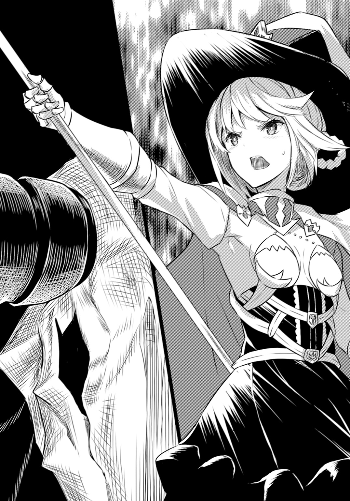
ジュウッと焼き尽くす音が聞こえ、爆発し、土煙が立ち込める。
「ひゃ、ヒャッハー！ すげえぜ！ この威力なら、いくらダンジョンマスターでも」
「うむ......！」
竜ですら耐えきれない一撃だ。
確実に焼き焦がして殺せるはずだった。
だが、煙が晴れたそこには、
「......グォ......!!」
肩を少しえぐられただけの、ダンジョンマスターがいた。
「な、何故だ!? 命中したはずなのに！」
「ちっ......よく見ろ姫さん！ 生んだモンスターを盾にしやがったんだ......！」
ダンジョンマスターの足元には、サーヴァントデーモンであっただろう、魔石がいくつか転がっている。
......そんな風に防ぐとは！
やられた。貫通力が足りなかった。
「ならば......もう一発......！」
放つための準備をしようとした。だが、
「姫さん、あぶねえ！」
「......っ!?」
それよりも早く、近寄って来たダンジョンマスターにぶん殴られた。
顔面を拳で、だ。
咄嗟に杖と腕でガードしたが、
「――!?」
思いっきり吹っ飛ばされて、平原を転がってしまう。
「ぅぐ......物理攻撃とは、痛いじゃないか......」
棍棒を振るう側の肩を焼いていたのが不幸中の幸いだった。
あの重たい棒の一撃を受けていたら死んでいたが、素手だから顔が大きく腫れあがるだけで済んだ。
......さて、どうする。
顔が熱で焼かれるような感覚を得ながら、ディアネイアは立ち上がる。
ガードしてもこの威力。
肉弾戦では勝ち目がないのは明らかだ。
その上、自分の火炎は通じない。
向こうにはサーヴァントデーモンという数の有利もある。
「ぐああ......」
シャイニングヘッドのメンバーも、サーヴァントデーモンにやられて次々に膝をついていく。じり貧だ。
......ああ、これは、大変だ。
このダンジョンマスターは竜以上に強くて、倒せない。
......敵わない。
それが分かってしまうくらいの力だった。
――それでも、
「君たちは、負傷者を連れて、逃げろ。シャイニングヘッド」
「姫さん......？」
「私は、戦うしかないんだ......」
流血が目をふさいでいく中、それでもディアネイアは、敵から目を離さない。
ダンジョンマスターの前に立ちふさがる。
「敵わなくても、時間稼ぎをするのがやっとだとしても......姫である私が、やらなければいけないんだ......」
炎を生みだす杖を構えて、
「この街を、民を守るものとして、私は、戦う！ 故に諦めてなどいられるものか！ ――《ボルカニックランス》!!」
渾身の一撃をダンジョンマスターに叩き込んだ。だが、
「――グォォ!!」
ダンジョンマスターはその炎を真っ向から棍棒で受け止め、弾き飛ばした。
その行為でスイングの勢いは落ちる。
しかし、スイングそのものは止まることなく、
「――！」
ディアネイアの体に撃ち込まれた。
「っか......！」
ディアネイアは肺の中の空気を吐き出しながら、宙を舞った。
そして赤い血液を撒き散らしながら、森の方へ吹っ飛ばされて――、
「おっとっと。大丈夫かよ、おい」
「あ......？」
「森から出るなり、いきなり血まみれで吹っ飛んでくるとか、どんな冗談だ」
森から現れた、木の巨人の手の中に、収まった。
「サクラ、アンネから受け取ったあの薬を使うから取ってくれ」
「はい。腰元にあるのでしたね」
ウッドアーマーの中で薬を受け取った俺は、とりあえず、血まみれで胸の中に飛び込んできたディアネイアに、ポーションを使ってやることにした。
ウッドアーマーの上半身部分を解除し、サクラから受け取った薬瓶を開けると、ほのかな花の香りがした。
「確か塗り薬だったよな？ 適当に塗っておけばいいのかね」
「はい。恐らくは」
瓶の中に溜まっていた液体をディアネイアの顔に塗りこんでやると、出血が一気に止まった。
効き過ぎて怖いくらいだが、まあ、竜王の薬だ。
そのくらいの効果はあるのだろう。
「ぅ......す、すま......あい」
ディアネイアは焦点の定まらない瞳で礼を言ってくる。
こんな時まで律儀なんだな、この姫は。
「口ん中切ってんだから無理に喋んな。でも、まあ......なんだ？ お疲れさん、ディアネイア。頑張ったな」
「......」
そんな俺の声を聞いたら、ディアネイアは何故か目を閉じて気を失ってしまった。
「アレ？ 俺、また魔力の渦とか出してたかな？」
「いえ、単純に安心されたのかと」
「そうか？ それならいいんだけど」
とりあえず呼吸は問題ないし、寝かせておこう。
傷は治ってるみたいだし、すぐ目覚めるだろう。
今やるべきことは他にある。
「まあ、なんだ？ 今がどういう状況か微妙に分かりづらいが......あのデカブツが元締めっぽいな」
視線の先にいる、黒いヤギ頭のモンスター。
あれがサーヴァントデーモンを生みだしていたらしい。
現に、今も生み出して、こちらに飛ばしてきている。
「邪魔だ」
向かってくるサーヴァントデーモンを、俺は樹木弾の一撃で砕いた。だが、それだけじゃない。
「取り巻きも、邪魔だ」
樹木弾を連続で打ち込み、元締めの周辺にいたデーモンを全滅させた。
「――!?」
その行動に、元締めの奴も驚いたのか、のけぞった。
いい気味だ。
なんて敵を観察していると、
「あ、アンタは......大地の主......。どうして、ここに......」
俺の周辺に、スキンヘッドの連中が近寄ってきていた。
「どうしてもなにも、あのサーヴァントデーモンが邪魔だったんだよ。だから、倒してたんだが、追いかけているうちに森から出ちまってな。......でも、あんたらも何匹かやってくれたんだな。ありがとよ」
地面に落ちている黒い魔石を見れば、三匹くらい倒していたのが分かる。駆除に協力してくれたのはとても有り難い。
「俺たちが、連携で倒したサーヴァントデーモンを一撃で？」
「ひゃっはー......ありえねえ。でも、すげえ......！ すげえよ、あんた......!!」
なんだかスキンヘッドの男がキラキラした目で見てくる。
何がすごいんだかよく分からないけれども、と思っていると、
「リーダー！ ダンジョンマスターがまた行動を！」
突然、冒険者の一人が、元締めを指差して叫んだ。
見れば、元締め......ダンジョンマスターというらしいそれが、ポコポコとデーモンを生みだしていた。
「って――話している場合じゃなかったな。ちょっとどいてろ」
「ひゃ、っは――！ テメエら、道を開けろ！ あと、姫さん守っておけ！」
「おう！」
冒険者たちは、一気に俺の周辺から離脱した。
この場に残るのは、俺とダンジョンマスターだけだ。
「さて、よくも俺にこんな手間をかけさせてくれたな」
「――」
「別に好き勝手に暴れるのは構わねえがよ。この森は俺のホームグラウンドで、俺の安住の地なんだよ」
だから、覚悟をしろよ。ダンジョンマスター。
「俺の家と、そこでの安住を脅かす敵は、俺の力で打ち倒す！」
俺は力を込めて、ウッドアーマーを作り直す。
「行くぞ、サクラ」
「はい、いつでもどうぞ、主様！」
「ウッドアーマー。――モード《不動・明王》」
そして、――木の巨人は生まれ変わる。
ウッドアーマー《不動・明王》をまとった俺は、敵の数を視認する。
ダンジョンマスターが一体に、その取り巻きのサーヴァントデーモンが二〇体ほど。
既に取り巻きは火の球を抱えており、投げる準備は万端のようだ。
数は向こうが上だ。けれども、
「主様！ 六臂の準備、整いました！ 存分に戦ってください」
「おう、ありがとうよ、サクラ」
負ける気はしない。
俺は《不動・明王》の腰から樹木のアンカーを伸ばし、地面に埋め込む。
そして、背中から伸びた六本の腕を、敵に向ける。
《不動・明王》は魔法鍵に登録した、アーマーの形態の一つだ。
その機能は、とても単純。
一面と、六臂という多腕。つまり、
「大量の発射機構だ......！」
俺は樹木弾を発射する。
いつものよりも大きな、大砲のような弾だ。
――ドゴン！
と、重い音と共に、弾丸はダンジョンマスターの取り巻きに直撃する。
ドゴンドゴン、と次々に押しつぶしていく。
「キィ......!!」
俺の行動を見てか、サーヴァントデーモンが火炎を投げつけてくる。
だが、避けはしない。
「そのくらいの火は、対策済みなんだよ」
ヘスティの襲撃を受けてから、ウッドアーマーの作り方は変えている。
何重もの層を作り、耐火性を増している。
食らっても黒く焦げるだけで済む。
熱さなんて感じない。
そんな火炎の海の中で、俺はゆっくりと狙いをつけ、
「樹木弾、追加発射」
火炎ごとサーヴァントデーモンを、樹木の弾丸で撃ち落とす。更に、
「一発で終わると思うなよ......!!」
六本の腕から、充塡された弾丸を発射する。
連射され、次々にサーヴァントデーモンを砕いていく。すると、
「グゥ............コノチカラ......ハ......ナンダ......!!」
ダンジョンマスターが叫びながら、突っ込んできた。
「あん？ なんだ、ダンジョンマスターって喋れるのか」
けれど、近づけさせない。
弾丸を発射して、食らわせて、はじき返す。
血反吐を吐きながら、平原を転がったダンジョンマスターは、強い敵意のこもった眼でこちらを睨んでくる。
「クゥ......オオオオ......」
そして叫ぶと同時に、全身からサーヴァントデーモンを生みだし始めた。
今までよりも、早く、そして大量に、――湧いてくる。
あっという間に取り巻きの数は百を超えた。一秒おきに数体増える感覚だ。
こちらが樹木弾で削っていても、どんどん増えていく。
「なるほど。六本じゃ足りないってか......」
「......ッ！」
俺の声を聞いてか、ダンジョンマスターが勝ち誇ったような笑みを浮かべる。
確かに、この状況は大変だ。
百体以上のサーヴァントデーモンに囲まれ、火炎を投げつけられている。
六本じゃ、間に合わないようだ。
だが、別に構わない。
「甘いぜ、ダンジョンマスター。......俺には、まだ上がある」
それを使おう。
俺は腰から伸びるアンカーを、地面から、森の木々に伸ばす。
そして、ウッドアーマーは森を取り込み、さらに変化した。
「追加発射モード――《不動・千手》！」
背中に四〇本の腕を持つ、大きな姿に。
「......!?」
ダンジョンマスターは驚き、息をのんだ。
そうか、モンスターでも、恐怖は感じるんだな。
けれど、もう遅い。
「行くぞ、千手」
《不動・千手》が動き出す。
背中の多腕が回転し、次々に、弾丸を打ち出していく。
さながら、ガトリングのように、樹木の弾丸を吐きだしていく。
アンカーのお陰で狙いがぶれることはない。
次々に、流れるように、敵を砕く。
圧倒的な連射性と安定性による制圧力。それが、
「《不動・千手》だ......!!」
「グ......オ、オマエハ......――ナンダアアアアアアアアア」
最後の力を振り絞り、ダンジョンマスターが弾丸の雨を突っ切ってくる。
いい度胸だ。けれども、
「これで仕上げだ。お前は、そこで砕けてろ！」
四〇本以上の腕から、同時に発射された樹木弾。
それをまともに浴びたダンジョンマスターはその場で全身を砕かれて、地に倒れた。
後に残るのは、真っ黒に輝く、巨大な魔石だけだった。
ディアネイアはまどろみの中から目を覚ましていた。
大きな大木に背中を預け、薄く開いた目で、彼が戦っているのを見ていた。
この前よりもずっと近く、そして遠い所で戦っている彼を。
圧倒的な数の差を、一人でくつがえしてしまうその力を、見ていた。
「......ああ、遠いなあ......」
多少は強くなった気でいた。
はぐれ竜くらいなら一人で狩れるし、相応の魔法も使えるようになった。
けれど、彼にはまだ全然、届かない。
その強さを見るだけで、身震いしてしまう。
「強くなりたいな......」
そんなふうに言葉をこぼしていると、彼が木の鎧を解除しながら、こちらに歩いてくる。
「ふう、流石に《千手》にすると、樹木と魔力の消費量がハンパないな。腕を千本出さない、簡略版だったのに」
「いえいえ、主様の魔力、三割も減ってないですよ？」
「おう、マジか。使い慣れていないから疲れてるだけで、意外と消耗してないんだなあ。......もう少し、普段から使うようにするか。果物の収穫とかで」
「ふふ、その時は、お手伝いしますね」
彼は肩をグルグル回しながら、余裕そうに和服の少女と喋っている。
その光景に、ディアネイアは憧れた。
......私も、あの人みたいに、強くなれれば......。
街を守れるようになるんじゃないか、と思った。
そして、自分もあんな風に、彼の傍に立っていたいと、そう思ったのだ。
ウッドアーマーを解いた俺は、改めて周囲を見た。
サーヴァントデーモンも、ダンジョンマスターも魔石になっている。
どうやら、敵対者は全て消えたようだ。
「よしよし。これで落ち着いて家に帰れるな」
「はい。ヘスティちゃんの方がどうなっているかは分かりませんが......」
「まあ、根源を断てたし、大丈夫だろ」
ただ、その代償として、この辺りが荒れ放題になってしまったが。
樹木の大砲の威力は思ったよりも強く、地面がクレーターだらけになってしまった。
「森の木々とか、普通に引っこ抜いて使っちまったし......植え直した方がいいかね」
人狼とかが困ったりしないだろうか、なんて思っていると、
「その辺りは私が、直しておくので、心配しないでくれ」
ふらり、とディアネイアが歩み寄ってきた。
「お、もう歩いても大丈夫なのか？」
「うむ、先ほど塗ってもらった薬が異常なほど、効いてな。傷もふさがっている」
ディアネイアは手足を振って、己の健常をアピールしてくる。ここまで動けるようになれば、もう大丈夫だろう、と思っていると、
「......ただ、これほどの回復ポーションは見たこともないのだが、私ごときに使ってもらって良かったのだろうか？」
彼女は表情を少しだけ曇らせて呟いた。
良いも悪いも、治ったんならいいじゃないか。それに、
「どうせ貰いものだしな。礼ならアンネに言ってやってくれ」
「アンネ殿に？ もしかして、先ほどのポーションは......その、竜王の体液を使ったポーションだったり、するのだろうか......」
さあ、どうなんだろうな。
「あのおっぱい竜王が言うには、血を使ったとか何とか言ってたぞ」
「血......竜王の血のポーションだって!?」
俺の言葉を聞いた瞬間、ディアネイアは文字通り飛びあがった。
「そ、そんなとんでもないものを、私なんかに使わせてしまったのか......っ」
そして、ディアネイアはフラフラと地面に膝をついた。
跳ねたり落ちたり、忙しい奴だな。
「なんだ、貧血か。傷が治っても血が足りてないのか？」
「い、いや、そうではなくて、だ。竜王の血を使ったポーションに、どれだけの価値があるか、貴方は知っているのか？」
「知らん」
「だ、だろうな......」
がっくりと彼女は顔を伏せている。
「どうしようか。億はいるよな......。これは国庫を開いても足りるだろうか。いや、私個人のことに国庫を開くわけにもいかないから私の身で......」
「何をブツブツ言ってるんだよ、ディアネイア」
「......いや、その支払いをどうすればいいかと」
怪我をしたときよりも青ざめた顔で俺のことを見てくる。
なんだ、心配していたのはそんなことか。
「薬の代金とかいらんわ」
「え......？」
「貰いもので金を取ってどうするんだよ」
それに俺は、礼ならアンネにつったぞ。
そっちを考えるべきだろう。
「い、いや、しかし、それでも......」
「ああ、めんどうだ。じゃあ、ここの荒れ地を直すのが代金の代わりな。それで確定だ。変更は受け付けねえ」
頭をかきながらディアネイアに応対していると、ぐうと腹が鳴った。
「ああ、腹が減った。そういや、もう夕飯の時間だな」
「あ、では、私が先に帰って、御夕飯の準備をしておきますね？」
「おう、頼む」
「はい、それでは、お先に失礼します」
そう言ってサクラはその場から飛び去った。
家の精霊だということもあり、サクラは空も飛べるらしい。
今更ながらに凄い性能だよなあ、と後ろ姿を見ながら思う。
「まあ、そんなわけで、俺は帰る。んじゃあな」
「ちょ、ちょっと待ってくれ。ダイチ殿！」
帰ろうとしたら、服をグイッと摑まれた。
なんだよ、まだ何か用か？
「代金の件ならもう話は聞かんぞ？」
「い、いや、それは今は置いておくことにして、......ここに散らばってる魔石を拾っていかないのか？」
「え？ この黒い奴を拾ってどうするんだ？」
「いや、売ったり、加工したり、色々できるだろう？」
へえ、そうなのか。
......でもなあ。
加工とか、何にしていいか分からない。
ヘスティに聞けばいいだろうか。
......ただ、家の周りでぶっ倒しまくったから、それだけでもかなりの量が散らばってるんだよな......。
だから、ここで拾い集める必要はない。せいぜい、そうだな。
「じゃ、このデカイ奴をヘスティのお土産として、貰っておくか」
ダンジョンマスターの魔石を拾って持ち帰ることにした。これだけ大きければ、何かに使えるだろう。
「それ以外はいらないから、ディアネイアが片付けてくれよ」
「え......？」
「売ったりできるんだろ？ ならアンタに任せるわ」
それこそ、この辺りを直す一環で、拾って売ればいいんじゃないだろうか。
「いや、確かに、売れるけれども......」
「ならいいじゃねえか。好きなようにしてくれー。俺は帰るわ」
「ちょ、ダイチ殿!?」
話は終わりだ。
もう腹が減ってしょうがない。
俺はさっさと家に帰ることにした。
森の中に消えていく背中を見て、シャイニングヘッドの冒険者たちは身震いしていた。
「ヒャッハー......すげえ、剛気な人だな、あの大地の主」
「ああ、これだけの魔石なら、普通に数百万は稼げるってのに......あの人は度量が広すぎるぜ......」
この数の魔石だと、それこそ目の色を変えて拾い集めてもおかしくはないのだが、彼はそれをしない。
「ひゃっはー......俺たちも冒険者としてはかなり理性的な方だと思っていたけれど、あの人には敵わねえなあ」
「そうだなあ。――っと、リーダー。全員、起きたみたいだぜ」
話しているうちに、シャイニングヘッドのメンバーは全員、立ち上がっていた。
「ヒャッハー、今回も全員無事だな」
「無事どころか傷だらけっすよー。クエストの報酬だけじゃ足りないっすよ。酒を飲まなきゃ治らないっすよー」
「......軽口を叩けるなら大丈夫そうですね」
「ヒャッハー。違いねえや」
などと、スキンヘッドがメンバーで笑い合っていると、
「ちょっといいか。シャイニングヘッドのリーダー」
「うん？ どうした、姫さん」
ディアネイアがゆっくりと近寄って来た。
「お疲れのところ悪いが、依頼があるのだが、いいか？」
「うん？ 依頼？」
「ああ、君たちも、魔石集め、手伝ってくれないか？」
「いや、そんなことをしなくても、あんたテレポートとか使えるだろ？ ――なら、別に自分たちの手を借りなくても、これくらいの量は運べるんじゃないか？」
そう言うと、数秒ディアネイアは悩んだ後で、
「ええと......そうだな。私はこの通り、ボロボロでな。依頼料は......明日にでも、城で行う酒宴などで、どうだろうか」
それを聞いて、シャイニングヘッドの面々は顔を見合わせ、にやりと笑った。
「ヒャッハー。姫さん。その依頼受注したぜ。オメエら、良い酒と飯のために、もうひと頑張りするぞ！」
「おう!!」
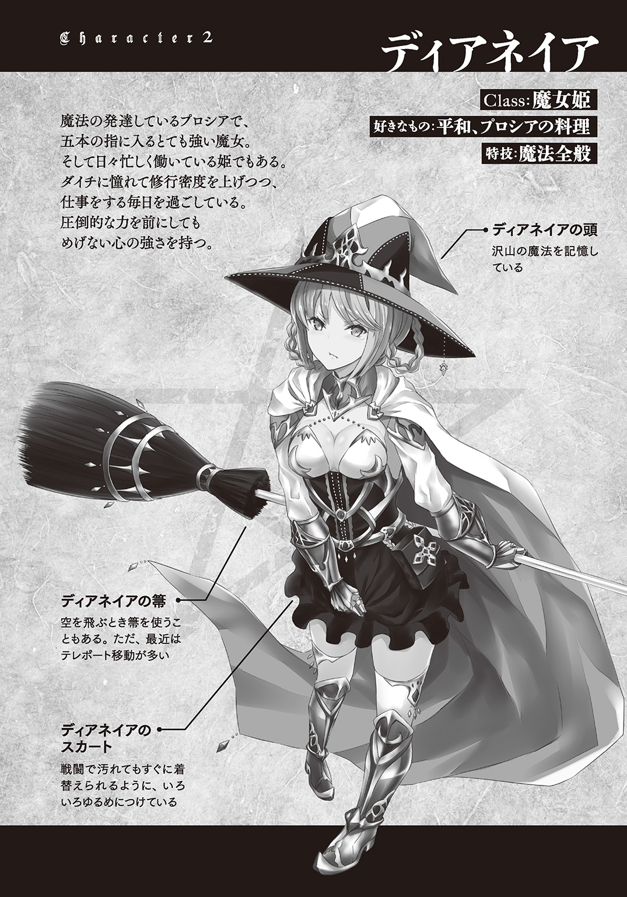
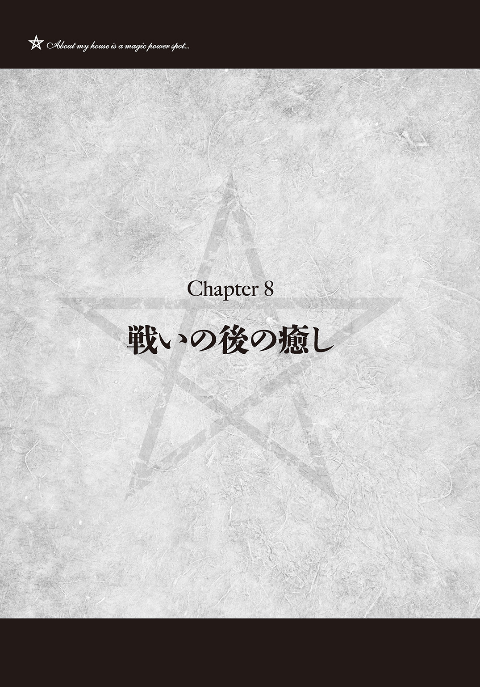
夕方になって我が家の庭に戻ると、そこでは、なぜかヘスティが山盛りの魔石をぽかぽか殴っていた。
「ん、お帰り」
「おう、ただいま。というか、なにしてんの？」
「魔石の精製。こうしないと、使いにくい。でも、処理しておけば、杖にも、薬にも、なんでも、使える」
ぽかぽか殴っているだけに見えるが、それで精製できるのか。
「長年の、勘」
グッと親指を立ててくる。
まあ、使えるならそれはそれでいいんだけどさ。
「ああ、そうだ。これやるよ」
ちょうどいい、と俺は肩に担いでいた大きな魔石をヘスティに見せた。
これだけデカけりゃ何かに使えるだろう、と思っていたのだが、
「......なにそれ、見たことない」
ヘスティは目を丸くしていた。
「ヘスティはダンジョンマスターって知らないのか？ そいつの魔石なんだが」
「......ダンジョンマスターは、知ってる。でも、ここまで、大きい魔石は普通は採れるものじゃない」
「へー、でも、俺が倒したらこれが出たんだけど」
「この大きさは、異常。ありえない。突然変異か、何か」
マジか。ヘスティでも未知の代物だったのか。
「使えそうか？」
「んー......これ、精製すると、何が起きるか、わからない」
この石ってそんなに危ないものなのかよ。
戦利品だと思って普通に持ってきてしまったけれども、どこかに捨てた方が良いんだろうかね。
「......地中に埋めておけば、ダンジョンができるくらい、の力が入っているから。そこらへんに捨てるのは危険」
「え？ なに、そうなの？ ......どうやって処理すればいいんだ」
捨てたらダンジョンが発生するとか厄介すぎるだろ。
もう一回火の玉で攻撃されまくるのは嫌だぞ、と頭を悩ませていると、ヘスティが首を横に振った。
「ん、大丈夫。放っておいたりしたら、モンスターが異常発生して、危ないから。むしろ、アナタ以外には扱えないから、持ってきて、正解」
「いや、正解って言われても、使いようも捨てようもないんだろ？」
「んーん、平気。この家の方が、魔力、強いから。ここの地中に埋めておけば、魔力が循環して、アナタの支配下に入る。それが一番、安全」
「それで、危険はないのか？」
「全くない。恐らく、我の予想では、アナタが強化されると思う」
うんうん、とヘスティは頷いてくる。
原理は分からないけれど、それが一番安全だというのなら、地中に埋めておくか。
「ゴーレム、穴掘り頼むわ」
「......！」
俺が穴掘りを頼むと、ゴーレムは元気よく地面を掘り返し始めた。
いい感じの深さになったら放り込んで土をかぶせよう。
「あと、少し砕いて欠片をくれれば、我が、研究しておく。それでもしも、使えそうなら何かに使う」
「それじゃ、頼むわー」
俺は魔石を軽く殴る。
すると簡単に砕けたので、ヘスティに渡すことにした。
「......簡単に割るね」
「駄目だったか？」
「普通、魔力の量に従って、堅くなる。だから、普通は、素手とかで、割れない」
「いや、さっきヘスティがやってたことをまねただけなんだけど」
「......長年の勘が一瞬で塗り替えられた......」
ヘスティが落ち込み始めたが、とりあえず、砕いた物を渡していると、
「ああ、いました！ ダイチさま！ 姉上さま――!!」
「ぬっ......」
アンネがこちらにふらふらと歩いて来たので、ヘスティが俺の後ろに隠れた。
そこまで警戒するほどか、と思うけれども、確かに今のアンネはいつもと違う。
目は明らかに疲れていて、服だって汚れていて、ところどころが破れていた。
「どうしたアンネ。すっごいボロボロでヘロヘロだけど」
「ちょっと街の防衛で、力を使い過ぎまして。このありさまなんですよー。ダンジョンモンスターを押しとどめるのに、マジックアイテムを作りまくったので......」
「へえ、相当派手にやってたんだな。で、何しに来たんだ？」
「魔力の補給をさせてもらおうと思いまして」
補給、補給ね。
ここでする必要があるのか？
「ありますよー。だってわたしの回復する欲は......はあ......はあ......姉上さまからの愛か攻撃を受けること、ですもの......」
アンネの目がヤバくなっている。
はあはあ言いながら、ヘスティのことを見ている。
「あのお......一度だけでいいので......姉上さまを......はあ、貸していただけませんか？」
「だってさ。どうする、ヘスティ」
「わ、我、お、お断りする」
ヘスティは軽く青ざめながら、断っているけど。
「ああ、姉上さま！ その反応もまたイイ!!」
ああ、うん、これは別に攻撃とかしなくてもいいんだな。
とりあえず、放置しておけば回復するんだろう。
ならば、放っておこう。
「はあ......はあ......ありがとうございます、姉上さま。少し回復いたしました」
「燃費良いなあ、アンタ」
「いえいえ、それほどでも。......しかし、ダイチさま。それは、モンスターの魔石ですか？」
回復したアンネは、俺が担いでいる大きな魔石を指差してきた。
「おう。なんか魔力が強すぎるらしいから、ここに埋めるつもりなんだよ」
「そうでしたか。......ええ、それならば安心できます。魔石にしては膨大すぎる魔力を感じるので。ダイチさまとか、この魔力スポットから見れば微々たるものですが」
「ん、それは同感」
竜王二人からお墨付きを得てしまった。
「そうか、じゃあ、埋めておくか」
こうしてダンジョンマスターの魔石は、一部を除いて俺の家の魔力スポットにしっかり埋め込まれた。
そしてどうやら、我が家の魔力はちょっとだけ強化されたらしい。
本当に微々たるものらしいけどな。
次の日。
俺は家の周辺の土木工事にいそしんでいた。
「えーっと、ここら辺に木を埋めておけばいいかな」
戦闘の余波で周辺の森がボロボロになっていたのだ。
特にへスティに任せていた場所が、真っ白な灰になっていたりする。どうやら、途中から炎で燃やしつくしたらしい。
「途中まで、この姿でやってたけど、数が多かったから、一気に焼いた」
「できれば後片付けのことまで考えてくれると助かったけど......まあ、ヘスティが無事なら良いか」
片付ければ良いだけだしな、と、へスティと喋ったり、ゴーレムを使ったりしながら灰を運び出していると、
「こんにちはー。ご挨拶に来ましたー」
「あれ、アンネ？」
森の方からアンネが訪ねてきた。
「何しに来たんだ？ 挨拶って、もう帰る時期なのか？」
アンネは武装都市からの使節だ。
そして、ダンジョンマスターの脅威があったからこちらに来たという。
だからその原因が去った以上、この周辺に留まる理由はない。
すぐに地元へ帰るのかと思ったのだが、アンネは首を横に振った。そして、
「ああ、お話ししておりませんでしたね。この度、わたしアンネは、プロシアの方に住まうことになりまして」
「っ!?」
嬉しそうな笑みと共に放たれた言葉にヘスティの動きが固まった。
「昨日、ディアネイアさまにも報告したのですが。この森にほど近い、プロシア外周部の土地を貰いまして、アイテムショップを開くことにしたんですよ！」
「......」
ヘスティは固まったままだ。
結構なショックだったらしいが、まあ、置いておくとして、
「へえ、そうなのか。どういう風の吹きまわしだ？」
武装都市のそこそこ良い立場にいたんじゃないのか？
「まあ、そうなんですけどね。でも、指示程度なら、プロシアからでもできますし、長官からも許可を得たので問題ないです」
武装都市は随分と心が広いというか、対応が思い切ってるな。
「ええ、わたしがマジックアイテム作って売る生活を、またやりたいなって言ったらすぐに許可をくれました」
「そういえば、元々アイテム売りだったんだっけか？」
「はい。それになにより......はあ......はあ......こっちのほうが、姉上さまに、近いので......。姉上さまに近い空気を吸いたいなって思ったんです」
顔を赤らめながら言ってくる。
その顔にヘスティが僅かに後ずさりしてるし、こりゃ重症だ。
というか、なるほど。アイテムショップとかは建前だな、これ。
本命はヘスティか。
「あ、でも姉上さまだけじゃないんですよ？ その......ええと......このダイチさまの近くにいるだけで、なんというか、魔力の渦に軽くぶたれる感覚とか、本当に、癖に、なってしまって......。こんなにしゅごい力、初めてで......」
ああ、これは、本当に酷いな。
俺も巻き込まれたよ。
ヘスティの方を見たら、微妙に同情された気もする。
まあ、俺に迷惑をかけて来ないなら、どんな性癖を持っててもいいんだけどさ。
「はあ......って、話がずれてしまいました。ええと、そういうわけで、お近づきの印ってことで、今度ポーションを配り歩こうと思うんですが、ダイチさまは以前のモノと同じで大丈夫ですか？」
「ああ、あのポーションか。この前にディアネイアに使ったけど、すげえ好感触だったんだよな」
「あら、そうだったんですか!? ......もしかして、アイテムショップの土地をくれたのって、ダイチさまのお陰......？」
何やらぶつぶつ言っているが、ディアネイアともきっちり上手くやっているらしい。良いことだ。
「しかし、あの薬すごいんだな。傷がほとんど一瞬で治っちまったんだ」
「わたしの自信作ですからね。――うん、なくなってしまったのなら、補充しておかなければなりませんし、今度持ってきますね！」
「え？ ディアネイアは貴重なものとか言ってたけど、いいのか？」
聞くと、アンネはにっこり笑った。
「はい！ わたしにとって、こうして姉上さまの傍に寄れるチャンスの方が貴重ですから!! 少し抱かせてくれれば、いくらでも補充しますよ！」
そう言って、彼女は興奮しながらにじり寄ってくる。
もちろん、視線の先にはヘスティがいる。
ヘスティは、もう諦めたような顔で、俺の顔を見上げている。
「......なんだか、話しかけられる度に、我、抱きつかれているような気がする」
「まあ、なんだ？ 本当にやばかったら、タップして俺のところに逃げていいからな」
そのまま、ヘスティに抱きついた後で、アンネは薬を持ってくると言っていったん戻っていった。
どうやら、俺たちに新しい隣人ができたようだ。
隣というには、ちょっと遠い気もするけれどな。
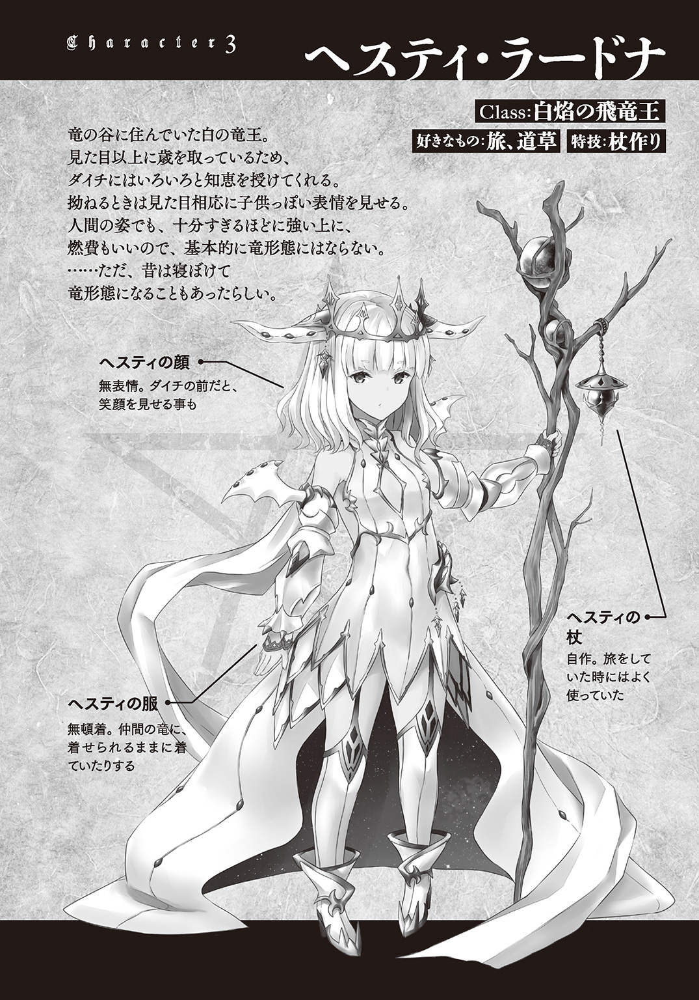

夜。
王都、ディアネイアの城の大ホールでは、大勢を招いたパーティーが開かれていた。
「街の皆よ。この度は、このプロシアの街を守ることに協力してくれてありがとう！ ささやかながらパーティーを開かせてもらった。存分に飲んでほしい！」
音頭を取るのはディアネイアで、彼女はグラスを掲げて声を張り上げた。
「それでは......乾杯！」
「かんぱーい!!」
そして、大ホールでの飲み食いは開始される。
参加者の半数が屈強な冒険者たちだ。
次から次へと酒が出ては、飲み干されていく。
その光景を見て、騎士団長は嘆息する。
彼の手には、一枚の資料があった。
「やれやれ、この宴会のペースだと、モンスターの肉や魔石で稼いだ額が、かなり吹っ飛びますな」
そんな彼の肩を、ディアネイアはポンと叩く。
「そうケチケチするな騎士団長。街の被害は軽微だったのだ。これくらいしなければ、むしろバチが当たるだろう」
「そうですね。......そういえば、彼らは？」
「声をかけたのだが、面倒だからパスだと。だから、今から私がなんとかしておくよ」
「すみません、お願いします」
などと会話していると、
「ヒャッハー、姫さん。ありがとうよ。酒が美味いぜ」
シャイニングヘッドの面々がディアネイアの方へ歩み寄ってきた。
「そうか、楽しんでもらっているようで何よりだ」
「ヒャッハー。でも、あれだな。大地の主みたいなあの人は来ねえんだな」
「まあ、あとあと、私の方から行くさ」
「ヒャッハー。そうなのか。じゃあ、ちょうどいいや。これ、持っていってくれよ」
彼らが差し出してくるのは、大きな酒の瓶だ。
「これは？」
「俺たちが飲んだ中で、一番うまかった酒だ。一番活躍した人が飲まないのは、噓だろ？」
「そうか......分かった。では、君たちの気持ちと一緒に、有り難く頂戴しておくよ」
ディアネイアが酒瓶を受け取ると、シャイニングヘッドの面々は笑顔を浮かべ、手を振って背を向けた。
「ヒャッハー。それじゃあな、姫さん。俺たちはまだまだ飲むぜ。そうだろ、てめえら」
「おうっ！」
そして、人ごみの中に消えていった。
気持ちの良い冒険者たちだ、と後ろ姿を見て思いながら、ディアネイアは手元の酒に視線を落とす。
「......さて、それでは、彼らの気持ちも届けねばな。騎士団長。私はダイチ殿のところへ行ってくるよ」
「はい、行ってらっしゃいませ」
「《テレポート》」
そして、ディアネイアはその場からかき消えた。
「――で、酒と飯を持って、俺のところに来た、と」
「うむ、シャイニングヘッドの連中が持ってきた酒と、私が一番美味いと思った料理だ。どうか相席させてほしい」
ディアネイアが大量の酒と食い物を持ってきたので、俺は外で夕飯を食っていた。
リンゴ畑にビニールシートを敷いて、小宴会みたいになっている。
別に、そういうのを求めてダンジョンマスターを倒したわけじゃないんだけどな。
美味いものが貰えるなら、貰っておこうと思うけどさ。
「でも、アンタがこっちに来てもよかったのかよ？ 姫なら、向こうにいた方が良かったんじゃないのか」
俺は別に、静かになった家でゆったりとメシを食えればいいだけなんだし。
気にする必要はないんだけど。
「構わないさ。今日の主役は、冒険者と、貴方たちとアンネ殿だ。冒険者は城の方でもてなしている。――だから、私は貴方たちと一緒に飲みたいよ」
そう言うのなら、別に良いけどよ。
俺はどっちみち落ち着いて夕飯を食うだけだし。
「そうか。ありがたい。それでは、存分に祝わせてもらおう」
などと言って、ディアネイアはお酌をしてくる。
コップに入れられるのは透明で炭酸が強めの酒だ。
「おお、すっきりしていて美味いな」
「貴方に喜んでもらえると、私も嬉しいよ」
と、どんどん注がれる酒を飲んでいると、隣に座っていたヘスティがぐいぐいと袖を引っ張ってきた。
「あん？ どうした、ヘスティ」
「我、落ち着けないんだけど」
首を振ってみれば、ヘスティは、見事にアンネの胸の中に埋もれていた。
「ああ！ 姉上さまの抵抗！ すごい！」
「......うざい......!!」
「ひゃあん」
まあ、なんというか、いつも通りのやつだ。
逃げたくなったら、振り払ってくるだろうから良いだろう。
アンネもアンネで元気になっているようだし。
少し騒がしい雰囲気だが、落ち着けなくもない。
......ああ、悪くない気分だ。
賑やかで楽しい気分になってくる。
「酒も美味いし、ディアネイアが持ってきた料理も、サクラの料理も美味いし。今日は良い夕飯を食えてるなあ」
「ふふ、主様にそう言ってもらえると、作った甲斐があります。あ、お茶が切れてますね。お代わりをどうぞ」
そうしてサクラが、お茶を注いでくれる。
「......もうおしまい。遠ざける......！」
「あ、姉上さまー、そんなあー」
周囲は相変わらず騒がしいけれども。
賑やかな食卓も、たまには、いいものだな。
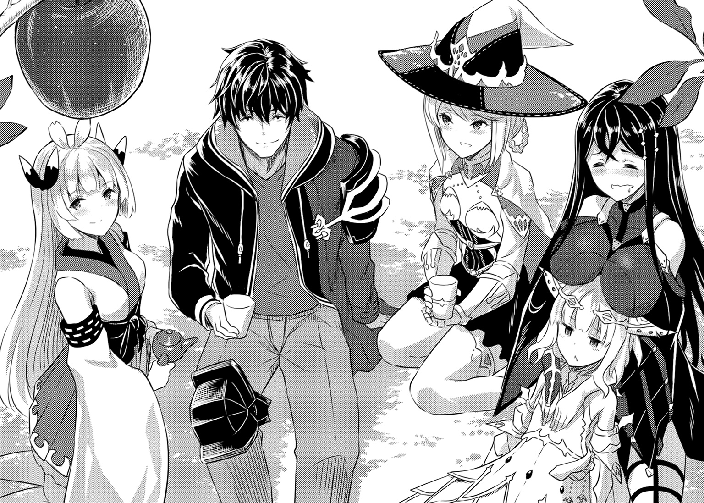
あ と が き
『俺の家が魔力スポットだった件 ～住んでいるだけで世界最強～』の２巻をお手にとっていただき、ありがとうございました。
著者の、あまうい白一です。
本作は、召喚された時点で最強な主人公が、外敵をモノともせず自宅でまったり暮らしていく、タワーディフェンスチックなスローライフという内容になっております。
１巻発売から二ヶ月後の、ハイスピード続刊となりました。
『スローライフ』なのに『ハイスピード』とはこれいかに、となるかもしれませんが、どうぞご容赦ください。
毎日連載し続けていたので、新規で執筆した原稿は多少なのですが、このような速度で２巻が出せたのは皆様の応援があったからこそです。
本当にありがとうございます。
続いて、今回の巻の内容に触れていこうかと思います。
今回はタワーディフェンスのタワーを強化したり、タワーの武器を強化したり、タワーの持ち主を強化したりと、強化しまくりな話となりました。
割と全般的に住まいが強化されて、更に安らかに過ごせるようになりました。
またダイチもダイチで、自分の力を存分に発揮できる装備を作ってくれる友人ができて、更に生活が豊かになりました。
今後もダイチは、色々な力の使い方を見て、覚えていきます。
とはいえその力は大抵、まったり平和に暮らすことに費やされるわけで、危険は全くなかったりします。
基本的に家から出ないですし、危険なことに進んで首を突っ込んだりはしませんからね。
また、これからの話になりますが、ダイチの家の周りは色々な意味で、もっと賑やかになっていくでしょう。
隣人も増えるでしょうし、作れるゴーレムの種類も増えていきます。設備や罠もどんどん作られていく予定です。人狼や竜とも、もっと親密な間柄になっていくかと思われます。
......若干、人間の知人が少ないような気もしますが、自宅が深い森の中ですからね。ある程度は仕方がありませんね。
ともあれ、そんな感じでダイチの平和な生活はより楽しく明るいものになっていきます。そんな展開を期待して頂ければ幸いです。
さて、ここからは少しだけ、宣伝をさせてください。
「小説家になろう」のあまうい白一のページには、私が執筆している小説が掲載されています。
いくつかの話を定期的に連載しておりますので、お時間のある時などに軽く眺めていただければ、と思います。
左に記載してある二次元コード、もしくはＵＲＬの方からも入れます。
（あまうい白一のページ）→
（http://mypage.syosetu.com/420236/）
最後に謝辞を。
鍋島テツヒロ先生、可愛いイラストと、格好よく恐ろしいモンスターデザインありがとうございました！ 黒髪巨乳のアンネのデザインを見た時は震えるほど嬉しかったです！
担当編集の山本様。早いペースの刊行でしたが、たくさんのサポートをしていただき、ありがとうございました。
アフターグロウのデザイナー様。いつも格好いいデザイン、ありがとうございます！
ダッシュエックス文庫編集部の皆さま、関係者の方々、そして何より、ここまで読んでいただいた読者の皆様、本当にありがとうございました。
またお会いできれば幸いです。
それでは。
平成二十八年 うだるような暑さの真夜中 あまうい白一
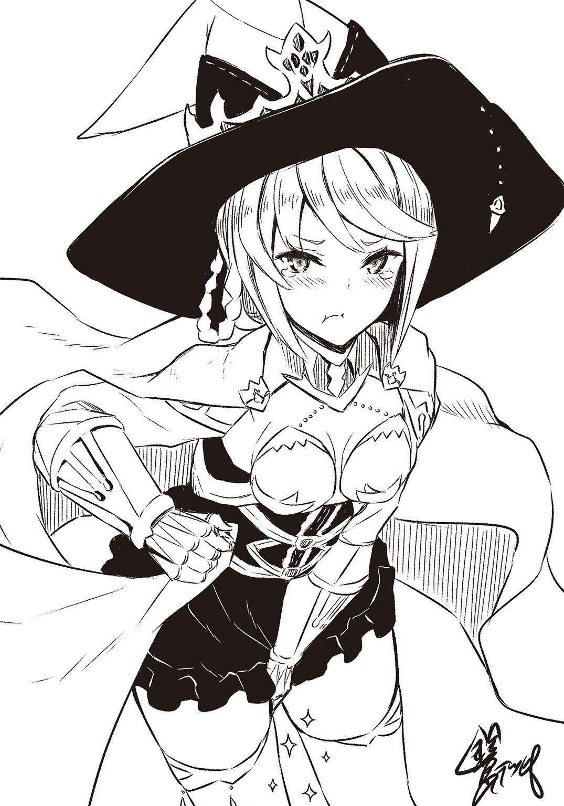
著者紹介
あまうい白一 あまうい しろいち
甘いもの好きなライトノベル作家。
この度、無事に二巻を出す事ができました。
どうもありがとうございます。
illustration
鍋島テツヒロ なべしま てつひろ
山口県出身、埼玉県在住のイラストレーター。
代表作にイラスト担当「犬とハサミは使いよう」著：更伊俊介（ファミ通文庫）、「マグダラで眠れ」著：支倉凍砂（電撃文庫）など。
ダッシュエックス文庫DIGITAL
俺の家が魔力スポットだった件２
～住んでいるだけで世界最強～
著者 あまうい白一
© SHIROICHI AMAUI 2016
２０１６年９月30日発行
この電子書籍は、ダッシュエックス文庫「俺の家が魔力スポットだった件２ ～住んでいるだけで世界最強～」
２０１６年８月30日発行の第１刷を底本としています。
発行者 鈴木晴彦
発行所 株式会社 集英社
〒１０１－８０５０
東京都千代田区一ツ橋２丁目５番10号
０３－３２３０－６０８０（読者係）
制作所 株式会社ＩＣＥ
本作品の全部また一部を無断で複製、転載、改竄、インターネット上に掲載すること、および有償無償に関わらず、本データを第三者に譲渡することを禁じます。なお個人利用の目的であっても、コピーガードを解除しての複製は、法律で禁じられています。